| 無敵の姫騎士がドMに目覚めたようです (あとみっく文庫) | |
| 酒井仁 | |
| (2014) | |
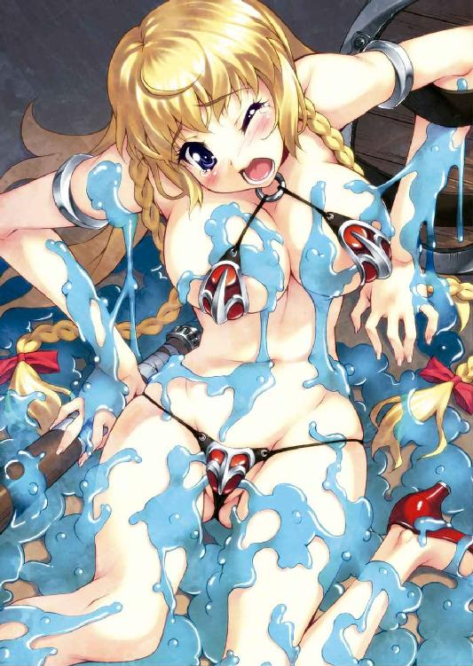
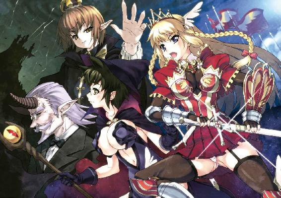
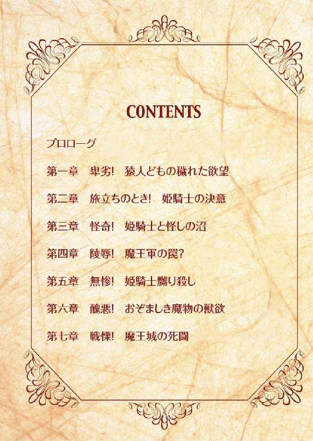
無敵の姫騎士がドMに目覚めたようです
小説：酒井仁
挿絵：池田靖宏
あとみっく文庫
※本作品の全部あるいは一部を無断で複製・転載・配信・送信したり、ホームページ上に転載することを禁止します。本作品の内容を無断で改変、改ざん等行うことも禁止します。また、有償・無償にかかわらず本作品を第三者に譲渡することはできません。
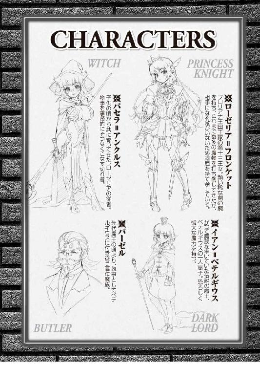
目次
プロローグ
ズシャァアアアアッッ。
彼は生まれて初めて───焦燥感を覚えていた。
（すでに三騎倒され、残るは我を含めて四騎のみ......敵はたった二人な上に一人は下賤なる魔法使い。しかも......！）
「クッ、我ら暗黒七魔槍が人間に、女などにィイッッ！」
彼の駆る死霊騎馬が髑髏の頭部でひひんといななく。死霊騎馬に騎乗する彼とその仲間は「暗黒七魔槍」の名で知られた死霊騎士団。
かつてたった七騎で王国騎士団の半数を屠り、人間たちを恐怖のどん底に叩き込んだ呪われた騎士。その名を口にすることもためらわれる、最凶の存在。
（我らが人間に恐れられても、その逆などありえない。ありえないことが起こっている！ なぜだ......なぜ我らの剣が届かないのだ！）
魔法使いの放つ火球を剣で弾き飛ばしながら、馬上の女騎士に肉迫する。
魔剣の切っ先が届く寸前、女騎士は見事な手綱さばきでそれをかわし、うしろも見ずに死霊騎士の胴を薙ぎ払う。鮮やかな金髪がなびき、紅の甲冑が炎のような軌跡を描く。
「..................ハッッッ」
「ぎやぁああああああああッッッッ!!」
甲冑から黒い炎を噴き上げ、四体目の死霊騎士がどうと地面に倒れ伏す。
まただ、また届かない。彼らの剣は女騎士に届かず、彼女の剣だけが死霊騎士に手傷を負わせ、致命傷を与えにくる。攻防の合間に女魔法使いが牽制の攻撃を的確に打ち込んできて、死霊たちの連携を崩しにくる。
（よもや、これほどの手練れがいようとは。だが暗黒七魔槍の名にかけて敗れるわけにはいかぬ。こうなれば女魔法使いを人質にしてでも！）
と、髑髏の頭を持つ死霊騎馬の動きが止まる。
死霊騎馬の足に魔力の霧が絡みつき、自由を奪っていたのだ。
「騎馬の動きは止めたわ、いまよ！」
「ぬぅ!? いつの間にそんな呪文を!? クッ、足を封じられては馬を捨てるしか......な、なんだと!?」
彼は信じられぬ光景を見た。
足を封じられたのは彼らだけのはずなのに、女騎士も馬から下りている。闘気も見せずに自然体で佇み静かに死霊たちを見つめている。
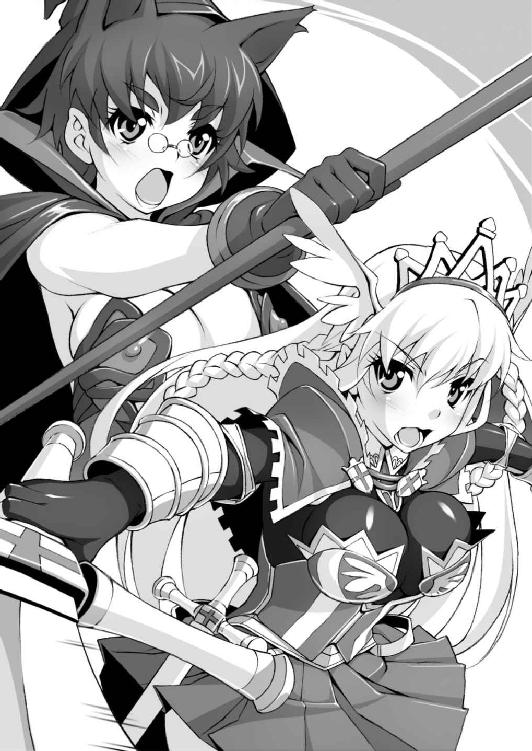
「我らを愚弄するか、女ッッッ。我が秘奥義、その身で味わい後悔の淵に沈め!!」
ゆらり変則的に構えた次の瞬間、死霊騎士の姿が消えた。
否、人間にはとうていなし得ない動きで移動し、女騎士の死角からすさまじい突きを繰り出したのだ。残る二人の死霊騎士も同時に他方向から斬りかかっていた。かつてこの攻撃をかわした者はいない。
勝利を確信した彼の顔が、驚愕に歪む。
「な──────」
まるで風にそよぐ木の葉のように。何げなく身をひねっただけで、女騎士はすべての攻撃をミリ単位の精密さでかわしていた。
シャッ............シュパッッ、ギャリィイイッッッ。
目にも止まらぬ速度で振り抜けた剣光が、三体の死霊騎士の急所を貫いていた。
「ガァアアアアアアアアアアアア」
身体が崩れる。魔力を宿した黒い炎が噴きこぼれ中空に飛び散っていく。
死霊の存在を形作る妖しの力が統率を失い虚空に消え失せる。死霊騎士の目に映るのは、汗一つかいていない女騎士の表情。
「ふぁー............ぁ。なんてつまらない戦いだったのかしら。ねえパセラ」
いまにも生あくびを噛み殺しかねない、およそ退屈極まる「倦怠」。
「暗黒七魔槍とかいうから、少しは期待していたのに。肩すかしもいいところですわ」
「いつも通り、なんの問題もないわローゼリア。お役目は果たしたんだから、とっとと城に戻るわよ」
黒の魔法帽をくいとかぶり直し、こちらも息切れ一つ起こしていない女魔法使いが事務的に告げる。崩れ落ちる死霊騎士たちには一顧もくれることなく、ローゼリアと呼ばれた騎士はのろのろと剣を収め、かつんと足下の小石を蹴り上げる。
「あああ、不幸ですわ退屈ですわ。若い身空で、早くも人生の価値を見失うなんて！ わたくしの人生は暗黒に閉ざされてしまったのだわ!! そうではなくてパセラ」
「いいじゃん、勝ったんだから。『完全なる騎士』『永劫に届かざる姫騎士』、『彼岸の果てに佇む永遠の墓標』。ローゼリア＝フロンケット第十三王女殿下！」
皮肉たっぷりの従者の言葉に、姫騎士ローゼリアは思いきりしかめ面をしてみせる。
彼女こそフロリアナ王国王家第十三王女にして、幾多の勇者を輩出した武門の誉れ高きフロンケットの次期当主。
無敵にして無敗、生まれてこの方いちどたりとも相手の攻撃を受けたことのない完全無欠の女騎士。それゆえに深刻なる退屈と絶望にうちひしがれる悲劇の姫騎士であった。
その夜───ローゼリアは城の図書室にこもっていた。
辺境に位置するこの城には年老いた父と従者のパセラ、その他数名の使用人しかいない。この図書室を利用するのはローゼリアくらいのものである。
（こんな陰気なところ、好きでこもっているわけでもないのですけれど......）
埒もなく、書物の頁を無為にめくる。
「はぁ............わたくしは本当にこのままでいいのかしら」
ため息を落としたあと、分厚い書物をつまみ上げた手首が「ひゅッ」と動いた。ぽすんっ！ 狙いは過たず、本一冊分の隙間に書物がぴたりと吸い込まれる。
無双の剣を誇る姫騎士の悩みとは、「退屈」。どんなに剣の腕を磨こうとも、いかなる魔法の呪文でも倒せない最悪の強敵だ。
（幾人もの勇者を輩出してきた武門の名家、フロンケットの跡取りとして、わたくしは最高の騎士教育を施されてきた。その甲斐あって、わたくしも少しは騎士としての強さを身につけたつもりだったけれど......）
だが近年、魔物の跋扈は極端に少なくなっており、国と国との諍いも武力ではなく経済や政治にその舞台を移している。
ローゼリアの無双の剣技は、時代に取り残された前世紀の遺物となりつつある。
（パセラやお父さまはそれでもいいと仰る。我がフロンケット家は政とは無縁の傍流、ただ強くあればいい、騎士の誇りと民を守る力さえあればいいと）
戦いの場がないわけではない。今日従者と共に打ち倒した死霊騎士たちも辺境の人々を怯えさせていた凶悪な魔物だ。民のために剣を振るうのは騎士の務めである。
そのことに不満があるわけではない。不満があるのは、討伐すべき魔物たちがあまりにも「手応えがなさすぎる」ことだ。
（今日の死霊どももそうだわ、あれだけ雁首を揃えておきながら締まりのない剣筋！ あんなもの、若いころのお父さまの太刀の百分の一の美しさもなかった）
だがその父も現役をとうに引退し、いまはひなたぼっこの大好きな好々爺となってしまった。
その後、幾人かの剣の師について学んだものの、ローゼリアの剣に太刀打ちできる者は程なくいなくなってしまった。
それから、ローゼリアにただの一撃も攻撃を加えた者はいない。
人間でも、魔物でも。
「いいえ、ここで慢心するなど騎士の振る舞いではないわ」
彼女は手にしていた書物を置いて、すっくと立ち上がる。
騎士道精神を魂に刻みつけた彼女にとって、最強の称号は足枷でしかない。自分はもっと遠くを、高みを目指さなければならない、そう思った。
（きっとパセラはまた小馬鹿にするんでしょうね）
実務重視の皮肉屋の従者は、何より無駄を嫌う。
パセラにとってはさほど重要とも思われない、正義感や使命感、騎士道精神にまで舌鋒を向けて憚らない。二つ年上のパセラは、ローゼリアの従者である前に共に育ってきた、幼馴染みのような存在だ。
「でも......いったいどうすればいいのかしら」
もう何ヶ月も頭にこびりついて離れない悩み、焦り、そして不安が拭い去れない。
（わたくしはこの先もずっと、道化を演じ続けなければいけないのかしら。嗚呼！ 真の騎士への道、騎士としてもっと成長するにはどうすれば......）
のろのろと置いた書物を書架に戻そうとしたときであった。
「あらっ、いけない」
奥に横向きに突っ込まれていた古ぼけた薄い本が、棚の向こうに落ちてしまっていた。月明かりに埃が舞って静謐な夜の空気を濁らせる。ローゼリアは「あらあら」と一人ごちながら書架の向こう側に回り、落ちたそれを拾い上げた。
（ずいぶん、古い本ね。ん、『騎士道物語』............？）
表面の埃を軽く手で払うと、タイトルと図版が見えた。
甲冑に身を包んだ騎士が、剣を振り上げて巨大な魔物に立ち向かっている。図版は幼稚、装丁もあまり良くない廉価な本だ。
（けれど......こ、この「騎士道」の文字は！）
その一言に騎士は吸い寄せられる。
「ふむふむ......降りかかる苦難、それを乗り越える努力。それこそが果てしなき騎士道に続く黄金の道であった......まあ、まあ」
ぱらぱらと頁をめくり立ったまま読みふける。
どう見ても子どもか、読み書きの苦手な庶民向けに作られた、他愛のない英雄譚。姫騎士は恐ろしいほど真剣な眼差しで読み進んでいく。アメジストの瞳が精気に満ちた輝きを取り戻していく。
「これは......これ、これだわ！ 降りかかる苦難を避けることなく敢えて受け入れ、乗り越えることで己を高める......！ それこそが真の騎士道、わたくしが進むべきたった一つの正しい道だったんだわ......ああ、神よ感謝します......!!」
突如舞い降りた天の啓示に感謝の祈りを捧げる姫騎士ローゼリア＝フロンケット。
だが、彼女が感謝を捧げた相手が本当に「神」だったのか、あるいは皮肉な運命のイタズラだったのか、いまの彼女には知るよしもなかったのであった。
第一章 卑劣！ 猿人どもの穢れた欲望
その日、村は朝からざわついていた。
「村を襲った魔物を退治してくれる騎士さまってのはあのお方か？」
「なんでも向かうところ敵なしのどえらい強いお人らしいぞ」
魔物に等しく滅びを与える無双の騎士さまは、しかも見目麗しい女騎士であるという。
「あ、あの美しい女性が、無敵の姫騎士さまだというのか？」
村の代表である青年モーリスは、到着した「姫騎士」に目を奪われた。
風になびく柔らかな金髪は黄金のよう、すらりとした長身は頑健そうな真紅の甲冑に覆われているが、身体の曲線は確かに女性である。
胸元が大きく突き出て腰はきゅっとくびれ、引き締まった腰つきに目を奪われない男はいないであろう、見事なプロポーションだ。
「あの」フロンケットの女騎士だと聞かされていなければ、王立歌劇にでも出ている男装の麗人にしか見えない。唯一、腰に下げた大小の二刀が、実用本位のものに見えた。
「パセラ、この村でよろしいのですね」
「はい、ローゼリアさま」
傍らの従者に問いかけると、三角の黒帽子が揺れる。黒のマントの下の小さな肢体を見て、魔法使いらしき従者も女だということに気づく。
身体に密着したボディスーツの胸元が騎士に勝るとも劣らず盛り上がっていて、小柄な身体とアンバランスなところが危うい色気を放っている。
パセラと呼ばれた女魔法使いは愛馬から降りる姫騎士に手を貸してから、モーリスの前に立って帽子のつばを上げた。
「あなたはこの村の代表？ ずいぶん若いようだけど」
村長にしては青年はせいぜい二十代後半にしか見えない。
無遠慮に彼を見つめる従者は、姫騎士のブロンドと違い艶やかな黒の前髪。騎士のような派手さはないが、知的な美貌がそこにあった。にこりともしない顔は、いささか事務的すぎるほどだ。
「せ、先日より村長代行をしております、モーリスです。わたくしの父である先代の長は魔物の襲撃のときに、その......」
まあ、と騎士が口に手を当てて小さな声を上げた。
「もしや、村人を守るために雄々しくも立ち向かい、犠牲に......なんと勇敢な！」
「いえ、魔物を見て腰を抜かし、寝込んでおります」
「あ、あら。......そ、そうですか。こほん、お大事になさって下さい」
残念そうに肩を落とす姫騎士。と、モーリス青年は、思わず声を失った。
（ああ、純朴な田舎の青年がローゼリアに見とれてるよ）と傍らの従者は思う。
すっきりと通った鼻梁と微かな笑みを浮かべたふくよかな唇。深いアメジストの瞳はびっしりと長い睫毛で彩られている。
穏やかな眼差しは湖のように深く慈悲の光をたたえている。貴族の高慢さなど微塵も感じられない美貌は、民を愛し、守ろうという気高き魂の輝きをまとっている。
姫君の威光を前に恐縮する青年に、従者はこほんと咳払いをして注意をひく。
「こちらが我が主、フロリアナ王国王家第十三王女ローゼリア＝フロンケット。あたしは従者のパセラ。状況の仔細を」
「あっ、わたくしのシュトラウスを......この馬をお願いできますかしら」
「あ、あぁ......はい、そ、そうですね。おい誰か、王女様の馬を村の共同厩舎に」
青年は村人に王女の愛馬シュトラウスを預け、姫騎士一行を招き入れる。
ローゼリアのあとに付き従うパセラは、慇懃に振る舞っているが、言葉づかいはぶっきらぼうで愛想がない。傍らでにこにこと笑みを絶やさない騎士の方が、どうかすると腰が低く見えるほどだ。
「まずは村の被害状況を。その上で援助物資や医療支援の手配ね」
「ええ、任せますわ、パセラ」
「地形の確認、魔物の種類、対処策などはすべて明朝までに。何か質問は？」
「何もなくてよ、よろしくね、パセラ」
戦闘に関してパセラは補助サポート役、逆に言えば戦闘以外の部分を取りしきるのは彼女の役割だ。そして彼女ほど有能な従者は滅多にいない。
（たいした魔物でもなさそうだし楽な仕事だわ。さっさと片づけて明日には帰れるわ）
自分の段取りに絶対の自信を持つパセラの予測に、間違いなどあるはずがない。
ないはずであった。
「なるほど、成人男性よりも巨きな猿の群れ......棍棒のようなものを振り回していたとなると、猿人と見て間違いなさそうね」
「え、猿人ですか。襲われた村人の怪我はたいしたことはないのですが、とにかく冬の蓄えの食料をごっそりやられてしまいました」
魔物の正体はすぐに知れた。下級モンスターの中でもきわめて原始的な猿人だ。
「簡単な武器を使ったりカタコトを話す程度の知恵はあり、性質は獰猛にして貪欲。しかも群れで行動するため、こんな小さな村などひとたまりもないわね」
「そ、そんな魔物にこの村が狙われてしまったのか......」
パセラの言葉に村人たちは顔を曇らせ、姫騎士も気の毒そうな表情を浮かべる。
「人的被害が軽微なのは不幸中の幸いね。あいつら食い意地張ってるから、奪われた量くらいで満足したとは思えないし」
「ま、また襲ってくるということですか!?」
ご心配なく、と黒髪の従者はちゃっと片手を上げる。
「備蓄食糧支援の要請は出しておきましたし、あたしたちがきっちりそいつらを退治しますから。そうでしょ、ローゼリア殿下？」
「で、ですがお二人で大丈夫なのですか。青年団から何人か差し向けて」
「それはなりません。魔物退治は、わたくしたちにお任せ下さいッ！」
と、凛とした声で宣言したのは姫騎士ローゼリア。珍しくやる気満々の騎士に、パセラはおやというような目を向ける。猿人のような雑魚が相手の場合、たいてい退屈で沈んだ顔をするはずなのに。
「善良な民を、モンスターの魔の手から守る！ それこそが騎士の務め......この村から二度と魔物被害を出さないと誓いましょうッ、我が剣にかけて！」
すらりと長剣を抜き放つや、広いとは言えない室内に銀光が走る。
ずばっ、ズシャッ、シュパァアアアッッッ！
「おぉおっ、あの一瞬で、天井に騎士さまのサインが刻まれている！」
「しかも似顔絵付きじゃ、これはこの村の名物になるぞ」
（なんなの、この常にないはしゃぎようは......）
そう、彼女はどう見ても「はしゃいでいる」ようにしか見えなかった。
モーリスの家の離れに泊めてもらった二人は、翌朝早くに活動を開始した。
「ヤツらのねぐらの当たりはつけてあるわ。気づかれないよう馬を降りてローゼリア」
「わかりましたわ。シュトラウス、おとなしくしていてね」
愛馬シュトラウスから降りる騎士に、従者は荒れ地を指して説明を続ける。
「こっちは風上か......あなたは風下に回って。私が先に魔法で陽動攻撃をかけるから、ヤツらの背後を突いて一気に殲滅よ、いいわね。相手はたかが猿人、そう多くもなさそうだし、楽勝でしょ」
返事がない。
はて、と視線を巡らせた従者の顔が凍りつく。
「ちょ、あんたなんで!? そ、そ、そんなとこで突っ立ってたら見つかる!!」
「人々を脅かすモンスターは許さない！ いまこそ正義の鉄槌を下すときッッ」
剣を振りかざし、高々と名乗りを上げる騎士のバカ声にパセラの目が丸くなった。
「いざ参るッッ！ 尋常に勝負ですわ〜〜〜〜〜」
叫びながら岩場を駆け出す姫騎士の行動に、パセラは声を失う。
（何これは？ ナンナノコノ状況!? あたしはどこ、ここは誰？）
動転していたのは一瞬、これでもう二人とも見つかってしまったはず。
このままでは取り囲まれる、そう判断したパセラは魔術の杖を握り直す。
「我が呼びかけに答えよ、殲智の杖。我らの前に立ち塞がる愚かなる眷属どもを大地に繋ぎ止めよ」
瘤のように膨らんだ杖の先端に切れ目が走る。「カッ」と巨大な眼が見開き、重低音の振動が鈍い音を響かせる。
代々パセラの一族に伝わる魔力の杖だ。
それ自身が意志を持ち、持ち主とその主を守ると言われている。剣は護身程度にしか使えない魔法使いにとって攻撃のかなめである。
「パセラッ、わたくしから離れてはだめ、格好の的になってしまうわ！」
何言ってやがる、勝手に離れたのはあんたじゃないかと悪態をつくヒマもない。
先陣を切って飛び出した姫騎士は、無防備な背中を魔物に向けたまま、剣も抜かずにパセラの元に戻ろうとしていた。
「なっ、待っ？ 完全に囲まれてる、ローゼ!! ええい、このぉ！」
呪文の詠唱が途中なので、魔力が思うように集まっていない。
終わりの部分を咄嗟に詠み変えて、放つ。「ぼふぅうっ！」と盛大な音と共に魔力の煙が立ち上り、騎士のあとから追いかけてきた影を押し包む。
「ぎゃひぃいッッッ？ ぐほぉぉおおウウウッ！」
混乱の叫びを上げる猿人どもから距離を取りつつ、次の呪文詠唱に入りかけるパセラの手を、姫騎士がぐいと力強く引き寄せる。思わずつんのめりそうになった小柄な身体が、紅の甲冑に抱き留められた。
「大丈夫よパセラ。わたくしがあなたの盾になって守るから」
「いたいいたい甲冑に顔押しつけないで!! じゅ、呪文が唱えられない！」
何かが、いや何もかもが間違っている。
ローゼリアは自分から隙を作っているようにしか見えない。
煙幕はすぐ風に吹き飛ばされ、パセラたちを視認した巨大な猿どもが棍棒を片手にじりじりと距離を詰めてくる。
（これは格下の相手を嬲り者にしようってやり方ね。こいつら、あたしたちを完全に舐めてやがる......ッッ）
悔しいが、先ほどのドタバタを見ればそう判断するのも無理はない。ローゼリアはまだ剣を抜く素振りすら見せずにパセラを抱きしめたままだ。
「ローゼ、ローゼリア！ あんた何してんのさっきから、まさか......幻覚魔法でもかけられたんじゃないでしょうね」
もしやの可能性を考えて、パセラはゾッとした。
ローゼリアが幻惑でもかけられているとすれば、このめちゃくちゃな言動にも頷ける。
（けど、魔法の痕跡なんか感じられないけど？）
「さあ来なさい、愚かなモンスター。わたくしはローゼリア＝フロンケット、勇気と誇りの名の下に正義の剣を振るう騎士！ どんな強大な敵を前にしても、この気高き心は決して屈することはないわ............ッッッ」
「どわ、わぁっ」
いきなりドンと突き放され、パセラはその場に尻餅をついた。姫騎士はというと高々と片手を上げ、夢見るような視線を斜め上方にさまよわせている。
「............どこの三文田舎芝居よ」
呆れ顔で風になびく金髪を見上げていると、背後から肩を掴まれ引き倒された。ムッと鼻が曲がりそうな獣臭にはぁはぁという荒い息づかい。
「しまっ」
従者として戦いに赴くようになってから、パセラは初めて身近に身の危険を感じた。
だが、焼けつくような殺気は感じない。ローゼリア自身が殺気らしい殺気を放っていないため、猿人も警戒心を解いているのだ。
ぎらぎらと好奇に満ちた黄色い瞳が、小柄な魔法使いを見下ろしている。
（まるでおもちゃでも手に入れた子どもね。そっちがその気なら）
パセラは手足から力を抜いた。たちまちぶ厚い獣の手が、マントの下を這い回って女体の柔らかさを愉しみ始める。
「ンッ、く、ぅうッ。ロ、ローゼリアが役に立たない以上............」
とてつもなく不愉快だがしょうがない。
魔法使いは囁くような声で呪文を詠唱し始める。
魔法を使えない猿人には、この呪文の意味などわかるまい。だが詠唱し終えたときが彼らの息の根が止まるときだ。
（うぅ、き、気持ち悪いぃ〜っ。ちょ、顔舐めないでよぉっ）
長い牙を剥き出した顔が迫り、ぬらぬらした舌がパセラの頬をねぶり上げる。
「ウホゥッ、グホホッ、グギャギャギャ」
華奢な女体をごつくて毛深い手が這い回り、ふにふにと服の上から女体を揉んでくる。
「あぁ、パセラっ。愚かな猿人ども、わたくしの従者を放しなさい！」
ガシャッ、と響いた金属音に猿人がびくりと身をこわばらせる。
（や、やっとまともに戦う気になった？ え、えぇえ〜っ!? ちょ、ちょっとぉ？）
顔を上げたパセラの黒い瞳に、ありえない光景がある。
腰に佩いた大小の二刀を鞘ごと抜き放つや、騎士はそれを思いきりよくうち捨てた。そしてまるで従者を庇うように、金髪の騎士はパセラに抱きついてきたのだ。
「忠実な従者を守るのも騎士の仕事！ パセラではなくわたくしを汚しなさい」
そう言ってがばりと仰向けになると、真紅の身体は大の字にパセラに覆い被さった。
「げうっ」
己が身を挺して従者を庇う高潔な振る舞い......ではない。長身のローゼリアに押し潰されたパセラは身動きもできず、逃げることも叶わない。
「わたくしの魂は、いかなる辱めにも屈しはしないということを、その濁った眼に焼きつけるがいいですわ。やるならやりなさい、さぁさぁ！」
「さあ、じゃないぃい───ッッッ！ 邪魔ッ、どけっ、このバカぁあっ」
姫騎士ローゼリアの忠臣パセラ＝アンクルスは恐ろしい可能性に気づきかけていた。
彼女は───ローゼリアはきわめて正気だ。理由はわからないが魔物の前に無防備な身体を投げ出し、わざと襲われようとしているのだ。

「な、何が騎士の試練よ！ ちょ、こらどけボケ女!!」
「ふふふ、このパセラをただの口の悪い従者だと思ったら大間違いですわ。こう見えても彼女は代々強大な攻撃魔法を使いこなす魔法使いの家系なのだから」
「............ウキャヒホ？」
自慢話を始めるローゼリアを、猿人たちは不思議そうに見つめて首を傾げる。
（しょうがない、ここは魔法で猿人を蹴散らすのが先決ね）
呪文の詠唱を始めると、騎士は豊かな胸を突き出すようにそっくり返った。
「わたくしは魔法は一切使えませんけれど、このパセラは地水火風、すべての属性の魔法を使いこなすまさに天才魔法使いですわ!!」
（う、うるさい、集中できないわよ、ドアホ騎士！）
「パセラが呪文を唱えれば、あなた方などただの一撃で全滅なのですよ？」
「ヒッ？」
がばり、と小柄な身体が持ち上げられたかと思うや、パセラは巨大な猿の目の前に生け贄のように突き出されていた。
呪文の詠唱はまだ途中、とても放てる状態ではない。
（も、もうちょっと、もうちょっとで......ひぃい、獣臭いッ）
「けれどこれもあなたたちの行いがもたらしたことなのです。己の犯した罪を後悔して、その報いを受けるときが来たのですわ」
ここで詠唱を止めてしまっては元の木阿弥。幸い、猿人たちはローゼリアの長口舌に首を傾げ、うきゃうきゃ言いながら手を出しかねている。
「さぁっ、いまこそ審判の時！ 滅びの言葉が唱えられるのですわ」
（ええい、もう少し、あと三節でなんとか発動できる。あああ猿人の顔が目の前にッッ）
「ウキャ？ ギャッ、ヒホホホッッッ！」
「むぐうぅううっっっ!?」
まさかローゼリアの言葉を理解したわけでもあるまいに、獣の分厚い手がパセラの口を塞いでしまった。
（しまっ、詠唱が止まっ......!!）
「ギャホッ、ウギャキャッ。ヒホホホゥウウッッ！」
「..................あら？ パセラ、魔法はまだですの」
（魔力結合が、ほどけていく!!）
一向に何も起こらない様子に、猿人はパセラの口を塞いだまま、片手を乳房に伸ばしてきた。
触り心地がよかったのか、豊乳をぎゅむぎゅむ無遠慮に揉み始める。
（うぅう、い、息ができない......頭の芯が痺れてきた）
杖を握る手から力が抜けていく。攻撃のかなめである騎士はまるで役立たず、このまま人形のように弄ばれるのかと思って薄目を開ける。
（さっきから突き刺さってくるこの視線は、え、猿人たちが............う、わぁああああああッッッッッ）
毛皮の群れを見回し、パセラの呼吸が驚きに止まる。
（あ、あの、股ぐらからにょっきり生えてる赤黒い棒って......まさか）
先端は肉の帽子を被せたような形状をしていて、裏筋が奇妙に盛り上がっている。
（ひぃいっ、血管浮き出てるぅッ！ そんで、みゃ、脈打ってるぅ〜っ）
「あ、あわ、わわわ」
思わず逸らした視線の先にも別の棒、棒、棒。先端がテカテカと輝いている。
（え、猿人の、牡の、生殖器......こ、こんなとんでもないのが？）
極限まで勃起した陰茎に、黒髪の魔女は圧倒される。
「ロゼッ、ロ、ローゼッッ。ああああれ、あれっっ」
「えっ、なあにパセラ............きゃあっ、な、なんですのこれ？」
すぐに逃げ出さなきゃと思うが、言葉にならない。
間近に見る男性器は衝撃的で、猿人たちの視線の先にあるのは自分とローゼリア。この醜悪な魔物は人間の女を見て欲情しているのだ。
（に、人間が猿人に犯されたって話は聞いたことないけど、あ、あれってまさか）
だが彼らのそれは隆々と天を仰いでびくびくと上下に揺れている。
（あ、あんなでっかいものねじ込まれでもしたら、アソコ壊れちゃうわよぉ！）
本能的にきゅうと足を閉じるが、ローゼリアはなぜかマジマジと猿人の股間のイチモツを凝視している。
「ええと、猿人の攻撃を受けることは予想していたのですけれど、そういう汚らわしいのは......けれど、これも試練なのかしら」
「バカッ、て、手を伸ばすなぁあっ」
汚らわしい、罪深いと言いつつ、金髪の姫騎士はたおやかな手を猿人の股ぐらに伸ばす。反射的に猿人が腰を退いた。手が空を切ったローゼリアの目の前で、猿人はおもむろに己のイチモツをむんずと掴んで激しくしごき始めた。
「ぐほぉおおっっっ！ ほう、ほうぅううッッッ」
シュッ、シュ、シュッ。ごしゅ、ごしゅっ、ごしゅっっっ。
大きな手のひらに肉棒を包み込み、猿人は喉をのけぞらして陰茎をしごき立てる。すると他の猿人たちも次々と股間のブツを握り、口々に叫びながら一斉に「せんずり」を始めたのだ。その異様な光景にパセラは目を丸くする。
「な、なんだこのエロ猿ども......うぇえ、気色悪い」
呪文詠唱のこともすっかり忘れてつぶやく。それほど目の当たりにする「せんずり」はグロテスクだ。
「うぅっ、確かに気持ち悪いですわ。男性器を自分で刺激すると聞いたことはあるけれど、こんなにおぞましいだなんて......ねえパセラ？」
「えっ、そ、その、そうね」
思わず口ごもってしまう。頭では理解しているが、初めて男の、それも魔物のマスかきを目にしてパセラの頬が熱くなる。
（な、なんでこのアホ娘は好奇心むき出しで見てるのよぉっ）
姫騎士は眉をひそめつつも猿人のイチモツから目を離さない。
「自分で自分を慰めるだなんて......浅ましいし、いやらしいですわ。そんなに気持ちがいいのかしら、そんな汚らわしいことが......」
しきりに「汚らわしい」を繰り返しているが、姫騎士は明らかに猿どもの自慰に興味津々にしか見えない。
（まさかあんたまで興奮してるんじゃないでしょうね。ともかくこれは好機！）
「ロ、ローゼ。か、彼らはあんたに興味あるみたいよ。あんたならいやらしい目で見られても平気よね？ だから私より前に、ねっ？」
「もちろん！ わたくしは破廉恥な視線などに屈したりはしませんことよ」
ローゼリアが手の力を緩めた瞬間、黒髪の従者は跳ねるように起き上がる。ぎらりと獰猛な光を宿し、再び呪文の詠唱に取りかかろうとした。
まさに、そのときだった。
「ぐほッッッ！ ぐおぉうう、おおおおおお〜〜〜ッッッ!!」
真正面にいた猿人が咆吼した。
がっしゅがっしゅと陰茎を擦る手の動きが目に見えないほど速くなり、毛深い身体が反り返る。巨大な猿の魔物の股間から、真っ白な飛沫が迸る。
びゅるるっっっ、びゅっ、どびゅびゅびゅ〜〜〜〜！
「きゃ..................ッッッッ！」
噴水のように噴き上がったそれは放物線を描き、騎士と従者に降り注ぐ。恐ろしい量の白濁が陰嚢から絞り出され、「べちゃぁあっ」と粘っこくこびりついた汚液からは、胸の悪くなるような臭気が立ち上る。
「ううっ、なんという匂いですの？ 臭くてべとべとして......」
「ぁ、あぁ......こ、こ、これって男の、男の......ぁあああッッッ」
そのうちの大きな固まりがパセラの前髪にべっとりと吐き出されている。
どろ......っと垂れ落ちたそれはつんと上向きの鼻の頭に見事に着地し、ひくひく震える半開きの唇に伝い落ちる。
びゅばぁっ、びゅっ、ずびゅうううッッ。どくっ、どぷんっ、どくどくうっっ。
右から、左から次々と新たな迸りが撒き散らされていく。
パセラの黒髪、ボディスーツ、豊かな乳房が獣のザーメンで白く汚されていく。
「パセラ、あなたはわたくしが守............パセラ？ パセラちょっと」
「か、か、かけられた......牡の、男の、男の............ッッッ！」
からん、と手から魔法の杖が落ちて地面に転がった。杖に付いている大きな一つ目が降り注ぐ精液をさも不快そうに目を閉じて沈黙する。
「........................いやぁああっっ、汚らしいぃい──────ッッッッ」
この世のものとも思えぬ悲鳴を上げ、女魔法使いはスペルマの中で失神した。
びゅっ、びゅるるっ、どくどくんっ。
なお降り注ぐザーメンシャワーの中で前のめりに突っ伏した従者を、姫騎士ローゼリアは目をぱちくりさせて見つめた。
「パセラが失神するなんて......確かにこのおぞましさ、気持ち悪さ、わたくしのような騎士でなければ耐えられるものではありません！」
一人うんうんと頷くその金髪にも、獣の白濁がびしゃびしゃと浴びせられる。
（これが牡が牝を孕ませる体液......こんな無気味な液体が）
その気持ち悪さはともかく、このかつてない体験は紛れもなく「試練」であるとローゼリアは受け止めていた。
（先日、城の図書室で見つけたあのご本。あれこそ真の騎士道を示す天啓だったのだわ。猿人のような雑魚モンスター相手に、こんな屈辱的な経験ができるなんて夢にも思いませんでした......！）
稚拙な挿画入りの『騎士道物語』。それは、まだ未熟な騎士が冒険の旅に出て数々の苦難や試練をくぐり抜け、一人前の騎士として成長していくという他愛のない話だった。
だが、魔物との戦いに手応えを感じたことのないローゼリアにとって、これまで経験したことのない「試練」こそが、自分をより高みへと導く唯一無二の手段であると悟ったのだ。
「この汚らしい不潔な汁！ こんなものをぶっかけられてもなお屈することのない鋼の魂こそが真の騎士の証ッッ。この経験こそがわたくしを鍛え、理想の騎士へと成長させてくれるのです！ そうに違いありませんわッッ」
「ぐぅ、うほぅ？」
長く美しい金髪や美貌をザーメンまみれにされながら、騎士の眼差しは溢れんばかりの情熱と感動に充ち満ちている。純真といえば純真、思い込みの激しさに浸っている姫騎士の感動の言葉に、猿人は首を傾げる。
「ウホ、グホゥウ......オ前、キレイダガ、ヨワイ。オマエ、モウ、オレタチノモノ、ダカラ匂イツケタ」
どうやら群れのリーダー格らしい巨大な猿人が、勝ち誇ったようにローゼリアに太い指を突きつけてにやりと唇を歪める。
「オ前、戦ウ気持チナイ、オレタチニ敵ワナイ、知ッテルカラ。ダカラオ前、オレタチニ従ウ、逆ラウノ、ユルサナイ！」
姫騎士は、愚鈍な猿風情に「ヨワイ」と言われ嘲笑されて、身を震わさんばかりに感動していた。
「ふふ、悔しいけれどその通りだわ。だから、わたくしをもっともっとひどい目に遭わせるというのね、そうなのでしょう？」
こびりついたザーメンを拭おうともしないローゼリアの手をぐいと掴むや、猿人の頭目は小さな手に無理矢理股間の肉棒を握らせてきた。
（す、すごく熱い......それに硬くて、びくびく脈打ってる）
「オマエ、オレタチノモノ。牝ハ牡ノオ世話スル！」
根本に指を絡めるが、指が回りきらないほど太い。さっきの粘液の残り汁で指がにちゃにちゃする。心地よい感触ではないが、これも試練と思えばなんともない。
「わたくしに擦れというのね!? こ、これしきの恥辱など！」
「グォ、オオオ......オゥ、オォオウウ」
猿人の喉から快美の声が漏れ、ローゼリアは手にもう少しだけ力を込める。すると「びくんっ」と陰茎が手の中で跳ね、思わず放してしまいそうになった。
そっと力を込め直し、じっくりと赤黒い棒の先端を観察する。
「先が金属のようで凶悪だわ。握ったら中から汁が滲み出てくる......それにこの感触、なんて無気味なのかしら」
猿人の鈴口をマジマジと見つめる姫騎士の姿に、周囲の魔物どもも興奮を隠せない様子で飛び跳ね、再び陰茎をしごき立てる。
「人に擦らせて悦ぶだなんて、やはり浅ましいケダモノね！」
れろり、と唇を舐めるとしょっぱい味が口の中に広がった。思いきって唾液と共に飲み込むと、それは喉に絡みつくようにいがらっぽい。
「なんてひどい味......この苦さ、まさしく試練の味ですわ！」
（魔物のモノをしごいて気持ちよくさせるだなんて、思いもよりませんでしたわ）
それは新たな発見だった。獰猛で狂暴な顔しか見せない彼らが、殺気も見せずに姫騎士の手の動きに歓喜の声を上げている。
「ぐほぅ、ほう、ほぅッ。オマエ、イイ、モットシゴク！ オマエ、オレノチンポノ奴隷、モット可愛ガッテヤル!!」
「んぁ......ち、んぽ？ ちんぽ......ええ、わたくしはパセラを守るために、ちんぽを擦る試練を受けねばならないのよ」
いまにも頬ずりせんばかりの至近距離で、姫騎士は四つんばいの格好でリーダー猿の陰茎をしごき続ける。その背後から、もう一頭の猿人が近づいて後背位で甲冑の腰を抱き寄せてきた。
「きゃ......？ な、何をするの、このケダモノ！」
その猿人に、ローゼリアを犯す意図はなかった。彼らは、仲間内の力の差を示すため、格下の相手に対して疑似交尾姿勢を取るのだ。
紅の甲冑に包まれた臀部にごしごしと肉棒を擦りつけられ、ローゼリアはどうしていいかわからない。
（ああ、ちんぽってなんて大きくて硬いのかしら。獣のちんぽに汚されてる！）
「ホォウッ、ホウ、ホウッ！ ギモジ、ィイッ、チンボイイゾォ」
猿人はひとしきりペニスを騎士の尻に擦りつけると、直ちに別の猿人と交代する。
華奢な人間の女など、彼らにとっては最下層の牝奴隷でしかない。ローゼの本当の実力を見抜けない彼らは、姫騎士を群れの共有物とするべく、一匹一匹、うしろからの姿勢で騎士を辱めていく。
「オマエ、オレタチノモノ！ 一生、群レノメスダ!!」
そう言ってかくかくと腰を振り、ギャハギャハと下品に喚く。
彼らの行為の意図がうすうすわかってくると、なるほどそれはローゼリアにとってひどい屈辱だった。
「よりによって、こんな低級魔物相手に......！」
巨根を両手で捧げ持つようにして、うんしょうんしょと姫騎士は懸命にしごき続ける。
（あぁ、匂いがきつくなってきた。口の中にもまだ汁の味が残っているし、きっとお尻にもべっとりこびりついているわ。この汚らわしい、臭い汁が）
おぞましさを覚えつつ、同時に身体が興奮に火照ってくる。
魔物の茎から噴き出た白濁は、興奮を促す作用があるのかもしれない。
（耐えるのよローゼリア。この辱め、この屈辱があなたを成長させるのです。怒りに燃えるこの身体の火照りが、何よりの証拠！）
「ツ、ツギハオレ、オレ！」
別の猿人がローゼリアの腰を抱き、下腹部を押しつけてくる。待ちきれなくなったのか、左右からもう二頭の猿人が毛むくじゃらの手を伸ばし、姫騎士の引き締まった太腿を撫で回してくる。
「グヘヘ、スベスベダァ。ドコモカシコモ、ヤワラケエ」
「イイニオイ、イイニオイダァ！」
好色な猿人どもの手が内股をまさぐり、甲冑の内側にまで指を潜らせようとする。
「くっ、なんて下劣な！ その程度ではわたくしを本当に汚すことはできません、いくらでも好きに触りなさい！」
欲情した彼らに群れの牝を傷つける気はない。吸いつくような肌触りを堪能、甲冑の上からでもわかる胸の膨らみを愛おしむように弄り回す。
「あっ、む、胸......しょ、しょうがない、これも試練ですわ」
このままでは甲冑が壊されてしまう。騎士は自ら留め具を外していく。アンダースーツに包まれたたわわな乳房がこぼれ、猿人は歓喜の声を上げる。
「ホウゥ、ホウ！ 牝ノ乳、デカチチ！」
群れた汗の匂いに気づいた猿人の興奮がいや増す。鼻面を突き出して左右の膨らみを舌でべろべろとねぶり回すと、くすぐったくてローゼリアは身をよじった。
「あっ、そ、そんなところ舐めては......きゃふぅうっ？」
甘くよがるような声に、魔物はぎゃあぎゃあと雄叫びを上げ、いっそう激しく乳房をねぶり、牙を甘く食い込ませる。唾液で濡れた布地にくっきりと二つの突起が浮き上がり、恐ろしいほど蠱惑的な陰影を形作る。
（あっ、お股のそんな奥まで指を......お腹の奥が、熱い）
内股をまさぐる獣の爪先は、秘部を傷つけることなくコリコリ擦り立てる。くすぐったさはやるせなさに変わり、震える臀部には獣ペニスが押し当てられる。
「ウォオウッ、デルッ、出ルゾォ」
「あ、あぁん、熱いぃい〜〜っ？」
ぷしゃっ、びゅばぁああっっ。どく、どくん、どくんっっっ。
臀部を覆う甲冑にぶちまけられた白濁が、甲冑の隙間から侵入してくる。
新たな獣汁の匂い、その熱にローゼリアは混乱し、リーダー格の猿人の腰にしがみついていた。ローゼリアの細身の身体に四頭もの巨大な猿が群がり、精を撃ち放っているのはおぞましくも淫らな光景だった。
（ち、ちんぽのお汁、なんて熱い......お尻にまで染み込んできてベタベタだわ）
魔物の体液に汚されるという初めての経験に、姫騎士は感動を禁じ得ない。
と、そのときである。
「ギヤォオオウウッ！ 早クドケ、モウ、オレソイツ犯ス!!」
どっっかぁんっっ。
ローゼの尻にザーメンを浴びせかけて満足げな猿人が横殴りに吹き飛ばされた。
一人虚しく陰茎をしごいていた猿人が、突如仲間を攻撃したのだ。その身体は巨大で、リーダー格の猿人の次くらいに立派な体格をしている。
「な、なんて大きなちんぽ!? は、恥ずかしげもなくよくそんなにそそり立てたものね。それでわたくしを陵辱しようというのかしら......!?」
彼は攻撃衝動をむき出しに陰茎をしごくと、腰部を守る甲冑に手をかけ、それを力任せに剥ぎ取ろうとした。
「クッ、負けませんわ、これしき......！」
猿人が、自分を犯そうとしていることはわかっていた。
あの巨大な肉の棒が自分の局部に収まるとは思えないし、さすがの姫騎士も身の危険を感じる。だがそれ以上に、魔物が興奮に我を忘れ、仲間を傷つけてまで自分を陵辱しようとしていることに胸が熱くなった。
（わ、わたくしも騎士である前に一人前の女ですもの。一人の女として、この試練に立ち向かうというのも大事なこと、なのかしら......？）
ばきばき......めきいっ。怪力によって留め具がぎちぎちと破損し、びりぃいっとアンダースーツごと腰部甲冑が引きむしられてしまう。
胸を覆う甲冑もすでになく、下半身を包む薄い布地に大きなかぎ裂きの穴が空く。
「あぁ、そんなに見ないで。まさか、ほ、本当にこのままわたくし」
一気に膨れ上がる獣欲に、もはやローゼリアの純潔は嵐の前の灯火。
「犯ズッ、オレノチンボデ、オマエ突ギ破ルゥウッッ！ イ、イクゾォオオ！」
ぐいっ、と獣の手が四つんばいになったローゼの下肢を開かせる。
獣にとってオーソドックスな後背位で、反り返った肉の槍を突き出してくる。
（あぁ、お股に硬いものが当たってる......ッ）
ゴォオオオオオオオッッッッ。
大気を揺るがす咆吼に、いまにも騎士の純潔を散らそうとしていた猿人がびくりと身を硬直させた。ボス猿人の黄色い眼光が格下の相手を射すくめている。
（さすが、雑魚モンスターとはいえそれなりの風格だわ）
と素直に感心するローゼリアの耳に、絞り出すようなボス猿人の声が響く。
「コイツ......群レノモノニハ、シナイ。............魔王、ニ献上スル」
魔王──────。
その言葉を耳にしたすべての猿人がどよめき、怯えた声を上げる。その反応にローゼリアの方がむしろ驚かされる。
「ま、おう............!? あなたたちは、魔王に会ったのですか」
騎士の問いかけに、ボスは毛むくじゃらの顔を歪める。そして嫌悪を隠しきれないようにカタコトで話し始めた。
「魔王、チガウ。魔王ノ使イ、言ッタ。貢ギモノヨコセイッタ。断ッタラ、ミセシメニ群レノ牝、ホトンド、コロサレタ......！」
「ま、魔王の使いですって？」
確かに、群れの中に牝の猿人がいないことは気になっていた。
魔王、それは強力な魔物を多数従えるまさに魔物の王。
並の魔物など歯牙にもかけぬ強力な魔の一族とも言われるし、突然変異的に出現する邪悪な存在とも言われるが真相は定かではない。
しかしこの何十年もの間、「魔王」の噂は聞かれなくなり、いまはその存在すら伝説化していたはずだ。
（まさか、新しい魔王が出現したというの？）
さっきまで猿人に犯されるかもという試練に浸っていたローゼリアの心に緊張が走る。無双無敵と謳われた姫騎士も、まだ魔王と遭遇したことはない。
（雑魚の猿人相手に、これだけ新鮮な「試練」が味わえるのだから、これが魔王相手なら、いったいどれほどの苦難困難が経験できるのでしょうか。あぁ......！）
いまだ見ぬ「魔王」との邂逅を思うだけで、ローゼリアは胸を躍らせずにはいられない。
「あ、あの、その魔王の使いの話を......きゃ？」
「コイツ犯スノ、ユルサナイ！ ケド、魔王ニ献上スルマデ、オレタチデタノシム！ オレタチノ、匂イツケル!!」
「むぶぅうっ？」
ごりんっ、と蕾のような唇にボス猿の亀頭が押しつけられる。
ぐい、ぐいとこじ開けるように太い先端がローゼリアの口中を犯していく。
息が詰まりそうになりながらも、騎士は必死に猿人の腰にしがみつく。
（く、苦しいッッ。い、息が詰まって......！）
込み上げる嘔吐感に肩を震わせるが、猿人は力尽くで勃起ペニスをローゼリアの口にねじ込んでくる。
しょっぱくて苦いザーメンの味に、生暖かさとぶなぶなとした感触が気持ち悪い。反射的に口を閉じようとすると、ボス猿は歓喜の呻き声を漏らす。
「グオォオ、オマエ、口ノ中、イイゾォ......ッッ」
「んぐぅ、くふ、ぐむぅうっ......！ あふ、んふぅうっ」
息苦しさに目尻に涙が浮かぶ。口いっぱいに詰め込まれた牡肉の感触もさることながら、鼻の曲がりそうな獣臭がいっそうきつくなる。
四つんばいの体勢を取っていられなくなって、ローゼリアはその場にへたり込んだ。
「モット、奥マデ呑ミ込メッ！ グォ、ウゴォオオ」
（息......できないっ。喉いっぱいにちんぽがッ、し、死んじゃうぅうっ）
涙で滲んだ視界の端に、別の毛皮が揺れた。
太い指が姫騎士の両手首を掴むと、左右に大きく引っ張る。そのたおやかな手のひらに、熱い肉の棒が掴まされる。
「チンポッ！ チンポシゴケッッ」
「ホォウ、ホウッッ」
両手に陰茎を握らされたと気づき、ローゼリアはしっかりとオスのイチモツを掴んだ。
ぎこちなく肉棒をしごいてやると、猿どもはやんやと手を打って喝采を上げる。
（ちんぽ......ちんぽいっぱい、囲まれて、わたくし、いっぱい汚されてる......こんな低級魔物に嬲り者にされて、めちゃくちゃにされてるぅ............ッッッ！）
呼吸困難で朦朧となりながらも、姫騎士は無意識に腕を振り、きゅっ、きゅと左右の肉棒をしごき立てる。
と同時にボスの陰茎を喉奥深くまで飲み込み、舌を絡めるようにしょっぱい汁をこそぎ取り、飲み下す。込み上げる嘔吐感の苦しみさえも、いまのローゼリアには崇高なる騎士の鍛錬に感じられるのだ。
「オオゥッ？ オマエ、自分カラ吸イツク、ソレトテモイイ......」
「はぶっ、ふむんっ。ちゅっ、ちゅば、ちゅるるッッ。わ、わたくしにこんな奴隷のようなことをさせて悦ぶだなんて......そんなに気持ちいいの!?」
上気した目で魔物を見上げて問いかけると、ボス猿人はだらしのないほどやに下がった眼差しを姫騎士に向ける。
「メスザル、普通コンナコトシナイ、イヤガル。ケドオマエ、メスザルヨリスケベエ。インラン、ヘンタイ......！」
決して褒め言葉ではないケダモノのカタコトにも、思わず胸が熱くなる。
スケベ、淫乱、ヘンタイ、そんなふうに罵られたのは初めてだが、自分のテクニックがこの猿人たちの戦意を削いでいるのは確かなのだ。
「コイツ、最高ダ......口モ、手デサレルノモ最高ニキモヂイイ〜〜！」
「モッド、モッドシゴイデグデェエエエ」
剣も使わず魔物を圧倒している自分の手管に、ローゼリア＝フロンケットはいわく言いがたい満足感を覚えていた。
「モ、モウ我慢デキナイ......！ 口ノ中、出シテイイカ？ イイカ？」
「はぷっ......さっきのしょっぱくて苦いちんぽのお汁を!? そんな汚らしいモノをわたくしの口の中にだなんて無礼な......」
と言いつつ、すぼめた唇を鈴口に押し当て、ちゅっちゅと音を立てて吸引する。
姫騎士はその類い稀な本能で男根を愛撫するコツを掴んでいた。
（こんなにぴくぴくさせてみっともない......）
「グォオオアアァアッッ!?」
「うぅっ、あ、あなたたちもわたくしに汚い汁をかけたいっていうの!?」
騎士の左右で二頭の猿人が吼える。しかめ面でいやいやしごくその手つきも、見る間に上達していく。
手を握る力の強弱、リズムの変化、特に亀頭の裏筋付近を指の腹できゅっきゅと擦ったり押さえたりしてやると、猿どもは面白いように愉悦の声を上げ、手首のスナップ一つ一つに翻弄される。
「ああ、先っぽがびくびくして、なんて臭いの。わたくし、これからちんぽの汁で汚されてしまうのね。き、騎士のしれ......んむぐぅうッッ!?」
うっとりと目を潤ませるローゼリアの唇を割って、ボスザルの陰茎が根本までねじ込まれる。ぐいと喉奥にねじ込まれた亀頭がぶわりと膨れ上がる。
（の、喉が内側から広げられる......ッ。も、戻してしまいそう」
強烈な嘔吐感と共に喉が上下して、胃液が逆流する。しかしみっちりと詰まった牡肉が胃液を遮断し、吐きたくとも吐けない苦痛に意識が遠のく。
「ウグォオオァアアア〜〜〜ッッ！」
どくんっ。どびゅっ、びゅるる〜〜ッッッ。大量の白濁が鈴口から一挙に噴出し、雪崩を打って食道から胃の腑までまっすぐに駆け下りる。
猛烈な臭気と熱で乙女の汚れなき喉が焼け、汚されていく。
「んふぅうッッ！ ぐぷ、むふぅううんんッッ、ごきゅ、ごく......ごくんッッッ！」
びくびくと身体が勝手に痙攣するが、猿人の手がしっかりと後頭部を押さえつけているので逃げられない。
胃袋を直接犯される苦痛に、ローゼは頭の芯が痺れるほどの満足を感じていた。
「オォウ、トマラヌ、ちんぽトマラナイィイッッ!!」
ボス猿の陰嚢は縮み上がり、快感と共に延々とザーメンを放出し続ける。
ぐい、と腰を退くと同時にずぼりと喉穴が解放され、胃液と精液の入り混じった酸性の液体が亀頭を包み込む。
（く、口の中いっぱいで、いやぁん、お鼻からもお汁が噴き出しちゃう〜〜っ）
「がへっ、げほ、けほけほっ！ く、苦し、んむ。ぐふぅううっ」
引き抜かれた陰茎が再びねじ込まれ、何度も何度も喉肉を擦り立てる。
のけぞらされた白い喉が陰茎の形に膨れ、ぞりりと亀頭が移動するのがはっきりとわかる。常軌を逸した苦しさでローゼリアは両手に握った猿どもの陰茎を爪を立てんばかりに握りしめる。
「ゴォオ、オレモ、出、デルゥウウウ」
びゅばっ、びゅるるっっ。びちゃ、びしゃぁああっ。
尿道を押し分けて噴き出した汚液が宙を舞い、騎士の美貌を白く染める。
（お鼻の穴からも、臭いお汁が......わたくし、どこもかしこも汚されてる......ッ）
「ギャヒャヒャヒャ！ コイヅノ顔、チンポ汁デマッシロダ!!」
「あぐ、あうぅうう......うぅ、目、目が開けられな、い............」
アメジストの瞳は粘っこい精液で塗り潰され、まともに目も開けられない。
ザーメンパックされた顔に、四方八方から新たなちんぽ汁がぶちまけられていく。残りの猿人たちが一物をしごき立て、我慢できずに欲望汁を吐き出し始めたのだ。
「グホ、グホォオッ。オ、オデノ、チンポ汁デ、キレイナ髪、グチョグチョダァ！」
「オレノ、オレノ汁もノメ、ノメエェッッ」
びしゃぁっ、どびゅっ、ぶびゅうぅっ。降り注ぐ大量のザーメンシャワーに、もはやまともに呼吸すらできない。
「うぅ〜っ、げほ、けほっ！ んっ、ちょっと待っ......ごく、こくんっ」
両目は塞がれ、口には容赦なく陰茎をくわえさせられ、注ぎ込まれた体液は飲み下すしかない。鼻で息をしようにも、それも啜り上げて飲み込むことしかできない。
獣どもの精力はすさまじく、牡汁に溺れる騎士は失神寸前。そんな状況でありながら、ローゼリアは全身の肌が異常に敏感になっていた。
（臭くて不味くて、それに熱い......これがちんぽ汁！）
鼻が曲がりそうな臭い白濁、喉を灼くいがらっぽさ、発情した獣の体臭。洟と涙を垂れ流し、息が詰まるほど咳き込みながらも、得体の知れない高揚感、身体の火照りは一向に収まらない。
（こんな胸の高鳴り、どんな戦いでも感じたことはなかったわ）
苦戦の二文字を知らなかった自分が、格下の魔物相手に、見下され、人形のように弄ばれ、抵抗すら許してもらえない。
正義の騎士にあるまじき醜態を晒しながら、全身の細胞が悦びを訴えてやまない。
（......この試練を乗り越えた暁には、わたくしはより強くなれる......！）
「ごぼごぼっ、げぶふっ！ ごきゅ、ごきゅ......んっ」
とっくに胃袋は精液でいっぱいなのに、なおも注ぎ込まれる生臭い汚液を懸命に飲み下す。飲みきれなかった粘液が胸元に噴きこぼれ、ねっとりと粘っこいそれをシャツの上から乳房に擦りつけた。
体温よりも熱いちんぽ汁が肌から染み通り、こりこりと指先につまんだ乳首から電気のような快感が走り抜ける。
（どうして......身体が火照ってくる、これはちんぽの汁のせい!? 身体が熱くて、わたくし、ヘンになっちゃうッッッ！）
右手で乳首を弄りながら、左手が無意識に股間に伸びる。
腰装甲の外れた下腹部、薄い布地に包まれた足のつけ根が燃えるように熱い。
濡れた指の腹で底を擦ると、「きゅぅうっ」と突き刺さるような感覚が広がって、ローゼリアは腰を浮かせ愉悦の波に包まれる。
「あひっ！ はひ、ぃいいッッ。しびっ、お股痺れ、ひびれ......るっっ」
下肢から力が抜け、仰向けにゆっくり倒れ込んでいった。
オナニーという言葉すら知らない無垢な姫騎士の肢体に、獣の視線が突き刺さる。
（見られてる......こんな恥ずかしい姿を見られるなんて......）
不思議な満足感に酔いしれる姫騎士の耳に、ボス猿人の声が遠くから響く。
「ギヒヒヒ......コイツ、モウ逆ラエナイ。魔王ニ献上、取リ入ッテオレタチ繁栄！ モウ怖イモノナイ！ ソレマデコイツニ毎日ブッカケツヅケルゾ！」
（そう、これからわたくしは猿人の臭い汁をかけられ続けるのね。そして魔王への貢ぎ物にされるのだわ。あぁ、この胸の高鳴りは......ッッ!?）
少なくとも魔王を名乗るのだから、猿人など足下にも及ばない怪物に違いない。
いまは敢えて窮地に自分を追い込んだのだが、魔王相手ならそんなことをする必要もないだろう。ローゼリアが本気で剣を振るってもとうてい相手にならず、惨めに打ち倒されてしまうかもしれない。
（そうよ、それこそが本物の騎士の試練なのだわ！）
そのときのことを想像しただけで、姫騎士の胸は期待に震えた。
やはりあの騎士道物語に巡り会ったのは運命だったのだと、ローゼリアは感動を禁じ得ない。
ボス猿人の言葉に興奮し、再び陰茎をしごき立てる猿人たちも、そしてローゼリア自身もそれぞれの思惑に夢中になって、「あること」をすっかり忘れ去っていた。
「ギャ？ ナンダコノ......ギャヒィ!?」
ふと足下に違和感を感じた猿人が自分の足を見て、恐怖の声を上げる。
隆起した地面の一部が生き物のように絡みつき、強靱な魔物の足をその場に縛りつけている。もこ、もこもこと地面の隆起は頑丈な枷となって足にがっちりと食いついて、自由を奪っている。
「あらパセラ。気がついたの」
「あらパセラじゃあねぇええええええええ─────────ッッッ!! 戒めろ大地の牙、封印の顎！」
ぼこぼこぼこぼこっ。強力な魔力が岩場を這い回り、そこにいたすべての猿人の足を大地に繋ぎ止める。逃れようと足を持ち上げただけで、岩蛇の牙が猿人の足の甲に食らいつき、皮膚と骨を突き破る。
「ギャアアア！ イデェエエエエエ」
「切り裂け疾風の旋翼！ 凍てつけ、氷鎖の波濤!!」
ビュゴォオッ、駆け抜けた烈風が幾千幾万の刃となって猛り狂い、猿人の毛皮を薄紙のように引き裂く。大気に生じた水滴は氷の鞭となり、魔物たちの傷に食らいついて肉をえぐり骨を断つ。
「あらすごい。三つの属性魔法を同時発動するなんて。パセラったら、よっぽど怒ってますのね。これはちょっぴし剣呑ですわ〜」
呑気につぶやくローゼと違い、下級魔物の猿人どもはいったい何が起こっているのか理解もできなかったろう。
「............ちょっと気を失ってる間に、そこらじゅうくっさい汁でべっとべとだわ、あたしまでぐっちょぐちょにされてるわ......ローゼリア＝フロンケットォオ！ あんたいったい何考えてんのよぉおお!!」
「ええ〜っ、いろいろと身になることが多かったのだけれど」
ローゼは前髪から垂れ落ちるザーメンをちょっと指で拭って小首を傾げる。
そういえばこんなに激高した幼馴染みを見るのは初めてかもしれない。まああとでちゃんと説明しましょうと悠長に考えていた。
そんな騎士の気持ちを知ってか知らずか、魔法使いは手にした杖を握り直し、ぐるるっと回して真一文字に構える。
「グェエッ、逃ッ、逃ゲラレネエエエエエ」
「だぁああれが逃がすか、この動物がぁああああああ！」
魔法の杖に力が凝縮すると、「カッ」と巨大な一つ目が開いて魔物を見据える。
ごぉおぉおおっっ、と天まで届く火柱が立ち上り、それは見る間に巨大な火竜の姿を取った。竜を見上げる猿人の顔に死の恐怖が宿る。
「うぉおおおおお前ら全員、消し炭になって死にさらせぇええ──────ッッッ！」
火竜が首をもたげ、咆吼する。
鉄をも溶かす熱線を吐き出し、炎の竜はボス猿人の土手っ腹に洞穴のような穴を空ける。ぶすぶすと肉が焼け焦げたあと、「轟ッ」と猿人の毛皮が燃え上がる。
「ギャァアアアア！」「アヂィ、アヂィイイイ」
「焼ゲルッ、オデノカラダ、焼ゲルゥウ」
どすっ、ばぎばぎばぎっ、じゅわぁあああ......獣の手足がちぎれ飛び、噴き上がる血潮は瞬時に蒸発する。
これは戦いですらない、ただの一方的な虐殺だ。パセラの怒りに操られた火の竜は、とうに命を終えた猿人の肉体をなお切り刻み燃やし尽くす。
炎熱地獄の中ですべての猿人が串刺しにされて絶命したあと、火竜は怒りの雄叫びと共に、まっすぐにローゼリアに突進してきた。
「あら、ら」
殺意と破壊衝動に充ち満ちた炎の魔竜が紅の姫騎士を飲み込もうとした瞬間、ローゼの長身が消える。
ありえない距離を一息で移動し、投げ捨てたはずの長剣を掴み取るや、稲妻よりも速い斬撃が空を裂く。
ズシャァアアアア！
「─────────縮地!?」
怒りに我を忘れ、最大級の攻撃魔法を放っていたパセラの目が驚きに見開かれる。
真一文字に振り抜いた長刀───よく使い込まれた実戦向けの鋼、なんの魔力も持たない無骨な武器を一閃しただけで、火竜は雲散霧消してしまう。
これが無双の騎士、ローゼリアの剣だ。
ただ空を薙ぐのではない、空間そのものを断裂せしめることで魔力の流れを断ち切って無効化してしまう。
鍛錬や修練でできることではない、天性の才能あればこその究極剣だ。
でたらめすぎる剣の冴えに女魔法使いは呆れる他ない。杖を収め、魔法を回収する。
「ったく、相変わらずでたらめな剣ね......」
あとに残されたのは姫騎士と、死屍累々と並ぶ猿人ども。パセラは氷より冷たい視線で己の主を睨みつける。
「どういうことか、ちゃんと説明してくれるんでしょうね、ローゼ」
「だってほら、あなた猿人さんに取り囲まれていたし、わたくしが身を挺してあなたを庇うしか方法が......あら、逆だったかしら？」
どうだったかしらねえ、と本気で首をひねる姫騎士を前に、黒髪の魔法使いは泥沼のように重苦しいため息を深く深くついたのだった。
第二章 旅立ちのとき！ 姫騎士の決意
なんと古臭い作りの城だろう。
城壁に絡まった無数の蔦、堅牢といえば聞こえはいいが、前時代の遺物そのものだ。久しぶりに訪れたフロンケットの城を見上げ、彼は一つ吐息を落とす。
柔らかな茶色の髪は時間をかけて整えられており、顔立ちはまだ若いが身なりは相当に立派。最近少し腹部が出始めてきたのが悩みの種である。
（出迎えのあの娘は、いつもの従者か）
豪華な馬車から降り立った彼を出迎えたのは、無表情なメイド。グレーの地味なワンピースに短い黒髪、小柄な体格には似合わないふっくらとした胸元が目を引く。
「やあパセラ。フロンケット卿と我らが姫騎士どのはご健勝かな」
「はい。お二人ともランスローさまの到着を心待ちにしております」
形式的な挨拶のあと、彼───ランスロー第七王子は客間に通される。用向きはたいしたことではない、叔父のご機嫌伺いだ。
かつて無双の勇者と名を馳せたフロンケット卿もすでに隠居の身、一人娘であるローゼリアは女だてらに騎士となり、辺境で魔物退治に精を出していると聞く。
（魔物───まもの、ね。ハッ！）
王都で生まれ育ったランスローは、魔物というものを直接目にしたことがない。
（私の父の代には、化け物が街にも出現したとも聞くが。いまやそんなものに怯え暮らしているのは、ここいらのようなド田舎だけだ。はたして本当にそんな怪物が存在しているものかどうかも怪しいものだ）
無論、「勇者」の肩書きを持つフロンケット老を軽んじる者はいない。
だからいまもこうして第七王子たる自分が、ときどき顔を見せてはご機嫌を損ねないようにしているのだ。
それに、このかび臭い古城を訪問するにあたり、まんざら楽しみがないでもない。
「おぉ、ローゼリア。元気そうで何より。叔父上もお変わりはございませんか」
老人の座った車いすを押して客間に入ってきた女性を見て、思わず目を細める。
軽くウェーブした金色の糸のような金髪、流れるようなラインのドレスはクリーム色にところどころ青の刺繍をあしらっている。
ほっそりした手足はどこまでも優美で、膨らんだ胸元に上品な色香を感じる。小作りな顔のために長身がいっそうスマートに見えるが、そうと感じさせないのは乙女らしい柔らかなプロポーションのためだろう。
（この見事な女体と目の覚めるような美貌を目にするだけでも、田舎道を馬車に揺られるだけの価値はあるというものだ）
「ランスローもお元気そうで何よりですわ。南の領地を任されたとお聞きしましたわ。お忙しいでしょうに、ご訪問頂きありがとうございます」
優美な仕草で金の髪を揺らし極上の笑みを向ける。このたおやかな美女が騎士の称号を持っていると見抜く慧眼の士はそういまい。
（こんな美しい女性が騎士とは、まったく信じられないね）
ランスロー自身もローゼリアが剣を振るうところを見たことはないが、ドレスの裾に隠れた足下には、騎士の証である金の拍車が隠れているはずである。フロリアナ王国において「騎士」はいまでも特別な存在なのだ。
「南はいいところですよ。近ごろは隣国との貿易も盛んになる一方で。珍しい果実や作物がどんどん我が国にも流通しています」
パセラが茶の準備を進める中、他愛ない世間話に花を咲かせる。老人はときおり頷くだけだが、金髪の姫君は笑みを絶やさず、ころころと鈴の音のような笑い声をこぼす。
「温暖な南の農作物に、東の鉱山。新式の銃砲に火薬、我が国の軍備も日々充実の一途をたどっていますよ。まあ見ていて下さい、この国の経済は十年後にはいまの倍にもなっているでしょう。魔物だのといった迷信・伝承の類は......」
と、まだ三十を少し越えたばかりの若い貴族は口をつぐむ。
武勲を誇ってきたフロンケットの一族に対して口が過ぎた。だが、美貌の姫騎士は気にした様子もなく微笑んでいる。黒髪の従者と違い、こちらはいつになく上機嫌のようだ。
「......何かよいことでもありましたか、ローゼリア」
「ええ、ええランスロー。よく聞いて下さいましたわ、わたくし、先日またと得がたい体験をしたところなのです！ とある村が魔物の群れに襲われたと聞きつけ、わたくしとパセラが出向いたのですが、そこで───」
「えへん、えへん！」
姫騎士の言葉を遮るように、小間使いがわざとらしく咳払いをするが、ローゼリアは興奮を隠せないようになおも続ける。
「わたくしの未熟さゆえ窮地に陥ってしまい、さらにここにいるパセラを救うために、世にもおぞましい恥辱を受ける羽目に」
「お嬢さま、お茶が冷めてしまいますので」
「騎士としてより大きく羽ばたくため、雄々しくもその苦難に立ち向かったのですわ！」
「ほ、ほぅ？」
「ローゼリア！ お嬢さま」
「この身を挺し、汚らわしい猿人のちんぽ、むぐぅッ」
「はい!?」
目の前を一陣の風が駆け抜けた、と思った次の瞬間、皿の上に盛られてあった焼き菓子が数枚、ローゼリアの口に無理矢理ねじ込まれていた。
何が起こったのか理解できずにきょとんとするランスローの前で、ローゼリアは目を白黒させながら菓子を飲み込む。黒髪の従者は視線で主を射殺さんばかりに睨みつけ、唇をぷるぷる震わせている。
（な、何があったのだろう......）
かの姫騎士と従者の間に何があったのか、辞去の礼を述べて城をあとにするまで、ランスローは怖くて何一つ尋ねることができなかった。
「ローゼッ、ローゼリアッッ！ あんたあのポンツクに何喋るつもりだったの！」
フロンケット老を寝室に送り届けてから、パセラは姫騎士の自室に乗り込んで開口一番そう言い放った。姫騎士は何を責められているのか見当もつかぬといった表情だ。
「何って、先日のわたくしたちの勇敢な戦いについて。そしてわたくしの騎士としての新たな試練についてよ」
「言うつもりだったのかッ、あの薄汚い猿どもに嬲り者にされて、あの、あんな、ナニの、あれをぶっかけられて」
「ちんぽのお汁？」
事も無げに言ってのける姫騎士に、パセラはかあっと頬を熱くする。
「ちち、ちんっ、ちん、とか、あんたそんなこと平気で口にして............！」
「そうね───あれはひどく生臭くて、最悪の代物だったわ。わたくし、何度えずいて胃袋が空っぽになっても、空えずきが収まらなかったもの」
（とか言いつつ、なんでどっか嬉しそうなのよ！）
自分が猿人のザーメンをぶっかけられて失神している間、無敵の姫騎士が何をされていたのかをあとで知って、魔法使いは愕然とした。
全身至る所を精液まみれにされ、あまつさえ獣の子種をたっぷりと飲まされたというのだから。それでどうして涼しい顔をしているのか、この浮世離れした女騎士は。
「それにつけても」
と、真顔に戻って騎士が言う。
「彼らが言っていた魔王の存在が気になるところだわ、パセラ。何か魔王の噂のようなものはないの？」
「調べるだけは調べたけど、魔王............ねえ......？」
猿人が口にした「魔王の使い」。しかし無邪気に魔王の存在に胸を躍らせているローゼリアのように、それを信じる気にはならない。
「あんたも知っているように、『魔王』と呼ばれる存在については情報が少なすぎるの。たまに自称魔王が出現することはあるけど、それもちょっとばかり力の強い魔物。私たちもそういう小物を何匹かは倒しているはずよ」
「そうね......どれも戦うわたくしが情けなくなるほど弱いモンスターばかりだったわ」
ほうっ、とかつての憂鬱を思い出してため息をつく。
「近年、魔物の数は激減の一途をたどっているわ。噂がないわけじゃないけど、正直疑わしいわね。野盗に人買い、ああいう連中はハッタリをかますことも少なくないし」
「そんな〜、がっかりですわ」
現時点で「魔王出現」などという馬鹿馬鹿しい噂はたった一つしかなかった。
（偉大なる魔王ベテルギウスの一人息子が成長し、最近魔王の地位を継いだとかなんとか......アホらしくて話にもならない）
魔王ベテルギウスといえば、伝え語りで語られるまさに伝説級の魔王。
言ってみれば「せかいをほろぼしかけたりゅうおう」みたいに全部ひらがなで語られるほど古臭い昔話の悪者の代表格なのだ。
（でも、逆に考えれば───ありか）
魔王の息子の存在が、ではない。
（いくらこのおポンチが世間知らずとはいえ、ベテルギウスの息子なんて馬鹿げた話を鵜呑みにするほど迂闊ではないか）
そう思ったパセラはやれやれと肩をすくめながら、北の地で復活したという魔王の息子の噂について語ってやった。
「いいこと、もう少しだけ調べてあげるから、くれぐれも、くれっっっっぐれも勝手なことはするんじゃないわよ、わかったわね？」
「ええ、もちろんよパセラ。わたくしはまだまだ未熟なのですから」
咲き誇る薔薇のような笑みのうしろに、恐ろしい企みが隠されていることに、さすがのスーパー従者も気づくことができなかった。
のちに知る。
彼女の仕える姫騎士さまは、彼女が想像するよりずっとずっと「迂闊」だということを。
翌早朝、黒髪の魔法使いは自室のドアに挟まれていた一通の手紙を見つけた。
達筆な文字は紛れもなく彼女の主である姫騎士のもの。
親愛なるパセラ＝アンクルス
魔王に関する情報、ありがとうございました。わたくしは民を守り平和の礎となるべき騎士として、さらに鍛練を積むべく、一人出奔することを決意しました。
騎士たるもの、現状に甘んじて向上心を失うなどもってのほか。艱難辛苦を乗り越えてこそ、わたくしは騎士として、ゆくゆくは勇者として一人前になれると思うの。
本当は従者であるあなたに同行してもらうべきだとは思うわ。けれどあなたっていつも口やかまし（以下数十文字削除）
この試練の旅には危険と苦難がつきもの。あなたの身にもきっと危険が及ぶでしょう。大切なあなたをそんな危険に晒すわけにはいかないわ。だからあなたは城に残って、わたくしの旅の無事を祈っていて下さい。
くれぐれもあとを追ってこようなんて余計な（以下十数文字削除）わたくしのことよりも、城に残ってお父さまのお世話をよろしくお願いします。
あなたのうるさい監視の目がない自由な環境で（以下数十文字削除）あなたの真心は常にわたくしの心にありますので、どうぞ心配しないで下さい。きっと魔王ベテルギウスの息子を打ち倒し、真の勇者に成長して帰還することをここに誓いましょう。
それでは、一日も早い再会を願い───
かしこ
騎士ローゼリア＝フロンケット
追伸：旅の資金をちょっとお借りします。わたくし、お金のこととかよくわからないので、パセラが厨房に溜め込んだへそくりを拝借しますが、気にしないで下さい。
くれぐれも、くれぐれもわたくしを連れ戻そうとあとを追ってこないで下さい。あなたは昔から空気を読まないというか、本当にいつもわたくしのやろうとすることにいちいち文句というか愚痴ばかり（以下数十文字削除）
「あいッッッッ............ぜっったい、呪いッ、コロス............ッッッッッ!!」
魔法使いが心から本気でそう口走ったとき。
城を離れることすでにはるか、青空の下を子どものように無邪気な顔で馬を走らせるのは金髪の姫騎士。
まるで狭い鳥かごから解き放たれた無垢な小鳥のような満面の笑み。
現時点で従者に「呪い」のスキルがないことを、騎士は天に感謝すべきだった。
極寒の北の大地は不毛の地であり、そこは人の町があるどころか獣、魔物ですら住みつかない無人の荒野である。
永久凍土に荒れ狂う突風は強靱な魔物の毛皮すら易々と引き裂き、昼間ですら薄暗く、至る場所から毒素が噴出する死の世界。伝説の魔王ベテルギウスの領地でもある北の大地にそびえ立つのが、かの魔王城である。
主を失って久しいこの恐るべき城の最深部。
玉座の間に深々と腰を下ろした小柄な少年が、ぶるるっと身を震わせ「くしゃん！」と小さなくしゃみをした。
「うぅう〜っ、やっぱりこの城ってすきま風入りすぎじゃない？ いいかげん城の補修とかもした方がいいんじゃないかと思うんだけど」
唯一の防寒着とも言える豪奢なマントを身体に巻きつけるように、少年は身を縮こませる。ふわふわとカールのかかった栗毛に整った顔立ちはまだ幼さを残す。年の頃なら十二、三歳といったところだろうか。
マント留めや腰に下げた短剣は相当の年代物だが、作りはしっかりしていてかなりの高級品と見て取れた。
身につけた上着とズボンは白地にえんじと金糸の縁取りがしてあって、一見して貴族の子弟といった印象。人買いならば一目で誘拐対象として少年を見てしまうだろう。
（それにしてもこの玉座大きすぎだよ......ボクが三人くらい座れちゃう。父さんってこんなに大きかったのかな？ それにこのマントも）
確かに、巨大すぎる玉座にちょこんと座った少年は置物のようだ。
「ねえ、このマント、ちょっと長すぎない？ ボクの身長だと引きずっちゃうし、この王冠だって、首までずっぽり落ちそうだよ」
「なんということを！ それは先代魔王さまのマントと冠ですぞ坊ちゃん」
「まあ、防寒具としてはいいかもしれないけどさ」
音もなく背後に忍び寄っていた長身の男を振り返る。
「嘆かわしいことを申されますな、イアン＝ベテルギウスさま！ 魔力による体感温度の調節は学んでおられるはずでは」
「できるよ、できるけど......あまりにも寒々しいというか」
ぴしりと着こなした背広にピンと伸ばした背筋、口元に蓄えた灰色の髭と、同じ色の髪は糊で固めたように見事なオールバック。
一見して五十代半ばのロマンスグレー風、どこに出しても恥ずかしくない執事だが、唯一人間と違う部分がある。
頭の両脇からにょっきりと生えた角が、彼が人間の執事ではないことを物語る。
「イアンさま！ 亡き先代魔王ベテルギウスさまの跡をお継ぎになるというお言葉は偽りでございますか。このバーゼル、イアンさまのお言葉だけを心の拠り所としてお仕え申し上げてきましたものを......！」
涙をこぼしかねない執事に、少年はため息をつく。年寄りの涙ほど卑怯なものはない。
「それでなくとも魔王の権威は失墜する一方。つい先日も下賤な猿人ども、魔王の使いたる私めにひれ伏すどころか身の程知らずにも刃向かってくる始末。老骨に鞭打って少々懲らしめてやりましたわい」
魔王の威光......というか魔族そのものが弱体化しているのは少年も知っている。
先代魔王ベテルギウスが人間に滅ぼされたあと、イアンは温暖な南方で母親の元に育てられた。彼にとって魔物と人間の抗争などは、どこか遠い場所で起きていることにしか思えなかった。
「まあ、父様の跡を継ぐっていうのは、母様の願いでもあったし、それについてはやぶさかではないんだけど」
（ただ、漠然と「父の跡を継げ」「魔王になれ」とか言われても、何から手を付ければいいのやらわからないよ......）
イアンを育てた母・ビアトリーチェは魔族としてはかなり高名な家系の出身だったが、折り紙付きの平和主義者で心根の優しい女性だった。
その死因も魔族の間で病が流行したとき、率先して救護活動を行い、無理がたたったのが原因というから筋金入りだ。
そんな母に育てられたイアンが、残忍で邪悪な新魔王になれというのは前提条件に相当な無理があると言わざるを得ない。
「やっぱり魔王ってのはアレだよね。悪いことをするんだろうね」
もちろんでございます、と執事。
「えっと、お姫さまを攫ったり、お姫さまを救いに来た騎士を返り討ちにしたり」
「結構でございますな」
「どこかの国の王様になりすまして、戦乱を引き起こすとか！」
「ふうむ、なかなかの謀ですな」
「でもそれは戦乱を好んだ騎士団が召喚した火の精霊の仕業でね」
「その話、水の精霊騎士が出てきたりはしませんでしょうな？」
「..............................冗談だよ」
「..................ところでさ。その悪事ってみんなボクがやるの？」
ぐっ、と言葉に詰まる執事を見てイアン少年は深い深いため息をつく。
（現時点で「魔王軍」にいるのは執事のバーゼルだけだものな。バーゼルは高位魔族で頼りにはなるけど、年寄り一人を働かせるわけにもいかないし）
「いずれにしてもですな」
と老執事は口ひげを指先でひねり、わざとらしく咳払いをする。
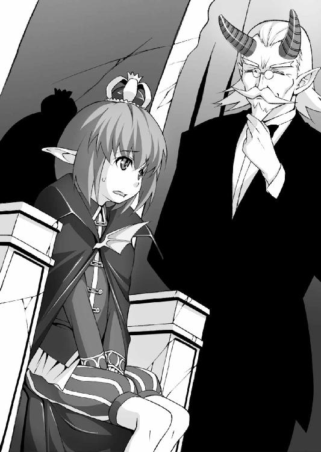
「魔王たる者の究極目標とは世界征服、世界制覇！ 下等な人間どもを駆逐し、この世を魔物の支配する暗黒の世界と化することこそが終着点と申せましょう」
「......遠大だね」
「何、心配することはございませんぞ。イアンさまはビアトリーチェさま譲りの強大な魔力を持ち、魔王ベテルギウスさまの正統後継者にあらせられます。千里の道も足下から始まるという言葉もありますれば」
「要は行き当たりばったりでやってればどうにかなると。あっ、そうだ。別に戦いたいわけじゃないけど、魔王っていえば勇者と戦うものじゃないかな」
魔王と勇者の物語なら、イアンも幼少のころから母や乳母に聞かされてきた。
もっともそれは「次期魔王イアンさま向け特別編集版」となっており、人間の勇者は本当は悪いやつで、魔王が勇者を打ち倒すことでこの世に真に平和が訪れるという、いまにして思えば相当無理のある内容だった。
「勇者......でございますか。さて私も人間界の世情にはとんと疎くなっておりまして。しかし、イアンさまが一人前の魔王となられた暁には、必ずや勇者が現れ、戦いを挑んでくることでしょう」
一人前になったイアンの姿でも思い浮かべたのだろう、ロマンスグレーの魔物執事は高々と両手を差し上げる。
轟ッッ、と冷たい城内を突風が吹き荒れ、魔力の青白い炎がポウポウポウと燃え盛る。
（あれって明るいけど、ちっとも暖かくないんだよなぁ）
「おお、この老いた目にもありありと浮かぶようでございますぞ！ 幾千幾万のおぞまし
き魔王軍を率いる坊ちゃまの勇姿。愚かにも偉大なる坊ちゃまに立ち向かおうとする人間の勇者の無様な敗北が」
都合のいい幻想を見るのは結構だが、現実とのギャップから目を逸らさないでいてくれれば、と思わずにはいられないイアンである。
「しかし、現状では手駒を揃えるどころか、下等な魔物、あるいは人間どもまでもが魔王軍を騙り、悪事を働いているとの噂もございます。次期魔王たるもの、そのような者どもを放置しておくのはいかがなものかと」
「えー、名乗りたいんなら勝手に名乗らせてあげてればいいんじゃ......いや、うんそれはよくないね」
ぎろりと睨まれイアンは首をすくめた。
（うう、これ以上、この寒々しい城で老人と漫才しててもなんにもならなさそうだ）
長いマントの裾を踏まないように注意しながら、少年魔王イアン＝ベテルギウスは玉座から腰を上げる。
「で、まずは何から始めたらいいんだろう」
「まずはそのニセ魔王軍を見つけ出し、真の魔王の力を見せつけるのがよろしいかと」
やるしかないのか、と少年はため息をつく。
元来、争いごとは好きではないのだが、仮にも魔王軍を再結成するとなれば、戦いは避けられないだろう。
「イアンさまのお力を見れば、必ずや忠誠を誓う魔物たちも出てくることでしょう。さすれば再び闇の魔王軍を作り上げ、我らの恐ろしさを忘れ去った人間どもに、恐怖を植えつけられること間違いなしでございます」
「わかった、わかったよバーゼル。ん............って、ボク一人で行くの、それ!?」
御意に、と深々と頭を下げる老執事。
慇懃ではあるが有無を言わさぬ態度にうんざりする。
「私めでは猿人ごときにも舐められましたからな。ここは一つ、魔王本人の実力を示すべきかと。それに私、長らく放置されておりました魔王城の補修工事の見積もりその他資材発注等の雑務が山積しておりますれば」
むにゃむにゃと言い訳を重ねる老執事は、あからさまにイアンに面倒を押しつける気満々である。
「じゃあ......とりあえず出かけてくるよ」
魔王軍を騙る魔物もしくは人間を見つけ出し、これを完膚なきまでに叩きのめすことで魔王の威光を世に知らしめる。
これを繰り返していけば、やがて魔王の噂を聞きつけた勇者が戦いを挑んでくるに違いない。ずいぶん迂遠な方法にしか思えないが、さりとて他にいい方法も見つからない。
やれやれと肩を落とす少年魔王の背に、魔物執事はふと声をかける。
「坊ちゃま。いまさら言うまでもございませんが、ひとたび敵と定めた相手に、無用の情けはおかけにならぬよう。あなたはお母上に似て───優しすぎる」
一転して真面目な口調となった執事に、少年はゆっくりと振り向いて唇を薄く歪め冷笑を浮かべた。気が弱そうな少年の仮面の下から、何かおぞましいものの一端が覗き、すぐに隠れる。
「お城の方は任せたよ、バーゼル」
イアンの足下から濃紫の雲が沸き起こり、それは小さな身体を重力の束縛から解き放つやつかの間の残像を残して虚空に消え失せた。
「あのお年で見事な跳躍術......確かにあのお二方の一粒種だけのことはある。このバーゼル、イアンさまがどれほどの魔王に成長なさるのか楽しみでもあり、正直恐ろしくもありますわい............」
凝縮された魔力の塊が城から離れていく気配を確かに感じながら、角の執事は亡き先代と王妃の面影を脳裏に浮かべるのだった。
第三章 怪奇！ 姫騎士と怪しの沼
真の騎士としての試練を求め、単身で武者修行の旅に出奔した姫騎士ローゼリア＝フロンケットは───早くも挫折しかけていた。
「た、旅というものがこれほど疲れるものだとは、思いもよりませんでしたわ......」
早くも路銀の半分以上を消費した挙句、粗末な宿の一室に転がり込んだローゼリアは、硬い木のベッドに突っ伏してぐったりと手足を投げ出す。
ここは出立した城から北西に進んだ小さな町。
本当は魔王のいるという北の地にまっすぐ向かいたかったのだが、取るものも取り敢えず旅に出た身ではあまりにも準備が心許ない。
（地図とにらめっこしてどうにか手近な町に辿り着けたのはいいけれど、あんなにドロボウさんが多いなんて驚きですわ）
辺境の貧しい町、しかもあまり治安のいい町とは言えない。事実、ローゼリアは町に入ってからすでに五度もスリに遭遇していた。
すれ違いざまに荷袋に伸びてくる汚れた手を、短剣の鞘でしたたかに打ちつけ、これをすべて撃退した。スリの怪しい動きに身体が自然に反応してしまうのだ。
「あ、ごめんなさい、わたくしまた」
と、手を押さえた少年に声をかけようとしたが、ことごとく逃げられてしまう。
彼らは、呑気な騎士の口調に驚いた顔を見せる。魔物ばかり相手にしているローゼリアにとって、旅人の懐を狙うスリなどという小悪党は悪党の内にも入らないのだ。
ただしローゼリアが隙を見せないのは、あくまでも盗人に対してのみ。
自分で買い物などしたことのない騎士は、ある種の人間に対してはまったくの無防備状態を強いられることとなってしまった。
ある種の人間───すなわち露天商たちである。
「なんだか荷物が重くなってしまったわねぇ。ちょっと買い込みすぎたかしら」
城を出るときはほとんど空っぽだった荷袋が異様に重い。
「女の一人旅には欠かすことのできない必需品」と聞かされ、こすからい商人に売りつけられた品々は十や二十ではきかなかった。
「やはり武者修行に化粧道具はいらなかったかしら。でもでも、傷の手当をする包帯は絹仕立ての方が肌触りがいいし、薬草も余分に持っているに越したことはないわよね。携帯食料だって、旅には必要なモノだし」
ベッドに座り直し、がさごそと荷の中を整理してみる。
（この包帯、言われていたような最高級の絹には見えませんし、薬草の塊も無駄に大きいばかりで......この白粉もなんだか変な匂いがしますわ）
誰がどう好意的に見積もってみても、ローゼリアは粗悪な品々を高値で、しかも大量に売りつけられている。
だが、気分は悪くない。
何より自分一人でここまで来た、一人で買い物ができた、一人で宿が取れたという経験の何もかもが、新鮮そのものだ。
自分の行動力、臨機応変さが誇らしくさえ思える。
「ふふっ、パセラがいまのわたくしを見たらきっと目を丸くするわ。わたくしだってやればできるんだって」
にまにまと満足げに頬を緩ませ、騎士は身を起こし、地図を広げる。
無論、目指すは北の果て、復活した魔王、いや魔王の息子？ どっちでも構わないが、恐るべき魔王と戦い、騎士の試練を全うするのだ。
「そうだわ。魔王のお城に向かう途中で魔物や、怪しげな噂を尋ね歩いていきましょう。その方がいろんな経験を積んでいけるというものね。そうねそうしましょう」
恐るべき短絡さでそう結論づけると、ローゼリアは紅の甲冑を脱いで枕元に並べる。
硬くて冷たいベッドの上に仰向けになって目を閉じる。もう夜も更け、町の喧噪は遠くに聞こえるばかりだ。
（支払ったお金のわりに夕飯も粗末だったけれど、気持ちは漲ってますわ。明日になれば疲れも取れるでしょうし、頑張らなくては）
明日まみえるかもしれない怪物、いつか討ち滅ぼすべき魔王を夢に見ながら、騎士乙女は深い眠りに落ちていった。
三日後。
愛馬シュトラウスに跨った姫騎士は、旅商人の馬車と共に街道にあった。
先の町よりも北寄りではあるが、治安はそれほど悪くない表街道なので、いきなり野盗や魔物に襲われるという危険は少ない。
ましてや商人の馬車の傍らには、甲冑を着込んだ女騎士がいる。二重の安全と言えよう。
「そろそろ街道の分岐点ですが、フロンケットさん」
「ええ、トネリさん。地図の通りで間違いありませんわね」
御者台の男に騎士は極上の笑みを向ける。
でっぷりと太った中年男で、身なりは特別立派ではないがこざっぱりとして清潔感がある。丸々とした福相にたっぷりの髭は愛嬌があって、常に笑みを絶やさない。
その男、トネリはローゼリアが最初に行きついた町で知り合った旅商人である。
こすっからい商人には珍しく、彼は真っ当な取引と誠実を愛する男であった。町のあちこちで魔王の噂を聞いて回っては、不審者扱いされているローゼを見るに見かねて、旅の護衛として雇うことを申し出てくれたのだ。
「そりゃああなた、フロンケットさん」
商人は太った腹を揺らしてなんとも呆れ果てた、というような顔をした。
「魔物がまったく出ないとは言いませんがね。あたしのような旅の商人にとっては、あくまで安全なルートで旅をするための情報です。好きこのんで魔物だ、魔王だのヨタ話に首を突っ込むマヌケはいやしませんさね」
「..................」
面と向かって「マヌケ」と言われたも同然の姫騎士は、少し傷ついた顔で恐縮する。
しかし商人の言うことももっともだ。一般人にとって大事なのは、どの街道を行けば危機を回避できるかという、具体的な情報だ。
「魔王軍を名乗る連中がいるって噂も小耳に挟みましたが、おおかた辺境の盗賊団が箔を付けるために名乗ってるってところでしょうねえ。商人になって二十年の私でさえ、モンスターに襲われたことなんてありゃしません」
「そういうものなんですか」
どうやら辺境ですら、市井の民にとって魔物は遠い存在でしかないようだ。
これまで幾多の魔物と戦いこれを滅してきた姫騎士にとって、それはまったく信じがたい現実であった。
「わたくしは......民を守る騎士として多くの魔物と戦ってきたのですが、もしかしてそれはとんでもない希有な状況だったということなのでしょうか」
「や、あなたがスリを撃退する手際を見れば、あなたの実力は疑いありませんよ。けれど、フロンケットさんのお話が本当なら、そりゃあお付きの方がよほど有能でいらしたのでしょうなぁ」
がーん、と棍棒で後頭部を強打される思いがする。
（そ、そうだったのですね！ 魔物の情報を集めて、整理して、宿泊の手配までして、薬や食料、その他何もかも調えてくれていたのは............ああ、パセラッ！ 本当にあなたはわたくしに尽くしてくれていたのですね）
その従者はというと、虎の子のへそくりをごっそりローゼリアに奪われた怒りに任せ、三日三晩不休で姫騎士を呪う暗黒秘術を続けているのだが、いまだ呪いは効力を発揮しない。そんなこととは知るよしもない姫騎士は、いまさらながら従者の忠義に感謝の念を抱くのだった。
（わたくしはずっとパセラに見守られ、庇護されていたのね。もっと経験を積んで、騎士として独り立ちしなくては！）
ありえない強靱さで己を持ち直すと、燃え盛る決意の炎を瞳に宿す。そして呆気に取られている商人の手をがっしと握る。
「トネリさん！ わたくし、あなたとの出会いを感謝いたしますわ。わたくし、また一つ騎士として一皮剥けたような気がいたしますの!!」
「..................はぁ」
そんなこんなで商人トネリの馬車と共に町を出発した姫騎士は、街道の分岐点に差し掛かろうとしていた。
「さて、私はここで右折して故郷の村に帰るのですが、よろしければ寄っていかれませんか。何もない村ですが、妻と息子が歓迎しますよ」
どこまでもお人好しの商人は、本当になんの下心もなくこの変わった女騎士を歓迎するつもりのようだ。
しかしローゼは丁重に頭を下げ、辞去を述べる。乗馬の手綱を巡らせるのを見て、トネリは心配そうにもう一度声をかけた。
「フロンケットさん！ くれぐれも言っておきますが、ここから西の湿地帯には行ってはいけませんよ!! 怪しの沼に近寄るな、必ずや苦難と不運が降りかかる......昨日もその前も、私ちゃんと説明しましたよね、ね？」
「ええ、ええ万事わかっておりますわトネリさん。あなたのご親切は一生忘れません。ではまたどこか遠い空の下で再会することもあるでしょう。そのときにはわたくし、いまよりもずっと立派な騎士に成長していることをお約束いたします」
姫騎士の満面の笑みから、とてつもないそらぞらしい空気が漂っている。
（あ、ああいう顔には見覚えがある......あれはうちのイタズラ小僧と同じ顔だ。大人が行くなって場所に行きたがり、触るなってものに触りたがり、するなということをやりたくてたまらないって顔だよ、間違いない）
「ではトネリさん、ごきげんよう！」
（だがまさか───まさか、なぁ............）
再び開きかけた口を、商人はゆっくりと閉じる。
いくらそう見えたとしても相手は一人前の大人であり、騎士である。
好きこのんで危険に飛び込んでいくほど、無鉄砲であるはずがない。
あるはずはない、のだが。
「フ、フロンケットさんっ。これを、これをお持ち下さい」
そう言ってトネリは馬車の荷台から古ぼけた緑色のガラス瓶を差し出す。
葡萄酒の瓶のようだが、中でちゃぽちゃぽと揺れる液体に色は付いていない。姫騎士は不思議そうな顔でそれを見つめる。
「それは私の妻が持たせてくれたものです。邪悪なものと出くわしたときは、聖水を振りまき清めよと......どこまで効く代物かはわかりませんが」
「そ、そんな大事なものをいただくわけには！」
とここで主婦の伝票の奪いあいのようなやり取りがしばしあったのだが、商人はなんとか美しい騎士に魔法水を渡すことができた。
そして最後にもう一度、くれぐれも沼地に行かぬよう念を押してから、ようやく馬車に鞭をくれる。
「ではお元気で、トネリさん！」
ひらひらとたおやかな手を振るローゼリアを何度も何度も振り返りながら、気のいい商人の馬車は街道の向こうに姿を消していった。
「........................」
ローゼは動かない。
笑みを浮かべたまま、トネリの去った方角をじっと見つめる。
（もう少し......トネリさんが引き返してくるかもしれませんわ）
五分、そして十分が過ぎていくうち、姫騎士の肩が小刻みに震えだす。まるで込み上げる衝動を必死に押さえ込んでいるかのように。
（まだ......もう少しだけ............我慢よ、ローゼリア）
きっかり二十分が経過した瞬間、ローゼリアは騎馬の脇腹に拍車を当てた。
「ひひぃい〜〜〜〜んんっっ!!」
「さぁっっ！ いざッッ、怪しの沼に出発ですわ〜〜ッッッ。苦難さんに不運さん、大挙しておいでなさい、熱烈歓迎いたしますわぁ〜〜〜」
高々と銀の剣を振り上げ、騎士はまっすぐに西の湿地帯に馬の歩を進めた。
顔に浮かんだ満面の笑みは「してやったり」という会心の笑みそのものであった。
「ここが......怪しの沼ですか。魔物の気配は感じられないようですが」
ローゼリアには魔法の才能はない。だが研ぎ澄まされた戦士の嗅覚、魔の気配を察する感覚はほとんど超能力の域に達している。
その感覚をもってしてもとりたてて魔物がいるようには感じられない。
（でも、人々が恐れるのも無理はありませんわ）
昼間だというのに薄暗くて澱んだ空気。風も生暖かく、重苦しい大気が四方からのしかかってくるようだ。
「確かにわざわざ足を踏み入れるメリットはないようですわ。怪しの沼に近づくと降りかかる苦難と不運というのは、単なる警告でしかなかったということかしら」
シュトラウスを湿地帯に入れなくてよかった、とローゼは思った。姫騎士の愛馬は蹄が必要以上に汚れることをとても嫌うからだ。
紅の騎士は一人馬から離れ、暗褐色の沼地に一人足を踏み入れる。
沼の中央付近まで来て歩を止めると、そのまま微動だにしない。
（魔物の気配はないわ、それは間違いない。でもそれならわざわざおどろおどろしい脅しで人を寄せつけない理由がない）
通行しにくい湿地帯、空気が澱んで息苦しい。それならそう説明すれば済むだけの話だ。さも人外の魔物が潜んでいるかのような、呪いの沼ででもあるかのような無気味な噂が立つのはなぜ？
（それに、微弱だけれど何か感じる。とても脆弱だけれど、泥の中に潜む澱のような何か。わたくしの感覚を欺くことのできる魔物がいるとしたら───？）
それが魔王なら、ありえないことではない。
しゃっ、と長剣を抜き放ち、構える。青眼の構えを取り、呼吸を極限まで潜める。
ぽちゃっ。じじじじ............ぱしゃっ。
霞に濡れた枝から垂れ落ちる滴。
迷い込んだ羽虫の羽音。
沼地に生息する泥魚か何かが、気まぐれに跳ねる音。
無数の雑音のすべてを聞き取り、聞き流し、騎士のアメジストの瞳はなんの表情も浮かべることなく、沈黙を守る。
集中力の跳ね上がったローゼの超感覚が、確かに何かを捉えていた。
それが示すものは「危険」ではない、だが正体が掴めない上、それは一つや二つではない。何百、何千、数えきれないほどの微弱な気配が自分を包み込むように存在している。
（でも......なんですの、これは？ わからない、わかりません）
いつもならパセラが牽制の魔法弾でも打ち込むところだ。
（でもいまはわたくし一人。一人でことを為さないと騎士の試練にはなりません！）
精神を集中する。沼の水がじくじくと甲脚絆の隙間から染み込んで気持ち悪いが、その不快感も心の外に閉め出す。
十分、二十分───いやもっと、それ以上。
体内時計の針がグルグルと回り続け、ローゼリアの神経は目に見えない糸となって周囲に伸びる。たとえそこに魔王が隠れ潜もうと、この感覚の網から姿を消しおおせることは不可能。
（見え─────────た───!!）
ひゅっっっっっ、ずばぁああああああんんんんっっっ！
半円形に振り抜かれた剣先は、疾風の刃となって沼の水面を空間ごと切り裂いた。
ばしゃ──────んっっ、とすさまじい飛沫が上がり、静寂な湿地帯がかつてない轟音に包まれる。どこか遠くでぎゃぎゃっという鳥の鳴き声が羽ばたきと共に上がる。
ぼとっ。
ぼどぼどぼどぼどっ、ばしゃばしゃばしゃばしゃばしゃぁああああっっっ。
剣先に跳ね上げられた飛沫に続いて、何か小さな固まりが水面に落ちる。一つ二つどころではない、ほんの指先ほどの大きさの「それ」が豪雨のように頭上から降り注ぎ、ローゼリアの全身を包み込んだ。
「これは、ヒル......？ そうか、魔物とも呼べないほど微弱な陰の気を持つ毒ヒル、この気配をずっと感じていたのね」
ヒルの雨を浴びながら、女騎士はほっと肩を落とした。
前髪を濡らすねっとりとした沼の水を払いのけ、ふと腰に下がった瓶が手に触れた。
ちゃぷんと揺れる水音に不意に喉の渇きを覚え、ローゼリアは瓶の蓋を開けてごくごくごくと一気にそれを飲み干した。冷たい液体がほの甘くて心地よい。
「ぷはぁっ、緊張で喉が渇いていたから美味しいですわ〜。ネタが割れてしまえばどうということもなかったわね。ただの毒ヒルだったなんて」
毒ヒルの群生地とは確かに物騒な場所だが、市販の毒消しで十分対応できる。
（でもこれだけ広範囲ともなると、少々面倒ね。パセラなら火焔魔法でここらを焼け野原にしてしまうでしょうけれど。そうだわ、聖水のようなものを振りまけばあっという間に一網打尽に───）
「せい───すい......？」
別れ際、あの善良な商人トネリから手渡された聖水瓶のことを突如思い出す。
それに、彼はこう言っていなかっただろうか。「邪悪なるものと出会いしときは、この聖水を振りまき清めよ」と。
手にした瓶をじっと見つめる。
空だ。
逆さに振ってもただの一滴も残っていない、気持ちのいいくらいの空っぽだ。
「..................飲んじゃった......」
びくん、とローゼリアの足先が無気味に震えた。
「クッ！ こ、このままじゃ......！ あ、んひぅっ」
ひく、ひくと内股が痙攣するたび、膝から力が抜けていく。
聖水はヒルを退治できるが、飲んでも毒消しの効果はないのだ。
（最初に沼の水に触れていた足の先から痺れてきた......って当然ね。もうふくらはぎまで感覚がなくなってきてる）
想定すらしていなかった事態に、さすがの姫騎士も少々うろたえている。
無理もない、行くなと言われた場所に不用意に踏み入って、毒ヒルの体液がたっぷり吐き出された沼のど真ん中で、バカみたいに長時間突っ立っていたのだから。
「お、お、落ち着くのよローゼリア＝フロンケット。聖水は確かになくなってしまったけれど、町で毒消しを買ってあるはず。ど、毒消しは、ちゃんと荷袋に......にぶく、ろ、あ、シュトラウスの鞍に......っ」
瞬間、貴族の美貌がハニワのようになる。
毒消しを入れた荷袋は騎馬の鞍にくくりつけたままだ。まともに立っていられないほど麻痺した足で、馬のところまで戻れるはずがない。
（あ、あの聖水を飲んじゃったりしなければこんなことには......！）
「うひゃいぃっ!?」
そのときである。
もぞっ。もぞ、もぞもぞっ。
麻痺して動かせない爪先になんとも言えない無気味な感触が走る。ぬめぬめとした指状のものが足首の辺りをもぞついている。
甲冑のわずかな隙間から、何匹ものヒルが潜り込んできているのだ。
一匹一匹は指ほどの長さと太さ、しかも軟体を活かしてどんどん奥まで潜り込んでくる。薄手のタイツの上から這い回られると、ほとんど地肌に触れられているに等しい。
「はひっ」
しゃっくりのような変な声が漏れる。ひく、ひくひくっとローゼリアは震える肩を両手で押さえつける。
「ひゃひぃいっ!? く、くすぐったいッ、きっ、気持ち悪いッッ!!」
騎士たるローゼはどれほど醜悪な怪物を前にしても動じることのない剛胆さを持ちあわせている。だが、ぶよぶよと蠢くだけの軟体動物にまとわりつかれる無気味さは、さしもの騎士といえども悲鳴を上げずにはいられない。
痛いわけでも苦しいわけでもないが、それだけに不快感は倍増だ。
「あわ、わ、ひ、膝に力が入らな......ッッ」
毒のために膝が痙攣し、バランスが崩れる。べしゃりと沼地に尻餅をついてしまった。
「あひゃんっ」
思ったよりも冷たい沼の水がじわりと染み込んでくる。
無論、沼水の中にもヒルは数えきれないほど蠢いていて、たちまち姫騎士の腰の周囲に群がってくる。もぞ、もぞもぞっ......腰部のアーマーは複雑に折り重なって強度を保っているが、隙間がないわけではない。
むしろ自由に動き回れるよう、細かい隙間がいくつも開いている構造になっているのだ。ヒルどもはその隙間から水と共に侵入してくる。
「ひゃ、くぅうっ？ は、入ってこないで......ッッ！」
足に続いて腰の周辺にも無気味なくすぐったさが広がっていく。
沼に浸かったことでヒルは騎士のふくらはぎにも這い登ってきて、引き締まったしなやかな乙女の下肢に半透明の身体がびっしりと群がってくる。
体表から分泌される粘液には麻痺毒が含まれており、爪先だけだった痺れは下半身を覆い始めていた。
（ひぃいん、くすぐったくて笑っちゃう。あ、あ、息が苦しいぃっ）
下半身を覆い尽くすにゅるにゅるぬめぬめの感触に、「あっ、あふんっ」と艶めかしい声が止まらない。腹筋が痙攣して引きつりそうになる。
毒のおかげで手足を動かせないにもかかわらず、皮膚の感覚だけは麻痺していない。いや、逆に肌感覚が敏感になっているような気がする。
「あっ、ちょ、そこは......ッッ！ わ、脇はすごく敏感になってて......あぐぅううッ、くふぅうう......ッッ!!」
ちょうど脇腹に繋がる腰の両脇が実は想像以上に過敏だということを、ローゼリアは初めて知った。
もにょもにょとヒルが身体を擦りつけるたび、腰が浮き上がりそうになるほどだ。
（な、なんだかにゅるにゅるのにょろにょろが生暖かくなって......？）
沼の水は最初こそひんやりと冷たくてヒルの温度もそれと同じだった。
だが、女体の体温で温められた軟体動物は、まるでローゼの肌をマッサージするように、動きを活発にしていたのだ。
（こ、こんな、ヒルなんかにいいように弄ばれるなんて、く、屈辱ですわっ。それなのに、なんだか......肌がほ、火照ってくる？）
原始的な生物に過ぎないヒルに、女体を嬲ってやろうなどという下世話な意志があるわけではない。ただ刺激を受けたから活動が活発になっているだけだ。
（だめよローゼリア、この試練を乗り越えるのがわたくしの使命！ け、けれどっ、ぬめぬめが、ぬめぬめが〜〜っ）
ローゼリアにとって幸いなことに、この沼ヒルは吸血性のものではない。
麻痺毒を持っているのはあくまで自衛のためであり、その食性は藻や苔、せいぜいが羽虫などを常食としている程度のおとなしい生き物だ。だが、その食性こそが無双の姫騎士に新たな試練を課そうとしていた。
彼らはローゼリアが甲冑の下に着込んでいる高価な布でできたアンダースーツをかぎつけた。絹の布地は、彼らにとってはまたと得がたい大ご馳走だったのだ。
「ふひっ!? な、何、なんですの？」
ぬめぬめのにゅるにゅるに、ちりちりとむず痒い刺激が混じり始め、騎士は頓狂な声を上げる。甲冑の内側にみっちりと充満したヒルたちの動きが明らかに変わった。
「うあぁあっっ？ くぅ、ん、ちょ、ちょっと、やめなさ......ッッ！ あっ、あ、ちっ、ちくちくしてかゆい............ッッ？」
極上の餌を見つけた原生動物たちは、全身でうち震えてその悦びを表す。
沼に生える藻や苔など、この絹糸の味に比べれば生ゴミにも等しい、と彼らに口があれば叫んでいただろう。
小さな小さな孔でできたヒルの口が一斉に開き、ローゼリアの肌を包むアンダースーツに食らいついた。
むちむちむち......ちりちりちりちりちり。
「ぐぅうっ、う、あぁあッッ！ そんなっ、い、いっぺんにされたら、わ、わたくし、うぁうううッッ、ふあぁあああッッ!?」
ヒルの吐き出した消化酵素が絹に反応し、絹糸をドロドロの溶液に変えてしまう。
彼らはそのドロドロをじっくりと時間をかけて体内に取り入れ、栄養にする。絹が溶解するときに熱が発生し、それがローゼリアの柔肌を熱く火照らせる。
（た......食べられちゃってる？ わたし、ヒルに食べられちゃってるの......？）
燃えるような熱さにローゼは勘違いしているが、肉食性ではない彼らは女体には髪の毛ほどの傷も付けていない。
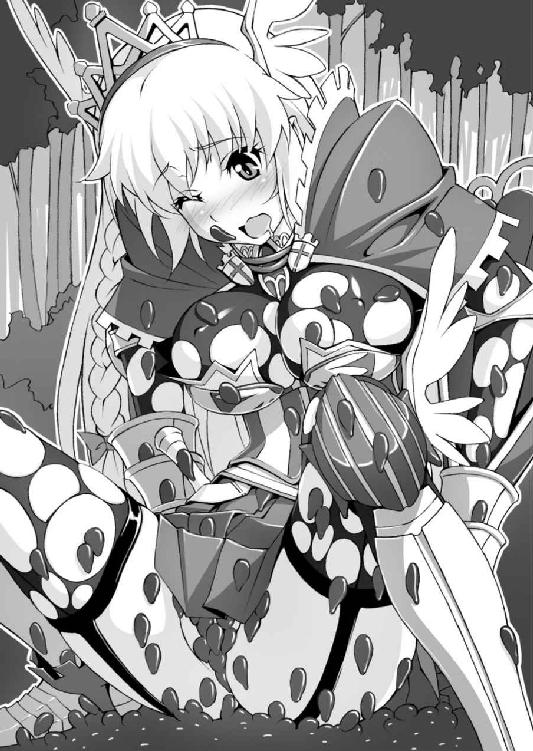
しかし、その張りのある肉体を包むアンダースーツには針で突いたような穴が。その穴は徐々に大きくなっていく。さらに、溶けた絹を吸い込むときの刺激が敏感な皮膚を襲い、一瞬たりともやむことがないのだ。
「あ......あ、あぁっ。な、なんだかわたくし、どんどん大変な格好に......っ」
小動物が胸当ての下まで到達すると、そこからもぞもぞと身体を平たく変形させる。柔らかな皮膚と甲冑の間に自らをねじ込むように、ヒルたちが次々と侵入するのを、ローゼリアは止められない。
布地を溶かすヒル酵素の熱に包まれ、いまやローゼはほぼ全裸に甲冑を着込んでいるという破廉恥極まる姿。
甲冑の隙間から乙女の大事な部分が見え隠れして、騎士というよりも、痴女にしか見えない。手足の麻痺によって、そんな姿を隠すこともできない。
（ま、魔物に襲われてるわけでもないのに、わたくしはなんて無力なのかしら。鍛え上げた剣の腕もなんの役にも立たない、この無力感......！）
こんな自分をパセラが見たらどう思うだろう。
ローゼリアの迂闊さ、無策さ、無様さに呆れ果て、冷たい目を向けるに違いない。
あるいは父が、使用人たちが、純朴な村人たちが見てしまったら。
『おおなんとはしたない姿だ！ わたしの娘ともあろうものが』
『本当に、従者としても恥ずかしくて見ていられないわローゼリア』
『騎士さまが聞いて呆れるよ、とんだ変態女だ』
『この変態！ 牝ブタ以下!! 恥を知れ、恥を！』
ぞくっっっっ。
ローゼリアの首筋がざわついた。
大勢の人々の蔑みの視線を、実際に感じたような気がしたのだ。
もちろんそれは想像でしかないのだが、どうして自分が得体の知れない恍惚感を感じているのか、ローゼにはわからない。
（み、見られてたらどうしようって、思っただけなのに......は、恥ずかしくて、けれど恥ずかしいって思えば思うほど、頭の奥が熱くなってくる）
ヒルの麻痺毒によるものや、絹が溶かされるときの熱だけの作用ではない。
人気のない沼地に一人へたり込み、下等な原生動物にたかられて衣服を貪られている哀れな騎士を、大勢の人々が取り囲み、嘲笑っている。
そんな光景がありありと浮かぶようで、そして好奇の目に晒される自分を思うだけで首のうしろの毛がぞわぞわと逆立ってしまうのだ。
（わ、わたくしいったいどうなっているの......？ ああ、そんな余計なことを考えている場合ではないわ。どうにかして麻痺を解いてこの沼を脱出しなければいけないというのに、わ、わたくしは）
このひりつくような感覚には覚えがある。
つい先日、猿人たちに捕らえられ、彼らの体液を全身に浴びせかけられたあのとき。
下級クラスのモンスターに弱敵扱いされ、玩具同然に弄ばれたときにも、こんな不思議な高揚感を覚えていた。
（き、騎士の試練......なのかしら、これも。こ、このむず痒さとくすぐったさに耐え続ければ、騎士が身につけるべき忍耐強さが得られるとか）
現状、麻痺は下半身から上半身まで広がり、手にしていた剣を取り落としてしまう。
手甲の中の布張りを求めてヒルたちが殺到し、肘まで包む上質の手袋にも半透明の軟体動物が鈴なりになって貼りつく。
ちくちく、ひりひりと布地が溶かされ、あぶれたヒルたちは別の餌場を求めてローゼリアの首筋や脇をもぞりもぞりとくすぐり這う。ヒルの体液で汚されない場所はほとんどなく、姫騎士は全身を細かく痙攣させて悶え続けた。
「ん、くふぅっ！ こ、この程度のこと、乗り越えられなくては......あうぅうッッ？」
アンダースーツに空けられた穴は次第に大きさを増していく。
溶かされ食われた跡からは乙女の白い肌が覗き、素肌と甲冑が直に接する。ぬめぬめとした体液のおかげで擦れても痛くはない、いやむしろ硬い甲冑に素肌が触れる感触がどこか新鮮でさえある。
ある意味、甲冑を剥ぎ取られるよりも恥ずかしい格好としか言いようがない。
そんな姫騎士の恥ずかしさとは裏腹に沼ヒルはせっせと食事に励み、ローゼのアンダースーツはほとんど溶かされ消化されている。
（ダメ、と、殿方に愛撫されているわけでもないのに、わたくしの女の部分がどんどん敏感になってきてますわ。あぁ、こ、こんな汚らわしいことをされて感じてしまうなんて、わたくし恥ずかしいっ）
首のうしろ、脇腹、ヒップの割れ目の上の窪んだところ、そういったところも十二分に敏感だが、中でも特に感じやすくなっている部分がいくつかある。
一つは胸、豊かな乳房の膨らみの中央につんと突き出た突起の部分。
アンダーシャツに包まれていた桃色の突起は、布地が溶かされ直に胸甲冑と擦れている。そこに糸切れの残滓を求めてヒルが身体を擦りつけてくると、ひりひりと両方の突起から痺れのような波がじんわりと広がるのだ。
生暖かく柔らかなヒルの身体と、硬質の金属の相反する感触の狭間で、乙女の乳首はかつてないほど敏感になっている。
「ん......は、あふっ。んぅう............ッッ」
ほんの少し身じろぎしただけで、容赦なくニップルは擦り上げられ、ヒルに押しつけられる。しかもその過敏な突起は左右合わせて二つもあるのだ。
右かと思えば左、左が痺れると今度は右乳首がこりりと擦れる。
（猿人たちも、わたくしの胸をしきりに弄っていたけれど。おっぱいがこんなに気持ちいいなんて......それもヒル相手に！ み、みっともない、のに、か、感じてしまうぅッッ!!）
猿人の無骨な手では、力任せに乳房を揉み上げたり、せいぜい指先に乳首をつまんでこねる程度が関の山だった。
しかし無数の軟体動物の群れは、それとは比べものにならないほど繊細で執拗な動きで姫騎士の突起を責め苛む。乳房を包み込んだヒルがぬるぬるの身体を振動させて、まるでマッサージのように揉みほぐしてくる。
ヒルは一匹一匹はまるで無力な存在だが、それゆえに強固な甲冑をものともせず、乙女騎士の柔肌に飽くことなくまとわり続ける。
「はぁ、はぁ、んっ。お、おっぱいの先っぽが、あ、熱い......っ。お、お願いだからそれ以上動かないで............あひぃい」
ヒルを払いのけようにも甲冑が邪魔になる。
いや、甲冑を外せばボロボロのアンダーは肌を隠す役に立たず、ローゼリアはたわわな乳房を露出してしまうことになる。毒ヒルの沼で一人乳を放り出したさまは、変態としか言いようがない。
（だ、第一、両腕がぜんぜん動きません。いまのわたくしは、なんという無力......）
その無抵抗な自分の姿に、またもローゼは不思議な愉悦を覚えた。
沼に足を踏み入れ、ヒルに襲われ始めてからもうどのくらい経っただろう。
もう一刻もすれば日が傾き始める、そんな状況で姫騎士ローゼリアは次なる試練を予想して緊張を走らせる。
（お、おっぱいはまだ我慢できるけれど......ああ、そろそろ下の方が............大変です）
すでに手袋や甲冑の内張、そしてアンダースーツの大半を貪り尽くした毒ヒルは、いまだ活動を止めようとしない───アンダースーツの中で特に布地の折り重なった部分に十分な餌が残っているからだ。
「あっ、あ、だめっ。そ、そこは......っ。な、中に入ってこないでぇえっ」
全身くすぐられ、いいかげん緊張で疲労の極にあるローゼリアが、毒の麻痺を振り払うように懸命に身をよじらせる。
だが抵抗は虚しく、新たな餌を見つけた沼ヒルの群れが、一斉に「その部分」に取りついて布地に消化液をぶちまけ始める。ちくちくと消化液は反応熱を放出しながらアンダースーツを溶かし始める。
「やっ、いや、いやぁああっ。そこは............ふあぁああ〜〜............」
抵抗の声から力が抜け、浮かせかけた腰が再びべちゃりと沼の水面にへたり込む。
女体にとってもっとも保護すべき大事な部分、すなわち股間をぐるりと包むアンダーショーツに忌まわしいヒルが群がってきている。
「あっ、あふっ、ん、んぅっ〜っ。あうう、そんなところっ、んぅう〜っ」
日ごろは冷たい沼に生息するヒルたちにとって、そこはまさに南国の楽園にも等しい暖かい場所。
しょっぱい汗や体液は、ヒルたちの体液の成分に近い。
そんな液体が複雑に重なった肉のひだにたっぷりと詰まっていて、そこかしこに上質の布地や糸の切れっ端がへばりついている。
熱で動きは活発になり、おまけに餌は食べ放題、ヒルにもしも声帯があるのなら、「我らついに約束の地に至れり」と歓声を上げていただろう。
だが、乙女の大事な部分に取りつかれたローゼリアはたまったものではない。
「くふぅ、んふぅう〜〜っ。く、くしゅぐった、いひいぃ」
すでに乳首へのアプローチで火照っていた女体に、新たな火が灯る。
それもニップルよりずっと神経が集中した乙女の秘密の肉壺。ひだを掻き分け、肉芽をほじるヒルの動きに、ローゼリアは為す術なく肉感的な肢体をよじる。
（こ、こんな恥ずかしいところが、き、気持ちいい......？）
布地という餌をついばみつつ、沼ヒルは姫騎士の神秘の肉孔から滲み出る透明な体液にも反応していた。
動物の体液に含まれる塩分は原生動物にとって、ご馳走なのだ。
髪と同じ金色の陰毛を掻き分け、のたうちながら、桃色の肉のカーテンに頭を突っ込み、じゅくじゅくと体液を塗りつける。
じゅく、じゅぷじゅぷ......ぐじゅる、じゅる、ちゅるっ。
より濃厚な蜜液を求め我先に、何十匹もの半透明の身体がさざ波のようにローゼリアの股間をそよぐ。
決して荒々しい刺激ではなく、それでいて余すところなく粘液、体液の一滴までも啜り上げようという動きはいつ果てるとも知れない。
「あぁ、は、はぁあ......んっ！」
びくんっっっ。
大きく痙攣し、跳ね上がった拍子に、ローゼは前につんのめった。
だが麻痺した腕を突き出すことができず、沼に突っ伏してしまう。端整な顔が半分がた水面に浸ってしまうが、体勢を立て直す余裕がない。
気がつけば犬のように四つんばいで尻を高く上げ、必死にもがくさまはまるで牡を誘う発情期の牝犬のようだ。
（か、身体が痺れて、動けない......）
沼水に潜んでいたヒルが驚いてわしゃわしゃと蠢き、それからゆっくりと姫騎士の顔の周辺に這いよじってくる。
火照って赤みを帯びた頬に、ヒルの冷たい身体がなぜか心地よい。
紅を差したむちむちの女肉にゼリー状のヒルが群がって、粘液のぬめり感が豊満な女体を扇情的に彩っている。
（わたくし......こんなみっともない格好で、こんな、お股が気持ちよくなって............でも、お股のじんじんが止まらない......ッ）
痛みや苦痛に耐える自信なら多少はある。
猿人に蔑まれたときも、これも試練なのだとむしろ誇らしかった。
だが、いまの状況はどうだろう。
全身を這い回られるくすぐったさの苦しみに慣れてくると、今度は乳首や股間を刺激されるのが気持ちよくて仕方がない。
（殿方にされているわけでもないのに、頭がふわ〜ってなっちゃう......お股を触られてこんなふうになるなんて、こ、これが女の身体なの？）
あの物知りのパセラでも、こんな不思議なことは知らないに違いない。
年上ぶってはいても、黒髪の魔法使いはフロンケットの城でローゼと姉妹同然に育ってきたのだから。
（それとも、あなたはとうに知っていたの？ ここをこんなふうにくちゅくちゅされたら、心が浮き上がってしまいそうになることを）
未開発だった若き乙女の肉体は、無数の沼ヒルにたかられ、揉まれ、吸いつかれることで急速に女としての感覚に目覚めかけていた。
それでも、人々に恐れられる怪しの沼の下等生物相手で、こんな快感に浸っていいものかどうか、肉ひだと肉芽から込み上げる快感に身を委ねきってしまうのを、どうしてもためらってしまう。
（騎士ともあろうものが、こんなことではいけないわローゼリア！ ......でも、この気持ちは何？ 騎士の試練は、こんな恥辱にまみれることだというの......？）
実際にはそのころには体内を麻痺毒が回りきって薄れ、ローゼリアの手足には徐々に自由が戻り始めていた。
美貌の姫騎士は下肢から力を抜いた。
軽く広げられた太腿のつけ根にどっと新たなヒルの群れが取りついて、くちくちうねうねと体液を塗りたくってくる。
「そ、そこはおしっこの............お、おやめなさ......あぁああッッ！」
膣穴に入りきらない群れが発見したのは、針で突いたような小さな小さな孔。
柔らかなヒルといえども侵入することのできない極小の孔からは、膣奥から滲む乙女の汁とは違う液体がじくじくと漏れ出ている。
「そ、そんなところ、いくら責められてもわたくしは屈したり......うぐぅうッ!?」
黄金の聖水を求め、浅ましい原生動物は尿道に身をぶつけ、わずかにこぼれる芳しい小便をその身に浴びて悦びのたうった。
「はぁあっ、あ、あわぅうう〜〜っ。おひっ、おしっこの穴はだめ、そこはちゅくちゅくしないでぇえ......っっ」
沼の水に顔を半分浸けたまま、ローゼは尻を高く突き上げる。
だが乙女の蜜を求めるヒルはすらりと長い下肢をよじ登り、引き締まった内股を踏破する。火照る肌からは甘い汗が分泌され、喘ぎ声と共に唇を濡らす乙女の唾液すらも彼らには甘露に等しい。
にゅくっ、ちゅく、ぬめぬめっ、ずちゅるる〜〜っ。
つつかれる尿道がぱくぱくと生き物のようにしまったりすぼんだりを繰り返す。
ひだの内側からは紅色の淫肉が見え隠れしている。軟体動物は乙女の処女膜を突き破ることなく、内側から騎士の肉を犯す。
（わたくし、中からも食べられちゃうッ！ こ、これ以上、気持ちよくなっちゃったら、いったいどうなってしまうのッッ!?）
ローゼの変調を感じ取ったのだろうか、乳房や脇腹をぬたくっていたヒルたちの動きがにわかに活発になる。
と同時に全身からドッと汗が噴き出し、頬が紅潮し、目の前がくらくらする。
懸命に下肢に力を込めるものの、別の角度からクリトリスがにゅるにゅると擦られ、「ふひぃい......」と情けない声が漏れてしまう。
（こ、これも試練？ みっともなくて恥ずかしい、そんな目に遭わされるのがやはり試練なの？ ああわからない、けど恥ずかしいのに気持ちいい？ わたくしは......）
沼の水は火照った体温ですっかり温められ、ローゼリアが身じろぎするとちゃぷちゃぷと水面が揺れる。
幼いころ、城の中庭で水遊びに興じた記憶がふと甦った。普段使われていない噴水にパセラが井戸水を引き込むと、たちまち透明で冷たい清水で満たされ、夏の日差しに水が噴き上がる。
お姉さんぶった従者に呆れられながら、幼いローゼはそろそろ出るように言われても水遊びを続け、腹を冷やして大目玉を食らったものだ。
「あ............ちょ、ちょっ......だめ、これだめ、ぇえ」
ずっと沼に浸かっていた下半身が冷えきっている。
それに加えてさっきからずっとつつかれ通しの尿道がじんじん疼いてしょうがない。
そして下腹が重いというか圧迫感が増している......これは、非常にやばい。
ぷるっ、ぷるぷる......と姫騎士の太腿が痙攣する。
（まずいわ、いけないわ。ど、どうにかして起き上がらないと......ッッ）
紅潮していた顔がさーっと青ざめ、きゅっと唇を噛みしめる。
「やっ、ちょ......だ、だめ。お、お、お腹、が」
視界の隅に沼に落ちた緑の瓶が目に入る。
商人から貰った聖水入りの瓶は、空っぽ。
ローゼリアが一気に飲み干してしまったからだ。つまり女騎士は瓶いっぱいの冷水を飲み干したあと、沼にずっと尻餅をついて足腰を冷やしていた、ということになる。
きゅうぅうっっ。
力いっぱいすぼまった尿道に頭を挟まれ、沼ヒルがびちびち跳ねる。
「あ............ひっ」
ぷる、ぷるぷる。ひくひくっ、と太腿が震える。
........................出したい。
無双の姫騎士ローゼリア嬢は、限界点に達しようとしている。
腸壁から吸収された水分は腎臓で濾過されて膀胱に溜まり、タンクは貯水量の上限ギリギリまできていた。
「お、お、お腹の下の方が、つ、突っ張って............あうぅうう」
つうっと首筋を冷や汗が伝う。火照っていた肌が冷えきって、手足の先が冷たくなっていくのがわかる。
この苦しみから逃れるのは実にたやすい。溜まったものを出せばいいだけのことだ。
「そっ、そ、そんなぁっ！ こ、こんなお外で、お、お、おしっこなんてぇえっ？」
幾多の魔物を汗一つかかずに屠ってきた姫騎士の額が、汗でぐっしょり濡れている。
（騎士たるもの、ましてや王女たるものが、や、野外で放尿だなんて！ そんな醜態を晒すわけには参りません......けど......ッッ！）
しかも遮るもののない場所で、沼に這いつくばって四つんばいの格好でお漏らしするなど、容認できるはずがない。
「んくくっ、くっ、あぁあっっ！ もぉっ、それ以上つっつかれたら、わ、わたくし......本当にやめ、なさ............ッッッ!?」
手足の麻痺はかなり回復しているが、まだ立ち上がれない。
しかも勢いを得たヒルどもは尿道と膣穴に攻め入って、ともすればうしろの穴にまで潜り込んでこようとするのだ。
「あひゃぃ、ひゃうううっ。やめれ、らめぇっ。漏れっ、漏れちゃう、うぅ、ううう〜〜〜〜っっっ」
発情した牝犬も同然の四つんばいの格好で沼に這いつくばり、ローゼリアは舌を突き出して悶えよがる。
おしっこをこらえる苦痛と、膣やクリトリスを擦られる快感、そしていっそすべてをぶちまけてしまえば楽になるという悪魔の誘惑が、清楚な姫騎士を混乱に巻き込んでいく。
「あうう、はうぅうううっ。もれっ、もれ、もっ............!!」
びしゃびしゃと無駄に水面を叩いてもがくが、まったくの徒労。
上半身をびくびく震わせると硬くしこった乳首が甲冑の内側に擦れ、ついそっちに意識が向いてしまう。
その隙をついてヒルが数匹、尿道の小さな孔にすごい勢いで激突してきた。
ぷしっ............。
（あ............っっ..................あぁあああああああああ............ッッッ！）
ちょろっ......ぷしゃぁああっっ。じょぼぼっ、じょろろろ〜〜っ。
「あ、あぁあ、あ、あふわぁあああ〜〜〜っっ！ 出ちゃう、おひっこ、出、でっ、でちゃうぅうううう〜〜〜〜!!」
ぶしゃぁああああッッ、じょばばばばぁあああ〜〜〜ッッッ。
強烈な解放感と共にもうもうと湯気を立て、騎士の足下の水面がばしゃばしゃと叩かれる。尿道は全解放され、溜まりに溜まった乙女の小水がきらめく飛沫を上げながら、ものすごい勢いで噴出する。
（わたくし、こんなお外で、こんな恥ずかしい格好でお漏らししてるっっ。恥ずかしい、情けないのに......なのに、気持ちいい......っ！）
びくっ。びくん、びく、びくんっっ。
腰がバネ仕掛けのように浮き上がり、何度も痙攣する。
半開きの唇から舌を突き出す姫騎士の顔は紅潮し、虚ろな眼差しは放尿の解放感に緩みきっている。
「あ、あぁ......あふ、ぅううう............お、おひっこ......はぁあ............んんっ！」
恍惚の表情で自分の小水の匂いを嗅ぎながら、ローゼリアは昇天した。
「ん............？」
ほんの少し、気を失っていたようだ。
ぼんやりと頭を上げて周囲を見回すと、陰気な森はすでに薄暗い。手足に力を込めると簡単に身を起こすことができた。
「麻痺が治ってる。ヒルは......どうしたのかしら」
薄闇の中に目をこらして、ローゼリアは思わず声を上げそうになった。
沼の水に何百匹というヒルがぷかぷかと浮いていたのだ。まるで聖水でもまかれて、沼中の毒ヒルが浄化されてしまったようだ。
（おかしいわね、聖水は誤ってわたくしが飲んでしまったのに）
誰かがローゼリアを助けてくれたのかと思ったが、人の気配はない。
のろのろと起き上がって剣を拾い、ついでに聖水の入っていた瓶を手にしたとき、ある可能性に気づく。
（もしかして、聖水の成分がわたくしの中を通って外に排出されちゃったとか......ていうか排出っていうか、さっきの、さっきの、アレ......？）
かぁあああ......頬が燃えるように熱くなるのがわかる。
つまり、うっかり聖水を飲み干してしまったローゼリアは、その成分が含まれた小水を沼ヒルにぶちまけることで彼らを駆除してしまったのだ。
文字通りの「聖水」で───。
「はわわわっ」
甲冑の下に着込んでいたアンダーがほとんどボロキレと化していることも忘れ、姫騎士はざぶざぶと沼を掻き分け、一目散に騎馬の方に向けて歩きだす。
「お、おしっこでッ、おしっこで？ お、お、おしっこで、ヒルをやっつけただなんて、こんなの騎士のすることじゃありませんわ〜〜〜！」
無双の姫騎士が毒ヒルに半裸に剥かれただけでもみっともないのに。
自分の「おしっこ」で毒ヒルを退治してしまったなど、どこの誰にも知られるわけにはいかない。
「こっ、この一件は一刻も早く忘れ......というかなかったことにしましょう。これは騎士の試練にはふさわしくなかった！ ということで......」
自分に言い聞かせるように何度も何度もつぶやく。
それでもローゼリアの身体には、ヒルの群れによって目覚めさせられた快楽の記憶がしっかりと刻み込まれていた。
後日、ローゼリアのあずかり知らぬところの話である。
長年「怪しの沼」として知られていた毒沼が浄化されたことに旅人が気づき、この一帯は旅の渇きを癒すオアシスになったということである。
厄介な沼ヒルのいなくなった沼の水は澄み、清らかな泉の水を一口飲んだだけで、旅の疲れなど吹っ飛んでしまうともっぱらの評判である。
高名な女騎士が起こした奇跡であるとも伝えられるが、真偽のほどは定かではない。だがこの泉はいまも「姫騎士の聖なる泉」と呼ばれ親しまれている。
なお、泉の水には適度な塩分が含まれているので、塩分補給にも最適であるとものの本に記されている。
第四章 陵辱！ 魔王軍の罠？
その少年は、一見して育ちのよさそうな物腰をしていた。
多くの商人や旅人を見てきた雑貨店店主は、店を訪れた客をごく自然にランク付けする癖が付いている。
貧乏人を相手に高級品を勧めても無意味だし、成金は格好のカモである。
客の懐具合を見抜き、確実に儲けを得るのが店主の腕の見せ所というヤツだ。
「お忙しいところ失礼いたします。少々お尋ねしたいことがあるのですが、よろしいでしょうかご店主」
（ふむ、見慣れない顔だが礼儀正しい坊ちゃんだな）
少年は粗末で丈夫だけが取り柄のマントを羽織り、目立たない装いをしていたが、立ち居振る舞いが優雅で隙がない。
顔立ちは若く、色白で品がある。
供はいないようだが、貴族の子弟がお忍びで町を散策しているように見えなくもない。この道数十年のベテラン店主にしては客を値踏みしかねていると、少年はちょっと妙なことを尋ねてきた。
「この近辺で、魔王軍......魔王に率いられたと自称する者たちの噂などを耳にしたことはありませんか？」
「魔王軍───ですかい。確かに、そんなことを名乗ってる盗賊一味がいると聞いたことはありますがね」
「そうですか。本当に彼らは魔王軍なのでしょうか」
まさか、と店主は肩をすくめる。
「しょせんゴロツキが徒党を組んでるだけの連中でさぁ。昔ならいざ知らず、近ごろは本物の魔物なんて滅多にお目にかかりませんし。それより人買いどもの方がよほどタチが悪いってもんです」
ただ......と恰幅のいい店主は少しばかり声を潜めて少年に耳打ちする。
「連中のねぐらは通称『悪魔のほこら』って呼ばれてる場所でね。夜な夜な無気味な怪物の声が聞こえるとか聞こえないとか」
「悪魔の......ほこらですか」
「まあ、そんな剣呑な場所に寄りつく物好きはいやしませんから、真偽のほどはわかりませんがね」
「悪魔のほこら」とはまたいかにもひねりのない呼び名だ。
もともと街道からも離れた岩場で、盗賊からすれば隠れやすく、官憲からすれば悪党を包囲しにくい複雑な地形をしている場所ではある。
洞穴の奥に魔物の一匹や二匹隠れ住んでいてもおかしくはない。
「よければその場所を詳しく教えていただけますか。それと、そこにあるのはセラムの薬香油ですね、一瓶いただきます」
少年は丁寧に礼を述べると、かなり値の張る香油を買い求めていった。
まじないなどにも使われる高級品で、品質は保証付きだ。子どもにしてはいい目利きだと感心し、羊皮紙もサービスに付けておく。
「ありがとうございます、では」
「なんの好奇心か知らないが、あんたみたいに育ちのよさそうな坊ちゃんは人買いの格好の餌食だ。変な興味からおかしな連中に関わるんじゃないよ」
「はい、ご親切にどうも」
もう一度ぺこりと頭を下げ、少年は雑踏に消えていった。
それから半刻も経たないうちに、店主はこれまた珍客を迎えることになる。
「いざ〜やッ、す〜すめ、正義のぉ、剣に〜かぁ〜けてぇ〜〜ッッ」
子どものように無邪気な笑みを浮かべ、調子っぱずれな自作の歌を意気揚々と歌う女騎士を振り返らない者はいなかった。
（なんなんだ、ありゃあ一体......？）
しかもその客は、先の少年とまったく同じことを尋ねてきたのだ。
「ふふふ、喉の調子も上々ですわねシュトラウス。気分も新たに情報集めに勤しむと参りましょう。ときにそこのご店主？ この近辺で、悪辣な魔王軍が出没するなどという、素敵な噂を耳にしたことはございませんか？」
立派な騎馬の首をご機嫌で撫で、甲冑の騎士は美しい金髪をなびかせる。
ふっくらと膨らんだ豊かな乳房とくびれた腰、長い下肢はむっちりと脂が乗った大人の女の色気を放っている。
そして派手な甲冑に少しも見劣りしていないのが騎士の美貌である。
美しい金の前髪の奥に覗く長い睫毛。アメジスト色の瞳は冴え冴えとしている。長年いろんな人間を見てきた店主も、これほどの美形を目にしたのは初めてだ。
（さっきの坊ちゃんもだが、これだけのべっぴんさんなら、人買いどももよだれを流すこと間違いなしだな、こりゃ）
しかもその絶世の美人騎士が、「魔王軍の根城はどこだ」と尋ねてくるのだから、尋常ではない。
いまにわかに魔王軍が巷で大流行の兆しなのだろうか。
「そりゃまあ教えなくはないですがね......まさかお嬢ちゃんがそいつらを退治しに行こうって言うんじゃないだろうね。魔王の手先だってのを話半分にしても、タチの悪い盗賊どもなんだよ」
「まあそうなんですの。魔王軍だなんて言うから、てっきり一つ目鬼だのゴブリンだのサラマンダーだの引き連れた悪逆集団だとばかり」
と、騎士は心底がっかりしたように肩を落とす。
ローゼリアはいま口にしたモンスターたちをことごとく打ち倒してきたのだが、店主がそれを信じることはないだろう。
まして、彼女が生あくびを噛み殺しながら、恐るべき魔物を瞬殺してきたなどと。
（それにしたってずいぶんと世間知らずな騎士さまだねえ。ごうつくで知られたオレさまも、心配になってくるぜ）
さすがに良心が咎め、くれぐれも「悪魔のほこら」には近づかぬよう言い含めると、女騎士は礼代わりに怪しげな魔法護符を大量に買い込んでいった。
効果のほどもわからない胡散臭い代物で、引き取ってもらうのはありがたいが言い値をほいほい払おうとする騎士に気が引けて、大まけにまけておく。
（やれやれ、こっちの騎士さまはまるでものを見る目がなさそうだ）
「解毒の護符とはありがたいです。大変助かりましたわ、ではごきげんよう」
思いがけない儲けを喜びつつ、店主はちょっぴり後ろめたさを覚えたのだった。
ウォオオオ............ンンン............。
岩場を吹きすさぶ強烈な風の中に、獣の吼える声がする。
ときに強く、ときに啜り泣くような呻き声は途切れることなく、旅人に呪いをかけているかのようだ。
聞いているだけで気分の悪くなる咆吼を、どんな醜悪な怪物が発しているのか、それを確かめようという物好きな人間はまずいない。
が、何事にも例外というものがある。
数えきれないほどの魔物を打ち倒してきた無双の騎士ローゼリアは、聞いたこともない怪物の咆吼に目を輝かせ、小躍りせんばかりだった。
「まあ......まあまあまあっ。あんな気味の悪い声を出す魔物なんてわたくしも初めてだわ。悪魔のほこら、そして魔王軍............感動ですっ」
岩肌に穿たれた洞穴のいくつかからは、人の気配を感じる。
目立たぬよう愛馬シュトラウスは村に預けてある。探索したところ、焚き火の跡や食べ物のカスがうち捨てられ、山賊と呼んだ方がふさわしそうだ。
それに、魔物のいる様子がまったく感じられない。
（いいえ、気配を抑えているのかも......それにしては遠慮なく吼えまくっているけれど。まあ、そこらは大目に見てもらわなくてはね）
誰に何を大目に見てもらうのかは不明だが、魔王軍を名乗る盗賊団は少なくとも十数人はいる様子だ。
何人か見張りを立てているようだが、ローゼリアは彼らに気づかれることもなく洞穴の規模や逃走経路などを確認することができた。
調べを進めるにしたがって、期待に膨らんでいた姫騎士の胸は萎んでいく。
「............なんか、思った以上にしょぼいですわね」
ローゼリアが主に相手をするのは辺境で民を苦しめる魔物である。
盗賊や人買いといった無法集団を取り締まるのは軍隊や兵士の仕事だが、ローゼリアも何度か盗賊団を相手にしたことがある。といってもしょせんはただの荒くれ者の集団、ローゼリアの剣やパセラの魔法の敵ではない。
「この分じゃ本当に魔王軍を騙るただの野盗かも......かといって、見て見ぬふりをするわけにもいきませんわね。あの唸り声のこともありますし」
万が一、本当に魔物がいたら、見過ごすのはあまりに勿体ない。
本当に強い魔物に遭遇し、新たな試練を体験できるかもしれないではないか。
先日のように沼ヒルの毒に当てられるというのはもうゴメンだが、今回は解毒の護符もちゃんと準備してある。
「あの気持ちよかった体験はなかったことに......いいえ、あれはただの騎士の試練！ 決して気持ちよくなんかなっていないのです！」
そう言いつつ、ヒルに群がられ、乳首や股間が燃えるように熱く火照った記憶が甦る。
しかも気持ちよさのあまりに失禁し、放尿でヒルをすべて退治してしまったなど、あまり思い出したくない記憶である。
成熟した女体が、試練とはまったく見当違いの感覚に目覚め始めていることに、無自覚なローゼリアである。
「もし──────お尋ねいたしますが」
突如、背後から声をかけられた見張りの男は肝を潰した。
ローゼリアの目に、男は見張りとしては完全に失格に思われた。手にしている酒瓶がすでに半分以上飲まれている。
「なんだてめえは!? き、騎士？ 女？」
紅の甲冑の女騎士を前に、ますますうろたえる男。酒瓶とローゼリアの顔を無為に見比べる男に姫騎士は呆れたため息をついた。
（やっぱりこれは「ハズレ」と考えた方がよろしいかしら）
男を叩きのめすのは赤子の手をひねるよりも簡単だが、それでは意味がない。騎士は剣を鞘に収めたまま男に近づく。
「あの、あなた方はアレなのですわよね、その、魔王さんの軍隊」
「そ、それがどうした」
遅まきながらじゃきんと幅広の剣を抜き放つ。しかし剣を正式に学んだ者の構えではなく、荒くれ者の我流の剣でしかない。
「魔王軍ということはあれですわよね、あなた方の中にとっても恐ろしいモンスターがいらっしゃるのですわよね？」
その問いかけと同時にタイミングよく、洞穴の奥に「ウォオオオ......ンンン」という咆吼がこだました。
間近で聞いてみるとなかなかの迫力で、ローゼリアの胸は期待に高まる。ただ、唸り声と共に強い風が奥から吹き出ているのが気になる。
（これって魔物の咆吼というよりは、風が洞穴を抜けるときの音が共鳴しているのではないかしら......？）
なんだか不安な気持ちになるが、そんな姫騎士の表情を男は勘違いしたようだ。
勝ち誇ったような顔で、これ見よがしに剣を振ってローゼを脅しにかかる。
「そ、そうだ聞いただろう、いまの声を。この奥にはもう本当におっそろしい、血に飢えたモンスターがいるんだ」
「まあ、それは僥倖ですわ」
「ひ、ひひっ、いまさらぶるっても遅いぜお嬢ちゃん。お前がどれだけ仲間を連れてきてるのか知らないが、並の軍隊じゃ歯が立たないぜ」
「ふふっ、仲間なんかわたくしには不要！ それよりモンスターがいるというのは本当ですの？ こんなところまで足を運んだ甲斐がありましたわ。さあっ、早くわたくしをその魔物のところに案内しなさいッ」
自信たっぷりのリアクションに、男は簡単にうろたえてしまう。
「う、あ、な、なんだと？」
「あのぅ......まさか魔物なんか本当はいなくて、風の共鳴音が咆吼に聞こえるからそれを利用して、噂を流していただけとか、そんながっかりなことはありませんわよね？ そうですわよね？」
無防備に男に迫る女騎士を前に、男は目を白黒させる。
そこにかぶるオォンオォンという魔物の唸り声は、いよいよもって風鳴りにしか聞こえなくて、ローゼリアの貌が不安に曇る。
「ねえどうなんですの、まさか本当にただの風？ そんなつれないこと、いまさら仰られてもわたくし困ってしまいますわよ」
「ぇえええいい、だまれだまれ！ おい野郎ども、侵入者だぞ〜〜〜!! 娘っこ一人だ、とっとと取り囲んで捕まえろ〜〜ッッ」
岩壁にくくりつけてあった縄を引っ張るとぐわらんぐわらんと鳴子が揺れて盗賊の仲間に異常事態を知らせる。
「なんだっ、どうしたぁっ」
「侵入者か、たたた大軍か？ だったら逃げるぞオレぁ」
おっとり刀で駆けつけてきた男たちは粗末な革の服に蛮刀を下げただけの、見るからに貧乏くさい田舎の山賊そのものだ。お世辞にも魔王の手先、闇の軍勢と呼べるような風采ではない。
「いえ、あなた方を相手にしたいわけではなくてですね、魔物さんのところに案内して下さればよいのですけれど」
決してバカにしているわけではないのだが、剣を抜く素振りすら見せない女騎士の態度に、野盗どもの怒りが膨れ上がる。
「女騎士だぁ〜？ ふざけんな、やっちめぇっっ」
勢い込んで襲いかかるものの、統制の取れた動きができるわけでもない。騎士のうしろにいた男がのろい動きで剣を振りかぶって、怒号と共に斬りかかる。
キィイインッッ。
居合い抜きされたローゼリアの剣を、目で追える者はいなかった。
気づいたときには弾き飛ばされた蛮刀が岩肌に突き刺さり、姫騎士の剣は一瞬で鞘に収まっている。
「ぎゃ、ひぃいいいっっ!?」
「あら、スミマセン」
事も無げに漏らした声には、緊張も何もない。
目の前で飛ぶ虫を手で追い払ったとでも言うような口調に、男たちは混乱した。
彼我の実力差があまりにもありすぎた場合、人というものはかえって不合理な行動を取ってしまいがちになる。
目の前の美貌の女騎士の強さがとてつもないものだと感じたにもかかわらず、いや、ローゼの強さを感じたからこそ彼らは一斉に襲いかかってきたのだ。
「う............わぁあああああっっっ」
「やれぇえっ、ころせっ、取り囲んで逃がすなっ」
「わぁああああああ」
キンッ、カッ、ギィインッッ。しゅっ、ズバッ、ギャリィイインッッ。
「ひぃっ」
「ぐぇえっ」
銀光が閃くたびに男たちは剣を取り落とし、したたかに打ち据えられた手を押さえる。
四方から斬りかかられたはずのローゼリアは、ほんの数センチ身をひねり、重心を移動させるだけですべての斬撃を紙一重でかわす。
「なんだ、どうなってんだよぉおおっ」
男たちはそこで何が起こっているのか何一つ理解できず、姫騎士は男たち全員の動きをすべて把握していた。
（なんだか............）
弓を持ち出した男を認めると、さっとそこに近づいて弓の弦だけを切断し、彼らの同士討ちを回避する余裕すらあったのだ。
「ひぃ、お助けぇ〜〜っっ」
「いてえよぉ、おかあちゃ〜ん！」
（わたくし、弱いものイジメをしているようで気が引けてしまうわ）
芸もなく向かってくるだけの剣をいなし、足を払ってすっ転ばせ、山賊の体力だけを奪い続ける。
気がつけば屈強な男たちは全員肩で息をしてへばり、騎士は汗一つかかず、退屈そうに彼らを眺めていた。
「ちくしょうっ、バカにしやがって......砦の全員、一人残らず招集しろ！」
その言葉に疲れきっていた盗賊たちの士気が上がる。
「あ、あ、相手はたった一人だ！ ととと取り囲んでひっつかまえろ！」
わらわらと洞穴の奥や見張りに回っていた男たちが集まって、総勢二十名弱。数を頼んで騎士の退路を断ち、じりじりと距離を詰めてくる。
技量では敵わなくとも、男たちは数と体格で勝っている。手でも足でも捕まえて引き倒せば、女騎士に勝ち目はない。
だが、そんなたわ言はしょせん人の強さの範疇での話である。
（傷を負わせないよう、無駄な動きをさせて、と......結構面倒ですわねえ。でもこんな弱い山賊さんを皆殺しにするのも気の毒ですし）
「つ、強い......なんだこいつ、強すぎる!!」
「あのう〜、戦力の出し惜しみは結構ですから、魔王軍の実力を出してはいただけないでしょうか......？」
数分とかからずに男たち全員を叩きのめした姫騎士に、山賊どもは恐怖に染まった目を向ける。
そのとき、雲突くような大男が巨大な戦斧を岩壁に叩きつける。
「か、頭ぁああっっ！」
「おうおうおうっ、オレの留守中にふざけた真似をしてくれたようじゃね」
どがん、ばきっ、がす、めしゃぁあっ。
最後の希望だった山賊の頭目は、ものの三秒で昏倒させられる。
「ええいっ、こうなったらオレさまとっておきの攻撃魔法で」
びゅおんっ、どかぁあんっ。
「神殺しの異名を持つこの呪われし剣の一撃で」
「百日咳が止まらない呪いの儀式を」
「借金で首が回らなくなってつい」
「郷里には年老いた母親が」
「あーもう面倒くさいですわ〜〜〜〜〜ッッッ！」
もう戦意高揚でもなんでもなく、ただの言い訳のオンパレードを口走る男たちを次々に打ち倒していくが、洞穴から魔物が姿を現す様子はない。
「あのぅ〜、まだお続けになりますのでしょうか？」
その言葉に、昏倒していた大男がぎろりと鋭く眼光を光らせる。
「クソォッ、こ、こうなったら......おい、野郎どもッッ」
頭目の気迫に剣を構える。だが次の瞬間、ローゼリアの目が驚きに丸くなる。
「参りやした姉御ッッ！ お願いだ、オレたちの頭になってくれ!!」
「............ええー!?」
全力で土下座する盗賊たちを前に、無敵の姫騎士は途方に暮れるのだった。
「いやぁ、お強いッ！ 姉御みたいにバカ強い騎士にお目にかかったのは初めてだよ、おれたち！」
「おうよ、オレらも屈強無敵の盗賊団で知られてるからな。けど、ローゼリアの姉御は別格だよ、別格」
「いえ、わたくしなどほんの若輩者で、修行の身ですわ。ところであの、やっぱりあの洞穴の唸り声というのは......」
「こうやって間近に聞けば、ただの風鳴りだろう？」
盗賊の杯を受けながら、紅の女騎士はがっくりとうなだれる。
「ウォオオン、オォオン」と呻き続ける洞穴を、恨めしそうにちらりと見やる。
「これがちょいと離れて聞けば、化け物の声になるってんだから、隠れ家にはぴったりってわけさ。考えたもんだろ」
「はぁ............そうですわね」
たった一人の女騎士に一人残らず倒された盗賊団の面々は、彼らに手傷一つ負わせることなく勝利した騎士の技量を手放しで褒め讃えた。
その上、自分たちの頭目になってくれととんでもないことを言い出したのだ。
清々しいほど自分たちの敗北を認めた彼らの申し出に戸惑いつつ、ローゼリアはなし崩しに彼らの宴会に参加していた。
日はとっぷりと暮れ、荒くれ男たちは焚き火を起こして酒瓶を開け、にぎやかに陽気に歌い踊り始める。
（......よく考えれば、このお酒や食べ物も略奪された品々なのですが......）
丸ごとの羊肉を串に焼いて豪快に炙り、脂の滴ったところから短剣でそぎ落として食らいつく。なんとも野卑な夕餉は騎士の目に新鮮に映る。
（なんだかピクニックみたいで楽しいですわ）
木の杯に注がれる葡萄酒も渋が残った野性的な味だが、この豪快な山賊の食事には似つかわしい。
そのうちに酒の回った男が半裸姿になってでたらめに踊り始めると、宴はいっそう盛り上がりを見せ、ローゼもなんだか楽しくなってくる。
「じゃあ、どうして魔王軍だなんて名乗ってらしたのですか」
「そりゃあ、魔物がいるよりいない、魔王の軍じゃないより、そうだっていう方が押し出しがきくからさね」
「ああ、ほっとけば勝手に『悪魔のほこら』だなんだと怖がってくれる。どんな商売でも、いちばん大事なのはハッタリだからな、はったり！ 騙されるヤツがマヌケだってことだよ、がっははは」
「........................」
なんだか以前にもマヌケ呼ばわりされたような気がする。
ローゼはほんのちょっぴり悲しくなった。
（はぁ、なかなか本物の魔王軍には出会えないものですわねえ......）
盗賊たちの宴は夜半まで続き、酒よりも雰囲気に酔ってしまったローゼリアは、少し夜風に当たろうと人気のない方に向かった。
すると、数名のひそひそ話が聞こえる。年を召している一人が盗賊団と思しき男たちを声を潜めて叱咤しているようだ。
「馬鹿者っ。それでお前ら、その騎士を宴に招いて酒盛りをしているというのか!? なんとも呆れた......その騎士も騎士だが、お前らもお前らだ」
「そうは言うがな、人買いの旦那。本当にべらぼうに強い姉御なんだぜ。ありゃあただもんじゃねえって」
「やかましい、依頼しておいた奴隷の頭数も揃えずに何を呑気な......いや待て、姉御だと？ その騎士は女なのか」
どうやら老いた男は人買いのようだ。
戦場で親を失った子どもや攫われた女を奴隷として売買する、忌むべき輩。
盗賊の行いにも感心はしないが、人買いとあれば騎士としてこれを看過するわけにはいかない。
（とはいえ、この程度の盗賊さんたちに依頼するようでは、たいした規模の人買いさんでもなさそうですわ。どうせなら人買いさんも一網打尽にして、民兵に引き渡した方が、正義の騎士っぽくていいかも）
洞穴の魔物がいないとわかってがっかりした分、埋めあわせをしないと騎士としての気が収まらない。
そう考えた姫騎士は気配を消し、彼らの悪だくみに耳を傾ける。
「ほう、それほどの美形の女騎士なら、さぞや高値で売れるだろう」
くつくつと喉の奥で笑う人買いを見て、盗賊の男たちは腹を抱えて笑い転げる。
「ははは、そりゃあ無理だ旦那。ここにもし本物の火竜が棲みついていても、苦もなく片手で退治しちまうだろうさ」
「まったくもって同感だ。悪いことは言わねえ、あんなべらぼうな姐さんに手を出そうなんて馬鹿なことは、金輪際考えないこったな」
「奴隷はまたそのうち揃えといてやるよ、さあ行った行った」
盗賊たちは人買いをあしらうと、再び酒宴に戻っていった。
人買いは呆れたように肩をすくめ、懐から酒瓶を取り出してえっひひと気味悪い笑みを漏らす。きらり、とローゼリアは目を光らせる。
「どんなに勇猛な騎士だろうが、この薬を飲ませれば赤子も同然。この毒酒は、解毒の魔法護符でもなければ防げぬ特別製。その女騎士を捕らえてしまえばヤツらの気も変わるだろう、くくくく......」
と、まるで誰かに説明するように酒瓶を眺めてから、人買いの男は盗賊たちのあとを追っていく。
その後ろ姿を見送りながら、ローゼはにんまりと会心の笑みを浮かべた。
ローゼリアの懐には、雑貨店で格安で買い求めた解毒の魔法護符があった。
「旦那、肉が焼けたぜ、酒もたっぷりある。どんどんやってくんな」
何食わぬ顔で宴の席に戻った騎士は、盗賊一味に歓待されている人買いの様子をそっと観察する。
盗賊の男たちはすっかりでき上がっていて、宴に酔いしれている。人買いは懐に毒の酒を忍ばせたまま、ちらちらローゼリアの方を窺っている。
（うふふふ、あんなにおどおどして）
羽目を外して大声で歌い踊りまくる盗賊を掻き分けるように騎士に近づいてきて、ものすごくわざとらしい仕草で懐から酒の瓶を取り出す。
「き、騎士さまだそうで、ど、どうぞお見知りおきを。ワシは旅の商人でして、こやつらとも懇意にしておりましてな、はっハッは」
「まあ、そうですの」
商人は商人でも商うのは生きた人間で、盗賊団とも通じている悪党だが。
それにしても人買いはこういう状況に慣れていないのか、腹芸のできないローゼリアの目からしてもめちゃくちゃ怪しい。
と、へべれけになっている盗賊の一人が「おう、そりゃ酒かい」と人買いの手から毒酒瓶を取り上げようとする。
「こりゃ、何をする！」
「ひっく、いいじゃねえかケチくさい......姉御！ わっしの酌で申し訳ねえでがす、どうぞ飲んでやっておくんなせえ」
姫騎士は微苦笑しながらそれを受け、杯に半分ほどを一気に飲む。
きらーんと目を輝かせ、してやったりと人買いがほくそ笑む。
（ふふふ......いまのわたくしに毒など通用しませんのに。少しからかってさしあげようかしら）
相手の策を見破っている余裕から、ついイタズラ心が疼く。
従者パセラが作った護符を使ったことがあるが、その効果たるや驚くもの。護符を身につけている限り、ローゼの体内に入った毒はすべて無効化してしまうのだ。
喉を細く灼く酒精を味わってから、ローゼリアはさっと盗賊の手から酒瓶を奪い取る。すかさず人買いに杯を持たせ、にんまりと微笑む。
「さ、あなたもご一献」
「えっ!? いやわしは、あの、え、ちょっ」
毒酒を用意したわりに、人買いは自分用の解毒符は用意していなかったらしい。
「おおっ、うらやましいぜ旦那！ 姉御に酌してもらえるなんて」
「い、いいやいやいや、わしはちょっと都合が、その」
「まあ、なんていけずなお方。あなたたち、やぁ〜っておしまい！」
「おおうっ、任せておくんなせえっ」
すっかり女盗賊の気分で命じると、男たちが飛びかかって手足を押さえつけてしまう。目を白黒させる人買いの口に、ローゼがずぼりと酒瓶を突っ込んだ。
「んぐ、ぐむむぅう〜〜っ」
「そ〜れ一気ッ、イッキ！ いっき、一気ッッ」
とくとくとくと勢いよく流れ込む毒酒を、人買いはすべて飲み干してしまう。
「わっははは、こりゃあ愉快だ。今夜は思いきり飲み明かそうぜ！」
「おうよ、オレたちと姉御のすんばらしい出会いを祝して乾杯だ！ 樽を開けろ、肉を焼け、もっと火を燃やせぇ!!」
事情も知らずはしゃぐ山賊たちに、人買いがぷるぷると髭を震わせ始める。
「お、お前らは......いいかげんに......わ、わしがこいつに毒を......」
「あぁん？ なんだよ旦那、もう悪酔いしたか」
「それとも姉御の酌に酔っちまったってか？ ぎゃはははは」
一気に大量の毒酒を飲み干した人買いの目がくるりと反転する。
「あらあら、しょうのないこと」
ゆっくりと仰向けに倒れていく人買いを助け起こそうとした騎士の腰が、いきなりすとんと落ちる。
「あ、れっ？ な、な、何か、ヘンですわ、ね......？」
手の先が痺れる。下半身に力が入らない。これはまるで、沼ヒルの毒にやられたときとそっくりの症状ではないか。
「ど、どうして......ちゃんと解毒の護符も持っているのに」
「あれっ、それどうしたんだい姉御」
盗賊の一人がよれよれの黄色い眼で、ローゼの手にした薄汚れた護符に目をやり、ぽんと手を打った。
「ありゃあ、そいつぁ懐かしい代物じゃねえか。オレがむかぁし闇で売りさばいてた、にせもんの護符だぁよお」
「えっ............に、にせものぉおおおお〜〜〜〜っっ!?」
ショックと毒の効果でくらりと目眩がする。
酒瓶のほとんどを飲まされた人買いはというと、大の字にぶっ倒れて完全に気を失ってしまった。
ローゼリアが横座りにへたり込むのを見て、盗賊たちも不審そうな貌になる。
「はぁ......はぁ、あ............うぅんっ」
「ど、どうしました、姉御......？」
「............あ、あねご......」
まるでしなを作るように座り込んだ姫騎士の目元が赤い。
毒の効果で力が入らないばかりか、酒精が身体に回って熱くてたまらない。
潤んだ眼差しはローゼリアの美貌をさらに神秘的に見せ、男たちは同じ人間とは思えない姫騎士の美しさにしばし息を呑む。
「おい、さっき人買いの旦那が毒がどうとか言ってやしなかったか」
「な、なんだかご気分がお悪そうですぜ、姉御。お背中でもさすりましょうか」
ひひひといやらしく微笑む盗賊に、オレもオレもと男の本能を刺激された男たちがじりじりと騎士を取り囲む。
（さ、さっきまでの和やかな盗賊さんとは雰囲気が違って......これは、もしかして試練の予感？）
間違いなく大ピンチにして乙女の純潔の危機にもかかわらず、わくわくしてしまう気持ちが抑えられない。
「そ、それでこそ魔王軍を騙っていた悪党さんですわ......っ。たとえ毒に冒されていても、悪党には負けませんわ！」
「へへっ、足下がふらついてるぜ、姉御。オレたちゃ相手が強いと下手に出るが、弱った相手にはいくらでも強気になれるんだぜ」
「そうさ、威張れたことじゃねえけどな！」
よろよろと立ち上がった騎士を取り囲んで、盗賊たちが胸を張る。
（くっ、こうして立っただけでも相当つらいですわ。腕に力が入らない......）
剣が重くて仕方ないが、なんとか振りかぶって盗賊の一人に斬りかかった。
「おっと、なんだそのへっぴり腰は......っ！」
「きゃんっ」
腰の短剣を抜いた男の一振りで、ローゼリアは長剣を取り落とす。
よろけて倒れそうになる細身の身体を、別の男が抱き留める。だがそれは騎士の身を案じてのことではない。
どさくさで金髪に顔を埋め、女体の甘い香りをふんふんと吸い込む男に、非難の声が浴びせられる。
「てめえ、抜け駆けはずるいぞ、オレにも姐さんの匂いを嗅がせろっ」
「くっ、は、放しなさいッ」
短剣を抜くが、別の男に手首を掴まれ、そのまま抱きしめられる。細く白い喉に唇をぶちゅうと押しつけ、滑らかな肌触りを舌で味わう。
「汗の味まで最高だぜ、姉御......たまらねえや」
「や、やめなさい、け、汚らわしい......正々堂々、剣で、戦いなさい」
力の入らない身体で懸命にもがくとバランスを崩し、地面に倒れてしまう。
その手から短剣まで取り上げられ、まったくの丸腰になった女体に男たちがわらわらと群がってくる。
腕の内側や太腿にゴツゴツした男の手が吸いついて撫で回す。
（こっ、この人たち猿人さんと行動パターンが変わらないのですけれど......男の方というのはみんなこんなものなの!?）
姫騎士の脳裏に、白濁汁をぶっ放していた猿人が思い出される。この盗賊たちの股間のものも、あんなふうになっているのだろうか。
それを想像すると、なぜだかローゼの胸の奥が熱くなる。
（でも、相手は魔物と違って人間......お、犯されたら盗賊の子どもを孕んでしまうかも！ そ、それはさすがにまずいですわ！）
いまさらながら、彼らがローゼリアを危険な敵ではなく、美しい女として見ていることに気づく。
男と女が肌を重ねるということは、知識としては知っている。
けれどそんなことは自分には無縁だと思っていたし興味もなかった。
（好きでもない男に寄ってたかって犯されるなんて、騎士として、いいえ女としてこれほどの恥辱はありません！ なんとかそれだけは避けないと......大勢に、よ、寄ってたかってだなんて......）
なんとかこの場を逃れる方策を考えつつ、姫騎士は「大勢に寄ってたかって」というところに反応し、なぜかお腹の奥が「きゅん」と疼いてしまう。
これといって名案も浮かばず痺れる手足でもがいていると、盗賊たちの興奮はどんどん高まっていく。そして男の一人がたまりかねて叫ぶ。
「もう我慢できねえ、もっとひん剥いちまおうぜ！」
「やっ......やめなさい！ こんなのはいけないこと......あ、あぁっ」
ローゼはもがこうとしたが多勢に無勢、手足にも力が入らない。騎士の身を守る紅の甲冑の留め具に盗賊の手が伸びていく。
一刻も早く柔肌を拝みたいという焦りからか、手甲や脚絆がでたらめに外され、乳房を包む胸当てがぐいと上にずらされると、ぷるんと白い肉球がこぼれ出る。
「やっ、ちょっ、そんな、みんなでじろじろ見ないでッッ」
甲冑の下に着込むアンダースーツは、沼ヒルに食われて穴だらけだ。町でもいい品物が見つからなかったので、ぼろぼろのインナーをそのまま着ている。
造化の神が念入りにデザインした完璧な女体が、ボロボロの下着をまとっている姿は、ある種の特殊な性癖持ちにはたまらない。
「うっぉおおおお〜〜〜！ なっ、なんだかわかんねえがむやみに興奮してきやがる!! あっ、姉御ぉおお〜〜ッ」
「きゃはぁあんっ!?」
かろうじて腰にまとわりついていたショーツが引きちぎられる。
抱きついてきた男がたわわな乳房にぐりぐりと顔を押しつけてくる。
絹布越しに乳首の突起を探り当てると、唇を被せてちゅうちゅう吸ってくる。生暖かい舌はまるでヒルのようで、ぞくりと首筋が痺れるのを感じた。
「はぁっ、はぁ、なんていい匂いなんだ。甘い乳の匂いだぜ......」
「お、オレはそれなら、姉御のすべすべの腕を」
「おほうっ、こんなむちむちした尻を揉んだのは初めてだ！」
力任せに尻や太腿を揉みくちゃにされるばかりか、ふくらはぎに吸いついてくるマニアックな輩までいる。
陶磁器のように滑らかな二の腕に頬ずりをしてうっとりしている男までいて、まるで愛玩人形さながらに男たちの愛撫に身を任せるしかない。
（あ、足先は蒸れているかもしれないのに、なんて恥知らずな振る舞いを......うぅっ、気持ち悪いッッ）
いつの間にか両脚共に掴まれ、左右の爪先に男二人が取りついている。
美人騎士の足が目当てだったのか、夢中で靴下の湿った部分に鼻を押しつけてくんくんと匂いを嗅いでいる。
いくら美女でも脚絆で蒸し込んだ足先は汗臭いだろうに、ほとんどねぶり回さんばかりの勢いで鼻を鳴らして足裏に頬ずりをしてくる。ただ陵辱されるより、精神的にかなり恥ずかしい。
「おうっ、おう、姉御の汗ッ、むんむんして、しょっぱくてうめぇええ！」
「くひぃっ！ こ、こんな恥ずかしいことをされるのが試練だというの!? こんな辱めに耐えなければいけないなんて......ッ！」
「試練だぁ？ へっへ、試練ってのはオレたち盗賊にさんざんな目に遭わされるってことかい、こんなふうにッ」
「あぁんっ、そんなとこ噛んじゃだめぇっ」
乳房に顔を擦りつけていた男が、下着の上からこりっと乳首に歯を立てる。
軽い痛みと、電気が走るような快感が走り抜け、ローゼリアは身を震わせた。
（ヒルににゅるにゅるされたときみたい......おっぱいの先っぽが、な、なんでこんなに気持ちがいいの？）
騎士が欲しているのは快感ではない。乗り越えるべき苦難と辛苦だというのに、乳房の突起を弄られただけで容赦なく快感が襲ってくる。
「こんなにでっけえ乳なのに、いい感度してるじゃねえか。こんな試練でよければ、いくらでもしてやるぜ！」
「おう、オレにも手伝わせろっっ」
重量感のある白い肉球に無数の視線が突き刺さり、男たちが左右のニップルに食らいついた。
右の男は乳輪ごと吸い上げるように頬ばり、舌先で転がしてくる。
左の男はすぼめた唇を突起に被せるようにして、痛みが走るほど強く吸い上げる。
左右に異なった刺激を受け、二つの突起はたちまち充血して硬くなっていき、さらに男の獣欲を煽り立てる。
「ああッ、んん〜〜っ！ こ、こんなことでは参りませんッ、わ......ッッ！」
だが、いっそう敏感になったニップルから、快感がさざ波のように広がって女騎士の肌を火照らせる。
じんわりと肌に滲む汗をいくつもの舌がねぶり取り、唾液と共に飲み込んでじっくりと女体の味を堪能する。
「ひひ、いつまで強がっていられるかな？ もう乳首とかこんなにつんつんしこってきてるぜ。気持ちいいんじゃねえのか」
「き、気持ちよくなど......騎士たるもの、悪党に屈しはしません。やりたければいくらでもおやりなさいっ」
「おうよ、お言葉に甘えて吸いまくってやるぜッ」
ちゅうちゅう、ちゅばちゅば、こりこりっ、れろんっ。
乳首をねぶる男たちの舌使いに、ニップルはどんどん感度を高めていく。
毒酒のせいで、大柄な男の身体を押しのけることもできない。
太腿をもじもじさせ、喘ぎ声を漏らしながら薄目を開けると、男たちのズボンの前がモッコリと膨らんでいるのが見えた。
（あ、あれは......やっぱり猿人と同じ、ちんぽが大きくなってるんだわ）
すると男たちは騎士の視線に気づいたのか、これ見よがしに腰を突き出してみせる。
勃起ちんぽを隠したそこは、テントが張ったようになっていて、ときおりびくびくと震えるのが生々しい。
「おいおい、こいつここが気になってしょうがないみたいだぜ。ちんぽでどんな試練を受けたいってんだい姉御？」
「言ってみなよ、騎士さまはこれまでどんな試練とやらを経験したんだ」
「そ、それは......ま、魔物の臭くてどろどろのちんぽ汁を、か、かけられました」
思いもかけない大胆な言葉に、盗賊たちは色めき立つ。
「魔物の汁だって!? いや、この姉御ならそんな経験しててもおかしくねえぜ。し、汁をかけられただけか？」
「節くれ立ってぶっといちんぽをくわえさせられて、直接お口に出されて飲まされたり、いろいろ屈辱的なことをされましたわッ」
「うおぉおお、なんてうらやましい魔物どもだぁ〜〜っっ。くそおっ、オレもう我慢できねえええ」
盗賊の一人がたまりかねたようにズボンを引き下ろす。
ぶるるんっと飛び出た陰茎は隆々とそびえ立っていて、いまにもヘソに届きそうだ。
ローゼリアの視線が、黒光りする先端部に集中する。
「ど、どうだい、オレのちんぽは。魔物のちんぽほどじゃないかもしれないが、なかなか使い込んだ代物だぜ」
「な、なんて黒くて大きくて、け、汚らわしい......おぞましいですわッ」
自慢するだけあって、盗賊のイチモツは色素が沈着していて赤黒く、いかにも何人もの女を泣かせてきたような凶悪なモノだ。
特にカリの部分が狂暴にめくれ上がっていて、カスがたっぷりこびりついていそうな亀頭からは、すえたような匂いが漂ってくる。
（こ、このままでは本当にちんぽで犯されてしまう！ そんなのは絶対にダメ......!! で、でも、それくらい惨めな目に遭わされる屈辱は、騎士になるための試練になったりするのではないかしら......？）
期待と不安の入り混じった眼差しで見上げる騎士の目の前で、男たちは勃起ペニスを露出させてローゼリアに見せつける。
「オレたちだけ見せるのは不公平だぜ。姉御の股ぐらに付いてるモノも見せてもらわなくっちゃなぁ。そうだろ、みんな！」
「おお、その通りだ！ 姉御みたいなべっぴんの股に付いてるモノは、そこらの女にはないすげえま○こに違いねえ」
「オレはずっと女日照りだから、女のアソコに何があるのかわからねえ！ ぜひ後学のために見てえもんだ」
乳房に食らいついていた男たちも身を起こし、拳を振り上げながら「見・せ・ろ！ 見・せ・ろ！」コールが始まった。
ローゼリアが単に拐かしてきた村娘か、あるいは並の貴族女だったら彼らは手っ取り早く捕虜を押し倒し、輪姦していただろう。
だが女騎士の奇跡のような強さに加えて信じがたいほどの美貌が、彼らを異様な状態にさせていた。
「見・せ・ろ！ 見・せ・ろ！ ま・○・こ！ ま・○・こ！」
良心のかけらも持たない荒くれ男どもが、ローゼの股間を見るというだけの行為に鼻血を噴き出さんばかりに興奮している。
ほとんど初めて春画を見た思春期の少年のノリだ。
「い、いけません！ そのような破廉恥な......きゃあッ!?」
ショーツを剥ぎ取られた、と思った瞬間、両足首をぐいっと持ち上げられる。
いわゆる「まんぐり返し」の格好にローゼリアは仰天した。
（き、騎士ともあろうものが、こんなみっともない格好で、こんな大勢にお股を覗き込まれるなんて......！ それに、なんてぎらついた目！）
「おぉお............おぉ、おおお......」
「なんてこった、なんてこった......こ、こんなに綺麗なおま○こを見るのは初めてだ」
「この盗賊団に入っててよかった！ 本当によかったんだぜぇええええ」
「んんっ、ちっとも、は、恥ずかし、くなんか......んふぅっ！」
髪と同じ金髪のアンダーヘアに縁取られた乙女の密壺は、悪党の目に感動の涙さえ催させていた。
複雑に重なりあった肉ひだはぬらりと光り、淫豆が包皮の下からわずかに顔を覗かせる。 秘奥は桃色よりも色が濃い紅色で、尿道と膣口は見えない。
男たちは両側から女体を押さえつけ、別の盗賊が可憐な花びらに手を伸ばす。
「くっ、さ、触られるくらい、どうということはありません」
「そうかい、じゃあもっとよく見せてもらおうか」
無骨な指が花弁の両側を軽く押さえつけ、「ぐぐ......」と肉ひだを左右に押し広げた。
「あうぅうっ、そんなっ、ひ、広げられたら......！」
「うおぉおおおおおおおおおおおおおおおおおお!!!」
「オレ、今日死んでも悔いはねえよぉおおおおおお!!」
（お、奥まで覗き込まれてる。恥ずかしくて情けなくて、やはり、これこそが試練なのでしょうか？）
ぐに、ぐに、ぐに、と男の指が大陰唇周辺の肉をこね回し、花弁の隅々までも野卑な男どもの淫らな視線にさらけ出させる。
（こ、この恥辱に耐えることこそまことの試練！ 我慢よローゼリア!! ううう、あまりの怒りと屈辱感で身体が熱く燃えるようですッッ）
ま○こ肉を弄くり回している男がぐぐっと首を伸ばしてくるのを見て、ローゼリアは仰天した。
男は髭に縁取られた唇をタコのように突き出し、明らかに騎士のその部分に吸いつこうとして、背後の仲間に後頭部をはたかれた。
「てめえ！ 何自分だけ姉御のま○こに吸いつこうとしてやがる、この抜け駆けちんぼこ野郎！」
「こんな綺麗なま○こを前にして、こいつを味わわねえ理屈があるか！ そんな腑抜けちんぽは切り取って男廃業だ！」
「あっ、はわぁああ〜〜〜ッッ？」
ちゅばっ。
じょりっと髭と陰毛が擦れ、軟らかな肉が花弁に押し当てられた。
その感触は限りなく沼ヒルに近かったが、次の瞬間ローゼの目が驚きに丸くなる。ちゅっ、くちゅ、じゅるる〜〜っと強く吸引されたのだ。
「んっ、じゅるっ、あ、甘ぇええええ！」
「ぐぅうっ!? す、吸っているの？ なんてことを......ッッ！」
ヒルが身体を擦りつけるだけであんなに気持ちいいというのに、頬をすぼめて肉ひだを吸い上げる吸引愛撫に、騎士は為す術もなく身悶える。
ただでさえ毒で力の入らない下半身から力が抜けていく。
「おおぅ、ま○この奥からどんどん蜜が溢れてきやがる......じゅるるっ、ずぞぞっ」
「いいかげんにしろ、コノヤロウッッ、つ、次はオレ、オレだ！」
「うぁあっ、やめっ、やめなさいあなたたちッッ」
夢中で蜜を啜る仲間を張り飛ばし、別の盗賊が乙女肉に吸いつく。
じゅるるっ、ちゅば、ちゅぱっ。鼻面をねじ込むように押しつけ、伸ばした舌先で肉ひだをえぐるようにこそぎ、透明の乙女の蜜液をねぶり取っては飲み下す。
が、またすぐ別の男が彼の首根っこを掴んでひっぺがし、膣穴に唇を被せ、力いっぱい吸引して奥の蜜を吸い上げてくる。
（なんで、こんなことがこんなに気持ちいいの？ ていうか、気持ちよかったら試練になりませんわ！ あぁ、またそんなに強く吸いついてきて......）
そこを触られると気持ちいい、というのはヒルに襲われたときに学んでいた。
だが男たちの舌は明らかな意志を持ってローゼリアのそこを嬲っている。
ただ蜜を貪るだけではなく尖らせた舌先でクリトリスを包んだ包皮を剥き、つんつんと突いてくる。
「うぐぅッ！ な、何これ......わたくし、なんでこんな......んあぁっ!?」
「おや、ずいぶん気持ちよさそうだな騎士さま？ 道理でさっきから、ま○こがダラダラよだれを垂れ流してるわけだぜ」
「つ、次はオレだ、オレの舌技を食らわせてやるぜ」
「あふぅう......ッッ！」
神経の密集したクリトリスもだが、膣を吸い上げられるのが特に気持ちいい。
内臓が吸い出されるような錯覚と共に腰にずしんと衝撃が伝わり、両脚が勝手に痙攣してしまう。
二十名弱もいる盗賊集団たちが、交代でローゼリアの股間に吸いついては、蜜を啜り上げるという淫らな宴会が始まってしまう。
「おぉおっ、姉御の蜜すげぇえ、ちんぽが爆発しそうだ！」
「ひっひひ、もうま○こも蜜とよだれでべっちょべちょだぜ」
（はぁ、はぁ......アソコが痺れすぎて感覚がなくなってきました。けれど、この恥辱に屈することなく乗り越えてなくては）
このままだと、盗賊たち二十名あまりに輪姦されてしまうかもしれない。
そう、騎士は身を汚されるだけでなく、耐えがたき痛みや苦労を知らねばならない。ローゼリアはいままさに試練に晒される自分に酔いしれる。
「の、望むところですわ。あなた方に何をされても、わたくしは負けません。好きなだけわたくしをいたぶり、辱めなさい！」
凛々しい姫騎士の宣言に、乙女の蜜に酔いしれていた男たちは虚をつかれたような顔になり、そのあとにんまりと残忍な笑みを浮かべた。
「なんだ、今度はとんでもないことを言い出したぜ、この姉御は」
「騎士は、いかなる屈辱にもめげぬもの。苦難を乗り越えることこそわたくしの使命なのです。どうしました、まさか怖じ気づいたのですか？」
「そ、そういうことなら仕方がねえ！ 極上のま○こ汁をご馳走してもらったオレたちが、姉御を成長させてやるぜぇええっっ」
「きゃんっ？」
まんぐり返しの体勢から一転、くるりと騎士の肢体がひっくり返される。
腰骨をぐいっと持ち上げられ、取らされたのは四つんばいの獣の姿勢。白い桃のような姫騎士のヒップに、思いきり平手が叩きつけられた。
ぴしゃぁああんっっ。
「きゃぁううんっ？」
「そらっ、そらそら、おまけにもうイッパツだ！」
「ははは、真っ白な尻に紅葉が咲いたぜ」
甲高い音が立つたびに尻肉がふるふる震え、真っ赤な手形が残る。
音は派手だが男にはスパンキングの才能があるのか、痛みはそれほどでもない。
だが大勢の男たちに見られながら尻叩きをされるという恥辱に、ローゼリアの顔が真っ赤になる。
「ひふ、ふぅう......んくぅうんッッ！ そ、そんにゃ、生ぬるい、試練など、まったく効かな......ひぃいんっ！ もっと、力を込めてッッ、お打ちなさいッッッ！」
「自分からお仕置きをねだるようなっ、恥知らずの騎士さまにはッ、百叩きがお似合いだぜぇっ」
「ひっ、あぅうんっ、はひゃうぅっ。ま、まだまだッ、この程度の試練、撫でられたようなものですわ」
「今度は自分から尻を振り出したぜ。そのふしだらなお口には栓でもしておくか。顔上げな、顔を！」
「えっ？ むぐ、ふぐぅう〜〜〜っ」
金髪を掴んで上げさせた顔に、ぐいっと醜い肉棒が突きつけられる。
反り返った先端を手で押し下げて唇にねじ込むと、男は一気に根本まで騎士の喉を犯した。
「んぐ、ぐ、ぅう............」
仲間の怒声を完全無視し、男はローゼの髪を掴み上げてなおも深々と喉を突く。
口中いっぱいに押し込まれた牡肉で息が詰まる。よだれがダラダラと垂れ落ち、形のいい鼻から唾液が逆流して噴きこぼれる。
（く、苦しい......ッッ。でも、これでこそ試練、苦難です）
喉を犯される間も、尻叩きは一瞬たりともやみはしない。
他の男たちも叩きたがって、交代で尻叩きに熱中する始末だ。
中には加減のできない輩もいて、尻肉がじんじん痺れてくる。喉を犯す男の動きも激しくなってきて、気が遠くなりそうだ。
「おお......そろそろ出そうだ。魔物のじゃなく、人間の男の精液の味を教えてやるぜ」
「んぐ、んふぅう、うぅう〜〜!!」
どびゅっ！ びゅるっ、びゅる、どく、どくっ............。
喉のいちばん深いところで、男の茎がはじける。
臭くてしょっぱい白濁が喉粘膜にぶつかり、食道を灼きながら胃に滑り落ちていく。
（ちんぽのお汁......猿人の味にそっくりで、喉に貼りついてくるわ。あっ、また別のちんぽが）
ローゼリアにザーメンを飲ませて満足げな男を押しのけ、別の盗賊がペニスを突き出してくる。
ろくに洗ってなくて異臭を放つそれを、騎士は自分から口を開けてくわえ込む。
猿人のような野性味は薄いが、逆に人間の男根をしゃぶらされているという感じがして、恥ずかしさに背筋がゾクゾクした。
「いいぞ、もっと舌を絡めてみな。そうそう......」
「えぅう、臭くて、不味くて、気持ち悪い......これは試練ですわよね？」
「ああその通りさ。こうすればもっといい試練になるぞ」
男は形のいい鼻梁をつまみ上げ、ぐいぐいと亀頭で喉奥を突く。
何度もえずき、ごふっと唾液を垂れ流す苦しさにローゼリアは身を任せる。
彼らはローゼが求めているモノを理解し、それを与えてくれる。尻叩き以外の刺激が欲しいと思い、騎士は物欲しげに腰をくねらせた。
（どうして......アソコが疼いておかしくなりそう。もしこんな状態でちんぽを入れられでもしたら、わたくし本当にどうにかなってしまいます......！）
「おい、こんなじゃいつまで経っても埒が明かねえよ。早く姫さんのま○こを可愛がってやろうぜ」
「そうだな、姐さんもいい具合に発情してるみたいだし、ちんぽ突っ込んだだけで気持ちよすぎて壊れちまうんじゃねえか」
「気持ちよすぎて脳みそぶっとんじまうぜ」
「いけません、そのような汚らわし......むぐぅっ」
拒絶の言葉を口にしかけると、口を塞ぐように勃起した陰茎をくわえさせられる。
（あぁ、ダメよ。ちんぽを入れられたりしたら、気持ちよくなってしまうかも。わたくしは恥辱を受けてそれに耐えなければいけないのに）
しかしイチモツをおっ立てたケダモノどもは、ローゼリアの処女膜を突き破らずにはいられないほど興奮している。
騎士は髪を振り乱して自ら尻を広げ、懸命に訴えた。
「だめですっ！ そんなじゃなくてもっと痛くて辛い目に遭わないと、試練にならないじゃないですかっっ」
「そ、そうだ......そ、そいつを傷物にしたら、買い取ってやらんぞ、この穀潰しの山賊ども!!」
「なんだ人買いの旦那、気がついたのかい」
毒酒を飲んで昏倒していた人買いが、ぷるぷる痙攣しながら顔だけ上げていた。
毒をあおってまだ商売にこだわるとは天晴れな外道である。
「そうは言っても、ここまできてま○こを味わわないなんてできるかよ。ま○こがダメならケツの穴でも使うか？」
「そ......それなら、いいぞっ。尻を調教して初物を残しておいてくれれば、高級奴隷の三、いや五倍の値でその女を買い取ってやる！」
人買いの買い取り価格がどれほどのものかローゼには見当もつかないが、山賊たちの目の色が明らかに変わった。
急に銭金への執着が生まれ、彼らの面構えをさらに品のないものにする。獣欲と金銭欲にまみれた目を姫騎士の尻に向けてほくそ笑む。
「それならありかもしれねえな。口とケツだけでも味わえるなら御の字だ」
「ああ、この姉御といえども、ケツ処女を奪われるのはさぞ苦痛だろうしな。これで三方損なしで万事解決ってわけだ」
ケツだけに、とどうでもいいことを付け足して、イチモツを勃起させた盗賊がやおらぐいっと騎士の尻を押し開く。
「喜びなよ姉御、あんたの望み通り、辛くて苦しい目に遭わせてやるよ」
「そ、そうなのですか？ それならぜひ............って、ひゃぁあううっ!? ど、どこを舐めてるのですかっ」
男が口を押し当てたのは、無論ローゼリアの尻の穴。
口に含んだ唾液を塗りつけるように舌をくねらせ、蕾のようにすぼんだアヌスを揉みほぐしていく。
「んんっ、こいつは上物のケツ穴だ。騎士の姫さまは普段何を食ってるんだ？ 花みたいないい香りがするぜ」
「そっ、そんな......や、やめッ、そんなことおやめなさいッッ！」
「じゅるっ、いくら痛い目に遭いたいからって、ちょっとはほぐしておかないとケツ穴が切れちまうぞ。このデカちんぽをぶち込むんだからな」
（えぇえっ、ち、ちんぽをこんなところに!? なななんて突拍子もないことを言い出すのかしら!? ほ、本気なのかしら）
もちろんのこと、姫騎士のボキャブラリーに「アナルセックス」などというものは存在しない。
だが、彼らは本気だ。排泄に使う恥ずかしい穴に陰茎を挿入することで、擬似的なまぐわいをしようとしているのだ。
「くっくっく、ケツ穴がいい具合にほぐれてきたぜ。ぷにぷにしてらぁ」
（は、恥ずかしい......！ 不浄の穴を舐め回されてるのに、わたくしなんだか気持ちいいような気が......これも、これも試練なの？）
だがどうすることもできず、黙って男の舌に身を任せるしかない。
それから何人かの男が交代で騎士の肛門を舐めてほぐしていると、尻穴が軽く痺れてくる。
羞恥心も幾分和らいだ状態で目の前の陰茎をぺろぺろしゃぶっていると、「ようし、そろそろいいだろう」と男が言った。
「ぶち込むぜ、騎士の姐さん。痛くても我慢しろよ、これは試練とやらなんだからな」
「お、お好きにすればよろしくてよ............いっ！ んぃぃいい〜〜っっ？」
ほぐされた排泄口に熱くて硬いモノがあてがわれた。
次の瞬間、瞼の裏で星が瞬くほどの衝撃、そして尻肉を無理矢理押し広げられる激痛が走る。
前に逃れようとしたが、すかさず男の手が骨盤を抱きかかえて引き寄せる。
「ひぃいいっ、いた、いたい、痛いですッ。あうぅう、は、入ってくる......ゥッ」
「なんて締めつけだ、ちんぽがちぎれそうだ......おら、もっと力を抜けッ」
ぴしゃり、と尻をビンタされて一瞬だが力が抜ける。その間隙をついて、灼熱の肉棒がめりりと深く打ち込まれる。
「ぃ......んぐ、ぅ............ッッ」
「もう半分以上入ったぜ、姐さん。盗賊風情にケツ穴を捧げられて、たいした試練だろう、ああ？」
男は括約筋の締めつけを愉しみながら、さらに騎士の腰を抱き寄せる。
めりっ、むりむり......っ。
排泄のための穴に、逆に異物が押し込まれる不快感と違和感で、ローゼリアは頭がおかしくなりそうだ。
（た、確かにこれは試練だわっ。お腹の奥が気持ち悪い、吐き気が......あぁ、いまちんぽをお口に突っ込まれたら）
「それだけじゃ物足りないだろう、上の口でも試練を味わいなッッ」
「うぐぅうっ、おふぅうっ、えふ、ぅう〜〜ッッ」
四つんばいで尻を犯される姫騎士の唇に、再びペニスが突っ込まれる。
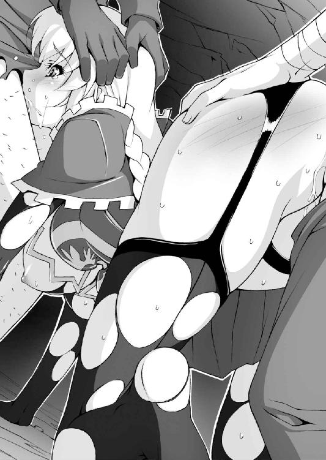
猛烈な嘔吐感と共に精液混じりの胃液が逆流し、ぼとぼとと口の端から噴きこぼれる。
そこに強引に陰茎をねじ込み、前後からローゼリアを陵辱にかかる。
「満足かい、騎士さま？ こんなもんが試練になるとはオレには思えねえんだが、まあしょうがねえよな、あんたがしてくれって言ったんだから。そらっ、喉の奥までぶち抜いてやるぜっ」
「んむ、むふふぅうう〜〜ッ。ぐぅふぅう」
陰茎の動きがはっきりわかるほどに、ローゼの喉が上下する。尻穴に挿入した山賊も徐々に腰を小刻みに動かし始める。
「んむ、ぷはっ!! そんなッ、お尻にちんぽッッ、あぁあ出し入れされてるッッ！」
「すげえっ、この尻穴すげえ！ 締まりがいいだけじゃなく、奥の方がうねうね動いてあったけえ、チクショウ、もう出ちまいそうだ」
「とっとと交代してくれよ。オレまだま○こを舐めただけなんだ」
「焦るなよ、騎士さまのお望みなんだ、じっくりこいつのケツ穴を教育してやろうぜ。処女のまま、ケツで感じまくる変態騎士さまにな」
「それでこいつを高値で売り払えば、明日から当分遊んで暮らせるってもんだ！ 騎士さまさまだ、まったくよう」
「はふぅう、あふぅうっ。お尻、おしり広げてはダメ、れすぅ」
「おおお、し、締まるッッ！ ケツ穴に......ぶちまけるぞぉおおッッ」
「くあぁああンンッッッ！ おひりぃいい、おひり熱いぃい！ ちんぽでお尻おかしくなるぅううう............ッッッ!!」
どくっ、どくん、どくんっ。
アヌスが内側から押し広げられる感触と共に、尻の奥に熱い飛沫が打ち込まれた。
（ああ、中で出てる、いっぱい出てる............お尻でこんな......でも）
ザーメンの熱を感じながら、姫騎士は苦痛と充実感を同時に感じていた。
それから、何度か意識を失っていたようだ。
欲に眩んだ盗賊たちは律儀にローゼの処女膜を保ったまま、延々と口と尻穴を休むことなく犯し続けた。
二十名弱の荒くれ男たちの性欲はすさまじく、一度や二度の射精で満足できる淡泊な男はただの一人もいない。十発以上のザーメンを飲まされたローゼリアは、咳き込むたびに白い液体を地面に吐き出した。
「げふっ、うぇえええ......けほっ、けほんっ」
「まだまだ、休んでるヒマはないぜ姉御。そらっ、ケツ穴にずっぽりちんぽが突き刺さっているところをみんなに見せるんだ」
「う......あ、あぁ............」
すでに何発も直腸で射精している男が、姫騎士の両脚を背後から抱え上げるように抱き上げた。
ちょうど赤ん坊に小用をさせるような格好で、Ｍの字に開脚させられた足のつけ根が丸見えだ。
挿入こそされていないが、乙女の花びらは尻から垂れ落ちた白濁でぐっしょり濡れていて、そのうしろの穴に深々と陰茎がねじ込まれている。
（わたくし......こ、このままじゃ......だめ、こんなんじゃ、また試練が......試練でなくなってしまう、のに............）
ぼんやりとそう思うローゼリアの顔に、もう苦痛の色はない。
数えきれないほど尻穴を犯されるうちに、身体が慣れ始めている。
いや、それどころか熱く逞しいちんぽで尻穴を擦られるたび、なんとも言えない快感が全身を駆けめぐってしまう。
男たちは気づいていないが、ローゼリアはすでに何度かエクスタシーに達していた。
（あ、また......またあのびくびくっていうのがきそう。あん、そんなに激しくお腹の奥を突かれたら、わ、わたくしまた......ッッ！）
「そら、もう一発食らいやがれぇえっっ」
どぴゅっ、びゅるるっ、ぶぴぴ............っっ。
大量の精液を注ぎ込まれた直腸はもはや限界、入りきらなかった男の精が、女騎士の尻穴からぴゅぴゅっと噴き出す。
まるでローゼリアが白い小便を噴き出しているかのような淫らな光景に、盗賊は手を打って喝采する。
「んぅ、あひぃいぅう〜〜......ッッ！」
男の腕に抱きかかえられたまま、騎士は四肢を痙攣させて絶頂に達した。
「ふひひっ、もうすっかりケツ穴で感じるようになっちまったな。ま○こ以外はオレたちのちんぽ汁が染みついちまったぜ」
「腹の中にもたっぷりご馳走してやったからなぁ」
「じゃあそろそろお開きにするか。いまのうちに縛り上げて、明日、人買いの旦那に引き取ってもらおうぜ」
地面にどさりとローゼリアの肢体を投げ出すと、盗賊の一人が荒縄で乙女の手首を後ろ手に縛り上げる。
念のため、足首にも縄をかけ、仕上げに犬を繋ぐように首にも縄を巻く。
（あぁ、わたくし哀れな奴隷にされてしまうのね。人買いに売り飛ばされて、昼夜を問わず毎日淫らなことをされてしまうのだわ......ッ）
「じゃあな、馬鹿な貴族の嬢ちゃん。明日っからは男のちんぽ汁がお前さんの飯だ。オレたち魔王軍に逆らったことを後悔するんだな」
「ちげえねえ」
げらげらとローゼリアを指さして大笑いを上げる男の背中から、仲間のものではない声が不意に浴びせられた。
「ほう............するとあなた方ですか、噂の魔王軍とやらは」
「だ、誰だッ!?」
闖入者に仰天した盗賊たちが慌てふためく。
誰にも気づかれることなく佇んでいたマントの男は、ひどく小柄だった。ただその声は地獄の底から響いているかと思うほどに低く陰惨な響きをしている。
「なんだてめえ！ どこから入ってきやがった」
山賊のだみ声には答えず、マントの男はフードの下からちらりとローゼリアの姿を見やり、「グルルル......」と獣のような唸り声を上げる。
「たかが人間の、外道の分際で魔王軍を騙るばかりか、うら若き乙女を辱めるとは......」
「なんだって言ってんだよ、この」
マントに手をかけようとした男の腕が、消失した。
「ぎいやぁああああああ」
ばしゃあっ。すぐ隣にいた盗賊の顔に鮮血と肉片がばらまかれる。
マントの男が音もなく放った無形の力によって腕が消し飛ばされたのだ。だがそのことに気づいたのは、虚ろな眼差しで転がされていた姫騎士ただ一人。
（いまのは......魔法攻撃............？ いいえ、魔法じゃなく単なる魔力の塊───それも恐ろしく高密度の魔力）
観察できたのはそこまでだった。
尻穴で絶頂に達した余韻、それに二十人近い荒くれ男たちに陵辱され続けたことで、さすがのローゼリアも疲労の極に達していた。
（だめ......頭がふわふわして何も考えられない......あ............寝てしまいそう......）
「うぎゃぁああああ、いてえええ、いてええよぉおお」
「オレの腕が、腕がもげちまったぁああ」
「か、身体が動かねえぇえっ、た、助けてくれぇええええ」
ずばっ、ばきばき、ぐしゃぁあっ。肉が裂け、骨が砕け散る壮絶な音と共に、盗賊の男たちの命が断たれる。
「我が軍団の名を騙る外道は滅ぶべし!!」
めきめき......ぶつりっ、びしゃぁああっ。
生きながらにして首をもがれた者は即死だっただけ幸運だった。マントの男がかざした手から噴き出た毒々しい霧を浴びた男は生きながらにして肉が溶け、息の根が止まるまで悲鳴を上げ続けた。
「き、貴様は......な、何者、なにものだぁああっ!?」
最後の一人が身体をひねりちぎれられて絶命したとき、いまだ動けずにいた人買いはがたがたと死の恐怖に震えながらマントの男に問うた。
「我は魔王───新たなる死と破壊の魔王、イアン＝ベテルギウス」
「ま、おう......魔王、まおう!? ひひひ......ひははははは............」
死の恐怖に人買いは錯乱し、正気を失った笑い声を上げ続けた。
ローゼリアが気づいたとき、身体に回っていた毒はすっかり抜けてしまっていた。
縄はほどけ、周囲には盗賊の無惨な死体が累々と転がっている。
「えひひひ、まおう、まおうだって？ うひゃひゃ、こりゃ傑作だ、ケッサクだ！ ひひひ、あひゃひゃひゃひゃ......」
ローゼリア以外の生存者───よだれを垂れ流し笑い続ける人買い───彼は完全におかしくなっていた。
インターミッション そのころの従者
「........................しずかねー......」
「パセラ。パセラ＝アンクルス。わしの夕飯はまだじゃろうか」
「先ほどお召しになられたところですわ、フロンケット卿。よく知りませんけれど」
「そうかね。ところで、このところ、ローゼリアの姿が見えないようじゃが」
「お嬢さまならご健勝でしょう、人のへそくりをくすねる程度には。よく知りませんけど」
「そうかね。おや、パセラ震えているようだが風邪かね」
「いいえぇ、抑えきれない怒りが沸々と込み上げてきたりしてませんわ。お嬢さまが旅先で奇病にかかったり食中毒を起こしたり、原因不明の下痢で七転八倒していなければよろしいなぁ〜とお祈り申し上げているだけですわ」
「うむ、パセラは本当によくできた従者だね」
「おそれいりますわ」
「........................平和だわー............」
第五章 無惨！ 姫騎士嬲り殺し
ビョォオオオオ............。
北の地を吹きすさぶ風は、一瞬たりともやむことがない。
その寒風に晒され続ける魔王城は、おどろおどろしい空気に包まれている。
魔王軍を騙るけしからん盗賊団の根城に侵入し、魔族の名誉を汚した人間どもを見事に討ち滅ぼして城に凱旋したイアンを待っていたのは、執事バーゼルの不機嫌な顔だった。
「な、なんなのその顔は、バーゼル」
「なんだとお思いですか、イアン＝ベテルギウスさま」
そう言われてもわけがわからない。
城を出る前に執事に言われたことは覚えている。「敵に情けをかけるな」、その教えに従ってニセ魔王軍は根絶やしにしてやったのだ。
（最初はちょっとかわいそうかな、と思ったんだけど、あいつらは女の人にひどいことをしていた本当に悪い連中だったからな）
少年の姿では舐められると思って、声色まで使った。
哀れな山賊たちは仲間が肉塊にされていく恐怖を味わいながら、むごたらしい死を与えられた、はずだ。
自分でもなかなかの魔王っぷりだったとさえ思っていたのだが。
「まず第一に───」
と角の生えたひげ面の執事は慇懃な態度で指をピンと一本立ててみせる。
「髭の中年男......わたくしめのような立派な髭とは比べものにならぬしょぼくれた髭男を、お殺しになられませんでしたな」
「ああ、あれ......ええと、ぱっと見で盗賊の仲間っぽくなかったし、なんかへらへら笑いだして、よだれとか垂らしだしてちょっとヘンになっちゃってさぁ」
正気を失った人買いの命を奪うのは、造作もないことだった。
だが、発狂した男を手にかけるのは、何か薄気味が悪くてついついそのまま放置してきてしまったのだ。
「ていうか、お前どこから見てたんだよ。雑事で忙しいとかなんとか言って、ボク一人に偽者退治をさせておいてさぁ」
「何を仰いますか、坊ちゃまの魔王としての初仕事をこのバーゼルめが温かく見守らなくてどういたします。町の雑貨店で情報をさりげなく聞き込む手腕など、なかなか見事でございましたぞ。あのとき購入された香油は、身隠しのまじないに使用されたものと推察いたしますがどうでしょう」
「......なんかずっとボクのこと覗き見してただろう、仕事もせずに」
「えへん、えへん。それはそうとですな、問題はまだありますぞ」
露骨に咳で誤魔化してから、老執事はぎろりと真っ赤な眼光で玉座にちょこんと座る少年魔王を見据える。
「坊ちゃまはもう一人の人間もお見逃しになられました」
「う」
「しかも縄の縛めまで親切にほどいてやったりしていましたな」
「文句があるんならその場で言えばよかったのに、そんな細かいことをぶちぶちと......これだから昔気質の年寄りは」
「仰りたいことがあればはっきり仰いなさい、坊ちゃま」
だって、と少年は抗議の声を上げる。
「あの女の人は盗賊に攫われて、ひどい目に遭わされていたんだよ。ぐったりしてたし、それにかわいそうに手足まで縛り上げられて」
「甘い！ 詰めが甘いですぞ魔王さま!!」
叱責と共にびゅごうと突風が吹きイアンの顔をしかめさせる。
老いたりとはいえ、さすがに年季の入った魔物でもあるバーゼルは、怒声だけで風を起こすことなど朝飯前だ。
「たとえ女でも相手は人間、われわれ魔族の敵でございます。いや、むしろ抵抗もできない乙女を陵辱し、魔族の精で孕ませるくらいの気概が欲しいですな」
「りょうじょく？ はらませ？ 何それ」
「つまり、坊ちゃまのマラで徹底的に！ 暴力的に犯しまくり!! 身体と心に忘れられない快楽を刻み込んで！ 哀れで惨めで卑屈な性奴隷に仕立て上げてしまうのですッッ」
喋っているうちに興奮してきた執事に、少年はきょとんとする。
「......なんだかよくわかんないけど、ひどい目に遭わされて女の人が喜ぶわけないでしょ。馬鹿だなバーゼルは」
「ふう......やはりあなた様は亡きお母上に似てお優しすぎるようです。特に美しい女を手にかけるのはおためらいになるのも無理はないのかもしれませんが」
ううっ、と痛いところを突かれてイアンは目を逸らす。
（そ、そりゃあ確かにあの女の人はすごく綺麗で、母様のことを思い出してしまったのは事実だけど）
しかし、執事の言うこともわからなくはない。
魔王として君臨するためには、相手が女だから殺さない、子どもだから見逃すなどというえり好みをしているわけにもいくまい。
「坊ちゃまがそのような体たらくであるならば、わたくしめももっと過酷なことを強いる必要があるやもしれません。魔王の名を世に知らしめるため、人間どもの町を一つ二つ滅ぼしてしまうとか」
「............」
「恐ろしい疫病を流行らせるのもよろしいですな。人間だけに伝染し、肉は爛れ全身にできものができ、苦しみ抜いた挙句に脳みそがドロドロにとろけて狂い死にするような、強烈なヤツを」
「............うっ」
想像して気分の悪くなった少年が口を押さえる。
「あるいは幻覚を見せ、同士討ちをさせるのもいいですな......クックック。親は子を、子は親を憎み！ 互いに死に絶えるまで武器を取って殺しあうのです......ッッ。まさに地上に出現した地獄！ 阿鼻叫喚の地獄絵図ですな、ぐははははははッッッ」
「バーゼルって」
「はい、なんでございましょう、魔王さま」
「日がな一日そんなことばっかり考えてるのかい」
「いえ、わたくしの企みなどほんの児戯でございますれば。きっと魔王さまであられるイアンさまは、もっと過激でおぞましく、聞くだに怖気で震えるような悪行のくわだてに腐心しておられることと拝察いたしますが」
「毎日そんなこと考えてたら、気が滅入っちゃうよ......」
なんとなく、これからの魔王業に嫌気が差してきた少年である。
「とにかく、これからも坊ちゃまが甘い行いをなさるようなら、そういった魔王らしい所行に手を染めてもらわねばなりません。それとも、あの女を見逃したのは何か理由あってのことだとでも仰られるのですか」
「も、もちろんだよ、その通り。ぼ、ボクが人間の女なんかに同情するわけがないじゃないか、馬鹿言っちゃいけないよバーゼル」
「ほう、してその理由とは」
「そ、その理由は」
「それは」
「あ、あ、あの、あの女の人に、魔王の恐ろしさを触れ回ってもらうためだよ！」
ほう、と執事が目を細くする。
「ほら、あの男の方はおかしくなっちゃったし、魔王が盗賊たちを血祭りに上げたって誰にも気づいてもらえないじゃない？」
「ふむ、理に適っておりますな」
「あの女の人は、魔王の恐ろしさをみんなに触れ回るに違いないよ。あの盗賊は偽物の魔王軍だったけど、本物が悪い盗賊を一人残らずぶちのめしたって。すごいぞ魔王、ガンバレ魔王、悪いヤツらは皆殺しだ！」
「..................」
「............とかいう感じじゃダメ、かな？」
「いささか安っぽい上に、何やら魔王と言うより正義の味方のような気もいたしますが、今回の件については不問といたしましょう」
やれやれ、とイアンは玉座の上で足を投げ出し、胸を撫で下ろす。
「安堵している場合ではありませんぞ、イアンさま。勇者がこの魔王城に攻め入ってくるその日まで、もっと精進して頂かなくては」
「う、うん、そうだね」
「今回はニセ魔王軍でしたが、強力な魔族にもイアンさまの実力を知らしめねば。おぞましき魔物を従えてこその魔王ですからな！」
「もしかしたらと思うけど、それもやっぱりボクがやるのかな？」
無言で恭しく頷く執事を見て、ため息をつかずにはいられない。
（魔王の実力を知らしめるって言うんだから、ボクが行かなきゃしょうがないか。今度は魔物が相手か、なんか......面倒くさいなぁ）
「行くのは構わないけど、ちゃんと城の修繕も頼むよバーゼル。すきま風が吹き込んできて、寒いったらありゃしない」
かしこまりましてございます、と慇懃に告げる老執事にいま一つ信頼の置けない、不幸な少年であった。
一方そのころ───。
魔王に見逃された女騎士ローゼリアは、復活した魔王の恐ろしさ、残忍さ、底知れぬ実力といった大変な情報を............誰にも言っていなかった。
正気を失った人買いを近くの町に送り届け、安宿で陵辱された身体を清めて体力を取り戻したローゼリアは、深く後悔していた。
「まったく、なんという体たらくかしら、ローゼリア＝フロンケット！」
宿のベッドに身を横たえ、あのときのことを思い返す。
ボロボロにされた上、ザーメンまみれにされた下着は廃棄し、どうにか見つけた粗末なインナースーツだけを着た格好だ。
「あの程度の盗賊相手でも、試練は受けられていたのだけれど......」
ちんぽをしゃぶらされ、尻穴を陵辱されるという屈辱を乗り越えた自分は、騎士として一回りも二回りも成長した、はずだ。
（なのに、魔王は盗賊を相手にはしたけれど、わたくしは一顧だにしなかった。わたくしは魔王の目に敵として映らなかったんだわ）
甲冑は身につけていても乳房は丸見え、陰茎をくわえさせられ、尻穴を犯されている身の程知らずの女騎士に見られたに違いない。
「わたくしはまだまだ騎士として未熟すぎたということなのね......それにしても、噂に違わぬ強さだったわ、魔王。底の知れない巨大な魔力、盗賊を容赦なく惨殺する残忍さ。わたくしの剣がどこまで通用するのか見当もつきません」
地・水・火・風、すべての魔法を使いこなす女魔法使いパセラの魔法といえど、ローゼリアに傷一つ付けたことはない。
ローゼの特殊な超感覚は魔力の流れをほとんど本能で感じ取り、剣の一振りでその流れを断ち切って無効化してしまう。自身が魔法を使えなくても、ローゼは攻撃魔法に対して脅威を感じたことはただの一度もない。
（けれど、あの魔王は違った）
ほんの一瞬しか見ていないが、あれは攻撃魔法とかいった小賢しいものではない。けた外れの魔力の塊をただぶつけるだけで、盗賊の肉体は紙細工か何かのように消し飛ばされていたのだ。
（マントやフードに隠れて外見は見えなかったけれど、圧倒的な強さだけははっきり感じられたわ。あの恐ろしい力で攻撃されたら、いかにわたくしといえども無事には済まないかもしれない......）
あのときは魔王に見逃されたものの、いずれは相対する敵になるはず。
魔王が本気で女騎士を殺すつもりで攻撃してきたら......そのときのことを考えるだけで、女騎士の背筋はゾクゾクと興奮と期待に震えた。
（魔王はわたくしの剣などものともしないでしょうね。しかも一撃でわたくしを殺すような真似はしないに違いないわ。わたくしに真の絶望を与えるため、ほんの少しずつ傷を与えて、わたくしが動けなくなるまで嬲り者にするんですわ............はぁッ）
妄想に感極まって、ローゼリアはベッドの上で自分の身体を抱きしめて身悶える。
粗末な枕に顔を埋め、腰をもじもじさせると明らかに股間が火照っているのがわかる。いまだ処女を保ったままの乙女の花びらの奥からじわりと熱い蜜が滲み出ている。
「はぁ、はぁ......ま、魔王の力で身動き一つできなくなってしまうかも。反撃もできない、まるで無力な状態にさせられて......」
はぁあん、と甘ったるい声を漏らし、うつぶせの状態から軽く尻を持ち上げ、太腿をもじもじと擦りあわせる。
むっちりと肉感的な太腿に挟み込まれた花びらの一部分、敏感な肉芽がヒリヒリと痺れるような快感を訴える。
熱く濡れた眼差しは、魔王の力に蹂躙され苦しめられる自分の姿を夢想して、うっとりとその姿に見とれている。
（魔王も猿人や盗賊さんのように、弱々しいわたくしに興奮するかしら。魔王たる者がそのような......でも、敢えてわたくしを辱めるためにちんぽを大きくして、わたくしの純潔を無惨に引き裂いてしまうかもしれないわ）
処女こそ失っていないが、ローゼリアの肉体は幾度もの辱めの結果、女の快楽に目覚めかけている。
（いいえ、わたくしは気持ちよさなど求めてはいません！ これは恥辱という試練を通して、一人前の騎士になる過程ですッ。そのためなら、魔王のぶっとくて凶悪なちんぽに陵辱されることも厭いません......!!）
頭ではそう考えていても、成熟した女体はますます火照りを帯びる。
（度重なる陵辱の果てに、心屈しそうになるかもしれませんわ。浅ましい肉奴隷に調教されてしまって、魔王に犯されることに悦びを感じてしまうかも）
騎士の夢想は、少年魔王の執事が語った勇者陵辱の光景と微妙に重なりつつある。ベッドの上で悩ましく肢体をくねらせ、息が荒くなっていく。
（わたくしが真の騎士に成長するまでは、屈辱の日々が続くでしょうね。卑劣な魔王の策略で、いやらしいことしか考えられなくなったり。たとえ魔王に陵辱されようと、負けはしませんッ.........ッ！）
ローゼリアは魔王に陵辱されたいのではなく、あくまで試練を乗り越えているつもり。なのにどうしても魔王に犯されている自分を妄想して胸が高鳴っていく。
（いつの間にか気持ちよくなってしまうなんて、まだまだ未熟！ わたくし、もっともっと試練を受けなければいけません）
思い出すだけで、あの感覚が甦る。
熱く灼けた鉄のような陰茎が肛門を押し広げ、括約筋を擦る感覚。
直腸に大量の白濁液を流し込まれ、ついに生臭い汁を尻穴から噴きこぼしてしまう居たたまれなさ。そんな無力な自分を思うだけで背筋を快感が走り抜け、頭の奥が燃えるように熱く疼いてしまう。
（ここ......ここに入っていたのよね）
丸くてすべすべしたヒップに手を回し、そっと撫でてみる。
白桃のような尻の中央に走った割れ目、その奥に小さくすぼまった菊門がある。下着の上から指を軽く押し込むと、きゅっと蕾が緊張する。
（まだ......お尻、熱い。こんなところに汚らわしい男のモノを注ぎ込まれただなんて......その上はしたない声まで出してしまうなんて）
誰に見せたわけでもないが、ローゼは一人頬を赤く染める。
こんな小さな孔に、男たちの極太がねじ込まれていた事実が、自分でも信じられない。
（こ、これはまた同じ目に遭ったときのための、自主鍛錬......）
もみ、もみ、もみと尻肉を揉みほぐす、外からじんわりとアヌスを刺激する。
これは騎士に与えられる試練でもなんでもない、それはわかっている。わかっているけれど、経験を重ねるたびに苦痛の中に快楽を見いだしてしまう、この不思議な感覚の正体が知りたいと思う。
薄い下着姿一枚でベッドに横たわり、自分で自分の尻を弄っているだなんて、誰かに見られたらヘンに思われるに決まってる。
だが「誰かにもしも見られたら」という妄想さえも興奮の材料となって、胸の奥が熱くなってくる。右手で腰から尻にかけてを揉むようにほぐしながら、左手で高鳴る胸をそっと押さえる。
（くっ、おっぱいなんかで感じてはダメよ、ローゼリア）
薄い布地の下の肉球からぴょこんと飛び出た突起物。
乳房を持ち上げると全体がじんわり心地よい。だが突起部分は特別敏感になっていて、指の腹で触れると「きゅうっ」と差し込むような愉悦が走る。
桃色の先端は充血し、コリコリと硬くしこり始める。
「はぁ......んふぅ、んん............っ」
こりこり、さわさわ......指先につまんで軽くねじる。
指の腹で上下に、あるいは左右に擦ったりと動きに変化をつけるとますます気持ちよさが募ってくる。
（先っぽがすごく敏感になってる......こ、この刺激に、た、耐えなくてはッッ）
ここが快感を与えるものだと、男なら誰もが知っているのだろうか。
オナニーの経験などまるでなかったローゼリアには、猿人の牡や盗賊が女体の神秘になぜ詳しいのか理解に苦しむ。
だが姫騎士の肉体は度重なる試練を受けた結果、確実に刺激に反応し、特別な気持ちよさをもたらすようになった。
（これは、試練？ それとも......に、肉体の鍛錬よ、鍛錬ッ）
「あ、はぁ......はぁ、はぁ、んん〜っ。お、おっぱいと、お尻っ。ど、どっちも感じるっ。も、もう少し強くしたら......あふぅううんッッ？」
ニップルに軽く爪を立てた瞬間、騎士の身体がベッドの上でびくんと跳ねる。
鋭い痛みとそれ以上の悦楽が突起から背筋に走り抜けたのだ。
（ちょっと弄ってみただけなのに、もうこんなに......修行の旅に出てから、なんだかわたくしの身体、ずいぶん変わってしまったみたい）
そう、思わずにはいられない。
ニップルだけでなく、尻も十分感度が上がってきたので、思いきって下着の内側に手を差し込んでみる。
割れ目を掻き分けるように指先を潜らせ、蕾を探り当てた。
「ん」
触れた途端、きゅんっとそこだけが別の生き物のようにすぼまった。
無理矢理肛門をこじ開けるようなことはしない。押し当てた指の腹で摩擦するように揉みほぐす。
（ま、魔王ならきっともっとねちねちと、ここを責めてくるに違いないわ。なんて非道な魔王！ わたくしを弄ぶつもりなのだわ......！）
指先で円を描くようにアヌスをほぐすと、ぬるっと腸液が滲んでまとわりつく。
それを潤滑油にしてさらに揉み続けると、尻穴がちりちりとむず痒く、くすぐったい。そこに乳首への刺激を重ねてみると、また違う趣がある。
「はん、はぅう......っっ。んくぅう、くふぅんっ」
胸の鼓動が速くなり、吐息と共にこぼれる喘ぎ声が艶めいてくる。
（くっ、負けたと思わない限り、わたくしに敗北はありません！ たとえどれほど執拗に辱められようともッッ!!）
魔王ならどんなふうに自分をいたぶるだろうかという妄想が心に浮かぶ。
（卑怯で邪悪な魔王なら......例えば、魔法でわたくしの身体を操って自分でこんな恥ずかしいことをさせたりするかも！ おぞましい策略だわ！）
冷徹な眼差しを向けられながら、自分で自分の乳や尻を弄って悶絶するローゼリア。魔王に恥辱を与えられている、そんな妄想が姫騎士を興奮させる。
「ううっ、あっ。ふぅうんっ。ど、どんな目に遭わされようと、屈しはしない......！」
妄想に従って、騎士の両手は魔王の意志となって容赦なくローゼの肉体を弄ぶ。
（あぁ、なんて卑劣な魔王！ クッ、けれどわたくしは負けませんわ......！）
手つきがさっきより乱暴になって、乳首にきりりと爪を立ててくる。
「ひうっ」
おそるおそるこねていた手つきから一転、「魔王」の手が姫騎士のたわわな胸を遠慮もなくいたぶり嬲る。
張りのある肉球にぐいぐいと指を食い込ませ、布地の上から乳房をちぎり取らんばかりにひねり、掴み上げる。
「あぁ、ふあぁあっっ！ ま、魔王の責めはこんな程度、では......ッッ」
騎士の未熟をせせら笑うように、今度はずぶりとアヌスを指で貫いた。
むりむり〜っと第二関節までねじり込んでから、「ぐりんっ」と手首を回転させる。姫騎士の可憐なアヌスが悲鳴を上げる。
「あぐぅうっ、お、お尻の穴が......広がっちゃうぅ......！ ずぼずぼされるところも、ぜ、全部見られて......ッッ!!」
アヌスが熱く灼け、じんじん痺れてきた。
本来、受け入れるべきでない侵入者をいやいや受け入れ、内側から直腸を押さえられ、擦られるこの無力感。
（でもこうされてもしょうがないんだわ。わたくしはまだ半人前の騎士なんだもの。お乳とお尻の穴で気持ちよくなってしまう、だらしのない身体なんだもの。強大な魔王の前では赤子同然なんだわ）
そうやって、自分が無力だと思うほどに快感が増してくるようだ。
尻穴に指を突っ込んだまま、ベッドの上で悩ましく肢体をくねらせる。
乳房を露出させると、しこった左右の乳首を代わる代わるつまみ上げ、ひねり上げる。「ぱしん、ぱしん！」と肉球に平手打ちを浴びせると、盗賊に尻を叩かれたときのような被虐的な悦びが込み上げる。
「あぁ、あぁあんっっ。そんなにっ、い、いじめられたらわたくし、私ッッッ」
魔王という絶対的な存在に虐げられる妄想が、なぜこんなに自分の胸を焦がすのか。
（いいえ、こ、これこそが騎士の道、騎士の試練！ この恥辱に耐える心の強さを得るため、も、もっと......もっとお尻、を）
どうしてこれほど身体が熱くなってしまうのか、ローゼリアにはわからない。
「あふ、うぅう〜〜っ！ まおう、ま、おうぅうっ、に、犯され......ッッ。くふぅ、ふぅう〜〜〜んっっ」
（わたくしは、騎士の試練を乗り越えて、もっと立派な騎士になるために......でも本当にそうなのかしら？）
ふと、豊かな胸の奥に疑問が湧いた。
（試練のはずなのに、こんなにも気持ちよくなっていいの？ いいえ、わたくしは快感を求めてるわけじゃないわ。もっと、もっとひどい恥辱に耐える強さを！ で、でもまたあんなふうにいたぶられたら、わたくしまた......）
快感と疑問の狭間で混乱しながら、姫騎士は両手を激しく動かす。
ニップルはじんじん痛いほど充血し、尻穴をえぐるたびににちゃにちゃといやらしい音が部屋いっぱいに響き渡る。
弄り回しているアヌスの前の花びらからは、乙女の蜜がとめどなく溢れ、それは下着を汚し、シーツに大きな染みを作っていた。南国の花のような香りが部屋の空気を甘く甘く染めていく。
「あ、はひ、ひぃいんっ。たとえッ、惨めに陵辱されようと......わたくし、は、魔王に屈服など、し、しな..................いひぃいいいんんッッ!!」
びくんっっっ。びく、ふるふる......がく、がくんっっ。
口をついて出るのは気高き騎士の言葉、誇りに満ちた鋼鉄の魂。
だが成熟した肢体は火照って桃色に染まり、びっしょりと肌を濡らす汗は込み上げる悦楽の証以外の何物でもない。
自らの肉体を辱める手の動きはますます激しくなり、興奮と快楽のメーターの針は限界を超えて振りきれる。
「あぁああんっ！ ぐぅうッ、くひぃ、ふぁああああああ............ッッッ!!」
根本まで指を飲み込んだ尻穴が猛烈な力で指を締め上げる。
燃え上がる快楽の蛇が尻から骨盤に充満し、一気に爆発したそれはローゼリアの心臓を掴み上げてから脳髄を灼き焦がす。
自分の手で、しかもアヌス弄りでエクスタシーに達した騎士の尻穴が、強烈な快感に何度も何度も痙攣する。
やがて弓なりに反り返った長身が、ベッドを軋ませながらゆっくり弛緩していった。
（わたくしは......どんなことがあっても目的を達しますわ）
自分が本当に求めているものはなんなのか。
疑問は澱のように女騎士の胸に残ったが、これだけは間違いなく断言できる。
（わたくしは、悪を倒し人々に平和をもたらす。そのために魔王と戦い、悪逆非道の魔王を倒してみせる......！）
きゅん、とアクメの余韻で尻穴が疼く。
（たとえおっぱいを揉みまくられてもッ、お尻の穴を乱暴に犯されても......ッッ！ 太くてゴツゴツの凶悪ちんぽで、アソコを貫かれようとも!! 魔王の濃厚なちんぽ汁で、惨めで哀れな性奴隷に堕とされようと......決して負けませんッッ............！）
脳裏に浮かぶのは、魔王に虐げられ、嬲り者にされている自分の姿。
（あぁっ、だから精進を重ねなければ！ 魔王に犯されるその日のために!!）
自分の中で人々を救うという「目的」と、魔王に犯されるという「手段」がごっちゃになりつつあることに、ローゼリアは気づいていない。
穏やかな眠りに沈んでいきながら、乙女騎士は言いようのない充実感に包まれていた。
翌朝、ローゼリアはさっそく行動に移ることにした。
すなわちさらなる試練を得るための情報収集である。紅の甲冑をしっかり着込み、大小の二刀を腰に下げて安宿をチェックアウトする。
（それにしても、宿のご主人に変な目で見られていたような......他の宿泊客からもやたらと見られたし、しかもみんなにやにやしてて）
もしも黒髪の女従者が同行していたら、薄い壁の安宿で悩ましい声を漏らしている騎士の頭を即座にはたきに来ていただろう。
だが迂闊な姫騎士さまは、周囲にはしたない声を聞かせていたことにも気づかず、晴れ晴れとした顔で町に繰り出していったのだ。
まこと、幸運とはどこに転がっているかわかったものではない。
「ふむふむ......魔物の森、ですか。ここから少し南よりの......」
ふらふらと露天通りをさまよいながら、どうにかそれらしい情報を聞き出せた。
魔物の森、などという大層な通り名がどこまで真実を語っているのかわからない、というのはさすがに世間知らずのローゼにもうすうすわかりかけてきた。それでも情報ゼロよりはずっとマシだ。
（魔王の住むという城はもっと北の最果ての地......逆方向ですけれど仕方ないわね。これも経験を積むためですから）
それに、ぶっちゃけ旅の路銀が底を尽きかけている。
世間の相場や目利きに関してまるであてにならないローゼリアは、こすからい商人にとっては最高のカモでしかないのだ。
「まあいいわ、いざとなったら軍資金を取りにお城に戻れば」
従者のへそくりを掠め取ったことなど、騎士の記憶にはもはや残っていない。
「やあ、女の騎士さまとは珍しいな。ちょっと寄っていかないかいお嬢さん？」
食料品その他を物色していると、声をかけられた。
振り向くといかにも露天商の主人がにこにこと愛想笑いを浮かべている。
「あら......武器商人さん、ですか？」
なるほど露天の店先にずらりと並べられているのは様々な刀剣や鎧、盾。
旅人が扱うのはせいぜい短剣だが、町の自警団ならそこそこの武装を必要とする。こうした武器商も必要とされているのだ。
「お嬢さん、お見受けしたところなかなか立派な甲冑と剣をお持ちのようだ。しかし、装備に頼りすぎるのは感心しないねえ」
「えっ......そ、そうでしょうか」
「確かに高価な鎧に身を包んでいれば安心だ。だが鎧に頼っているようじゃ、本当の勇気ってのは育たないんじゃねえのかい。一流の騎士ならなおさらだ、窮地に立たされたときは自分の素の実力がものをいうんだからな」
鮮やかな紅の甲冑を着た女騎士が「無双の剣士」とも知らず、店主は偉そうに講釈を垂れる。
だがローゼリアはうかうかとその話しぶりに引き込まれ、頷いていた。
「たっ、確かに仰る通りですわ。装備に頼っていては、真の強さ、勇気は鍛えられませんわね」
「見たところ、お嬢さんはまだ駆け出し騎士ってところだろう。それならなおのこと、修行にふさわしい装備にした方がいいよ。どれ、見立ててやろうじゃないか」
そう言うと店主は店の奥に入り、ぞろぞろと鎧やら何やらを持ってくる。
「こっ、これは..................なんというか、華やかですわね」
なんと主人の持ってきた鎧はビキニ鎧。色はローゼの甲冑と同じ赤系だが、ご丁寧にラメまで入ってちかちか光っているのがいかにも安っぽい。
（プレートもあまり頑丈そうじゃないし、上下共にただ紐で繋がってるだけで、これってほとんど全裸と変わらないのでは......はっ！ だ、だからこそ装備に頼らない心が育まれるのですね！）
これが鎧と言うのなら、スクール水着は重装甲と言っても通用するだろう。
明らかにいかがわしいストリップ小屋の踊り子の衣装にしか見えない紐ビキニ鎧を、ローゼリアは感動の眼差しで見つめる。
「どうだい、これぞレアアイテム『苦難の鎧』。わざと試練を呼び寄せ、装着者の精神を鍛えるって代物だ。大きな声じゃ言えないが、伝説クラスの鎧だ」
「く、苦難の鎧！ そ、それは素晴らしいですわ」
「そうだろう、そうだろう。いまならこの試練の棍棒と誘惑のハイヒールもサービスで付けてやるぜ」
と、これまたなんの変哲もないただの棍棒と真っ赤なヒールを持ち出してくる。
持ち手の部分に適当に布を巻いて、石突きにこれまた適当な装具をいいかげんにハメ込んだだけの、子どもの工作と言ってもいいような棍棒に、さして上等とも思われない、むしろ色合いが無駄に下品な紅のハイヒール。
（『試練の棍棒』......なんて素敵なネーミングでしょう！ これこそッ、わたくしに足りなかったものですわ！ この装備で敢えて苦難に挑んで、騎士としてのレベルをトントントーンと一気に駆け上がるのよ！）
迂闊な騎士は、店主のヨタ話を毛の先ほども疑ってはいなかった。
「ご、ご店主さん！ わ、わたくしにその鎧を譲って下さいませんか。ええ、その棍棒もぜひ!!」
「お、おう......な、ならこの値段じゃどうだ」
「あら、あいにく手持ちの路銀ではちょっぴり足りません。そうだわ、わたくしの甲冑と剣と交換というのはいかがでしょう」
ナイスな提案をしたと喜色満面のローゼリアに、武器商人は呆気に取られ、そして急にきょろきょろと周囲を見回す。
「この品々は父上がわたくしのために特注して下さった一点ものです。それほど安いものではないと思うのですが......」
「えっ、あ、ああ。安いどころか王国騎士でも持ってそうもない高級感がひしひしと......い、いやそそそそうだなぁ〜うーむ......」
怪しげな装備に夢中になっているローゼリアは気づいていないが、この時点で武器商人には周囲の露天商から無数の視線が注がれていた。
（なんだあの野郎......どう見てもフェアトレードじゃねえぜ）
（あの姫さんの装備は最高級品、それに比べてあのタヌキ親父の出してきたビキニ鎧と棍棒は、二束三文のガラクタじゃねえか！）
（やつの提示した額を見たか？ あのガラクタなら、二十個は優に買えるぜ!?）
（チクショウ、妬ましいうらやましい、憎いぜ妬むぜ嫉むぜ〜〜〜ッッ）
言葉にするとおおよそそのような非難の視線に、商人の額に汗が浮かぶ。
「あの、ご店主......さん？」
ローゼの甲冑と剣を商人が手に入れたらボロ儲けどころの騒ぎではない。そして商人たちにはある一定の仁義というものがある。
すなわち「阿漕な商売をするヤツは商人の風上にも置けぬ」。
いや正確には──────「一人でおいしい目に遭うヤツは許せねえ」。
（ど、ど、どうするよ、オレ!? こんな立派な甲冑と剣をほいほい差し出すなんて、この嬢ちゃんは底抜けの馬鹿娘だ。だが、このままじゃあの欲深連中がどんな難癖付けてくるか......！）
「あの、使用済みの装備ではやはりダメでしょうか」
（つうか逆にプレミアが付くっての！ くんかくんか匂いを嗅いだり、自分で着てみたりしたら、夢見心地で暴発間違いなしだぜ！ いや落ち着け、そ、それよりどどどどうすりゃいいんだ！ こんなことならもう少しマシな物売りつけるんだったぜ）
早くビキニ鎧を身につけたいと全身で訴える女騎士と、商人仲間からの無言の圧力の板挟みになり、店主の頭が朦朧としてくる。
（あいつら、オレが嬢ちゃんの甲冑を手に入れた途端に嬢ちゃんにチクるに違えねえ！ いや、自警団に訴える？ いやいや、組合からオレを締めだして、商売できないよう裏工作でもやりかねねえ〜っ）
自分もその欲深連中の一人であることを棚上げし、仲間に呪いの言葉を吐こうとしたそのとき、天啓が閃いた。
「はーっはっはっは！」
「は、はい？」
「た、た、試しは見事合格だ！ お前さんの騎士の志、しかと確認した。さ、さっきの額の三分の二、いや半額でいい！ つ、ついでにこの盾もサービスしておいてやるよ、いい騎士になりな!!」
「まぁああ......なんてご立派な商人なのでしょう。わたくし、必ずやこの装備で騎士として一回りも二回りも大きくなります！」
「わっはっはっはっ............」
かくして紐ビキニ鎧とただの棍棒を手に入れた姫騎士は、意気揚々と「魔物の森」に向かった。
武器商人は騎士が見えなくなるまで満面の笑みで見送った。
「ふぅ〜〜っ。わ、我ながらナイスな誤魔化し方だったぜ......って、な、なんだお前ら！」
「なんだじゃねえよ、このごうつくばりが！」
「あの額の十分の一でもまだ高いくらいだろうが、コノ欲深野郎!!」
「しかもなんだあの盾は、あれも二束三文のゴミじゃねえか」
「おい、こいつ組合で吊し上げてやろうぜ」
「あったりまえだぁ、あんな純真な嬢ちゃんを騙すとは商人の面汚しだぜ」
「鬼、悪魔、守銭奴！」
「な、な、なんでだよぉおおお〜〜〜〜〜っっっ」
その後、その武器商人をこの町で見た者は、いない。
魔物が巣くうとされる森は見るからに陰鬱な空気に満たされている。
沼地のような湿気こそないが、そこかしこで甲高い鳥の鳴き声が響き渡り、気の弱い者なら尻に帆かけて逃げ出すこと請けあいだ。
「なるほど、これなら魔物が出てきてもおかしくはないですわね。概して魔物というのはこういう雰囲気を好むものだから」
かの麗しき姫騎士は、相棒である愛馬シュトラウスを連れていない。
沼地のときは蹄が汚れるのを嫌ったからだが、今回はそうではない。
というのも......試練の棍棒と苦難の鎧を装備したローゼリアに警戒心を剥き出しにして、まともに乗せてもくれなかったのだ。
（そりゃまあ、ちょっとは派手な身なりになったかもしれないけれど）
と、ほとんどが細い紐だけでできた超過激ビキニの鎧を身にまとった騎士は自分の姿を見下ろす。
ふくよかな乳房を包む胸部装甲は小さい。というより、かろうじて乳輪を隠しているだけ、と言った方が正しい。
材質が安いのか、すぐ「ぺかん、ぺかん」としなる。
「ううう、おっぱいはまだしも、下はもう少し大きくても罰は当たりませんわっ」
どうかするとプレートの端から金色のアンダーヘアが見えてしまいそうで、ついついへっぴり腰になってしまう。
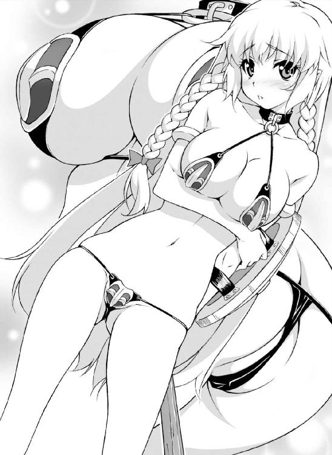
（普段はまだ甲冑とドレスで隠れているけれど、これでは本当に裸も同然ですわ。あぁ、いまごろになって、この格好で町を歩いていたことを思い出してしまいます。みんな、じろじろ見るわけです......）
新たな鎧を得て高揚していたのか、町の中ではなんとも思わなかった。
だがよくよく考えれば、豊満な巨乳も腰のくびれも、むっちむちの太腿からすらりと伸びる曲線美まで、すべて人前にさらけ出していたのだ。
「おい、あれってどこの踊り子だ？ オレ絶対通っちゃうよ〜〜」
「新しいショーパブの宣伝だろ、エロすぎだぜまったく」
（あうあう、あれってもしかしてわたくしのことでしたの？ よもや鎧と棍棒を装備した騎士がそのような目で見られるなんて、迂闊でしたわ）
とはいえ、鼻歌気分で町を練り歩き、半裸身を見せびらかしていたのはローゼリア自身だ。
人目のなくなったいまになって急にこの格好が恥ずかしくなり、左腕に装備した盾で身体を隠すようにするが、柔肌は徐々に火照ってくる。
「いえ、羞恥心に冷静さを欠いてはいけないという尊い教えに基づいた鎧なのだわ、これは。それに、わたくしの甲冑と色味は近いものがあるし、うんうん」
ラメ入りビキニ鎧とヒールに身を包みつつ、無理矢理そう思うことにする騎士である。
「？ さっそく魔物の気配がするわ」
久しぶりに感じる禍々しい気配に、さっと緊張が走る。
反射的に腰に手をやるが、そこに持ち慣れた剣の柄はない。ごつごつした棍棒を握りしめるローゼリアは、森の奥に目を走らせる。
（さあ、いったいどんな恐ろしい魔物が出てくるか......どんな強敵相手でも、この装備で必ず打ち勝ってみせるわ。出ていらっしゃい！）
現れるのはオークかドラゴン、はたまた邪妖精か。強い邪気には感じられないが、魔物であるのは間違いないと騎士の感覚が告げる。
そして気配がいっそう濃くなり───。
ガサッッ。
ぴょこんっ、ぴょん、べちゃぁっ。
青白くて半透明なゼリー状の物体が草むらから飛び出して地面に落下した。
大きさにして人の頭ほど。ぷるぷるぷる......とひしゃげたボールがゆっくりと復元していく。陸生のクラゲという表現がぴったりのそれは、俗にスライムなどと呼ばれるれっきとしたモンスター。
ただし、「モンスターとしては最弱」と名高いゼラチン質の魔物だ。
「ス──────スラ、イム？ まあ、まあまあまあ......懐かしいと言うか、なんと言うか、そうですかスライムですか............」
棍棒を構えていた騎士の声から急速に力が抜け、肩をガックリと落とす。
（スライムと最初に戦ったのは、わたくしが三歳になった誕生日でしたかしら。一撃で仕留めて、父様に褒めて頂きましたわ。いえ、わたくしが初めて倒した魔物ですから、感慨深いと言えば感慨深いのですけれど）
三歳にして魔物を倒したというのはさすがにローゼリアくらいのものだが、実際そのくらいスライムというのは弱い。
旅の商人や農夫でさえ、スライムに負けたりすることはない。体格のいい少年なら鬱憤晴らしにスライム狩りをするほどなのだ。
（いいえっ、修行中のわたくしが敵をえり好みするなんて高慢ですわ）
と思い直して棍棒を構え直す。が、使い慣れた長刀と重心がかなり違うので、どうにも扱いづらい。棍棒といっても要は太くて長いただの棒、それなりに重量もあるのだ。
一方、ゼラチンボールはぶるぶる震えながら地面をのたのた這い回り、周囲の様子を窺っているようだ。
目も鼻も口もない不定形生物は、獲物を全身で飲み込んでゆっくりこれを消化する。
「！ もう一匹......まだ増える？」
がさごそと草むらを掻き分け、二匹目、三匹目、四匹目のクラゲ玉が姿を現す。
（どうやらここらはスライムが生息しやすい環境のようですわね。最弱とは言え相手はモンスター、わたくしも初心に戻って立ち向かいます！）
ぷるぷるぷるぷる......ぼんよよ〜〜〜んんっっ。
丸い身体をうんと縮こまらせてから、クラゲが跳ねた。
前方から飛来するそれを左手に構えた盾でいなすローゼリア。だが、ゼリー玉が盾にぶつかった瞬間、およそ信じられないことが起こった。
「ひや？ ごげっ」
めきめきッッ、ぼこんっ。
見るからに粗雑な作りの盾が、軽い一撃で大きくへっこんだ。
盾のあまりの脆さにローゼリアは思わずバランスを崩す。その顔面にスライムの貼りついた盾がまともにぶつかり、姫騎士は無様にのけぞる。
「なっ......なんなのこの盾!? ええっ、この板、腐ってますわッッ」
意外と軽い盾だとは思っていたが、へっこんだ薄い鉄板がべろりと剥がれ落ちるのを、ローゼは呆然と見つめた。
その下に見える腐った板に、何やら文字が見える。
「『大盛り青春食堂』......？ お、おナベの蓋ぁああ〜〜〜ッッッ!?」
呆然と立ちつくす姫騎士に、四方からスライムの群れが襲いかかる。
どかっ！ ドガガッ、ばちぃいんっっ。
その程度の突進を避けられないローゼリアではない。だが買ったばかりの盾がナベの蓋だったという非常識さに呆気に取られ、攻撃を食らってしまった。
（えっ、ええ〜〜〜ッッ！）
連続攻撃を食らってしまった姫騎士は、さらに驚愕すべき光景を目の当たりにした。
スライムが掠めただけの胸部プレートまでが「べこり」と凹み、乳房の弾力で「ぼこり」と元の形を取り戻す。
腰を包んでいるはずの装甲が特別小さなスライムの接触だけで金具がゆるゆるになって、騎士は慌てて紐を引っ張り直して脱げそうになるのを防ぐ。
「な、な、なんですのこの鎧は!? くっ、また左から......」
身をひねった途端、ローゼリアは悲鳴を上げる。
ただ身をよじっただけなのに、ボリューム感たっぷりの巨乳がぷるんと揺れ、鎧から乳首がこぼれそうになる。
急いでニップルをしまい直すと今度は下だ。
「やぁあんっ、お股が丸見えになってしまいますぅっ」
粗雑な作りの紐はひっきりなしに緩み、ローゼリアはスライムをかわしつつ、紐を締め直しつつ、乳首を股間をさらけ出さないように気を使い続けねばならない。
「う、うっかり回避運動も取れないなんて、さすが苦難の鎧！ 伝説級のレアアイテムの名に恥じない希少な鎧ですわッッ」
この期に及んでまだ悠長なことをほざく姫騎士に、水色のゼリーボールが矢継ぎ早に攻撃を仕掛けてくる。
ごりっ！ どすっ、ばきばきいっ。
四方八方から不規則な軌道で体当たりしてくるスライムの猛攻に、ローゼリアは為す術もなく立ちつくす。
（ど、ど、どうにか紐は締め直したけど、ちょっと締めつけすぎました......っ）
とにかく脱げないように紐ビキニを装備し直したおかげで、今度は紐が肉に食い込む。
やたらと重い棍棒を持つ右手が疲れを訴え、締めつけすぎの革ひもがぐいぐい柔肌に食い込み、女体の豊満さをこれでもかと見せつける。
それでも、ローゼは敢えてスライムの猛攻を避けようとはしない。
いや、正確には避ける必要もなかったのだが。
（よ、鎧に、装備に頼ってはいけない、いけないのだわ。それに、それに............ちっとも、痛くないんですもの）
そう、最弱モンスターとして名高いスライムの体当たりは、鍛え上げられた騎士のしなやかな肉体にはかすり傷一つ付けていなかったのだ。
（けれど、鎧の紐が食い込んできて、動きづらい......ああ疲れた）
ダメージはない。
ないのだが、いいかげん紐の食い込みに疲れたローゼはその場にへたり込む。
（それに、この弾力のあるクラゲがぶつかってくる感触、なんとも言えませんわ。まるで幼子とボール遊びでもしているよう）
姫騎士は不意に笑いの衝動に囚われる。
（いけない、わたくしちょっと面白くなってきてる。だって、こんな森の中で、こんな恥ずかしい格好で、す、スライムみたいなのを相手に棒立ちでぼこぼこに攻撃されてるなんて、お、お、おかしすぎる......ッッ）
そのとき、またも胸部装甲が「ぺこん、ぽこん」と間抜けな音を立てる。
なんて脆い作りの鎧なんだろう、それだけでおかしくなってくる。
「くすっ、くふふ、うふふふ......っ。きゃは、やめ、やめなさい、お、おっぱい出ちゃう。おっぱ、おっ......くくくくく」
ぽろりん、と白い肉球がこぼれ出るさまが輪をかけて馬鹿馬鹿しく、ローゼリアの笑いのツボに直撃する。
「だ、だめ。そんな、ぽこぽこぶつかってきても、痛くもなんともないですわ。くすすっ、うふ、むふふふ」
とうとう騎士は露出したお腹を抱えてその場にへたり込んで笑いだす。
身をのけぞらせてあはあはあはと笑う太腿にぽよんとクラゲがぶつかって、また紐が緩みそうになる。
「あは、あははは、こ、これじゃお股も隠せないじゃないですか。ふひっ、お、お股、ま、丸見え、まる......くひふふ、うふふふあははは」
ぽすん、と太腿に間にスライムの一匹がはまり込んでしまった。
むちむちの乙女の腿に挟まってしまった軟体の魔物が窮屈そうにうねうね動くと、振動が股間に伝わってくる。ローゼリアは両手を身体に回してクツクツクツと笑い続ける。
「あひゃうぅ、そ、そこだめ、そこは感じやすいから。あ、あぁ、んんっっ！ もう、ダメです、ダメですよぉ、くふふふっ」
この間抜けな状況がツボにはまった上、股の間からむにむにと心地よい柔らかな感触が伝わって、もう笑いを抑えきれない。
いつしかローゼリアは自分から股を開き、スライムのぶよぶよの身体に密着させていた。魔物もそこが気に入ったのか抜け出そうともせず、ふるふると身体を振動させて、その振動がもろに花弁を痺れさせる。
「あふ、はうぅんっ。そ、そこは弱いのれすぅ」
ヒルに群がられたときとは、微妙に感触が異なる。
あのときは無数の小さな軟体が肉芽や花びらを刺激していた。だが、スライムの一体化したぶよぶよゼリー体はひたりと乙女の柔肌に吸いつき、毛穴の一つ一つにまで浸透してくるようだ。
「はぁ......はぁ、ん。なんらか、これはこれで、き、きもひいい......かもぉ......」
完全に破損した安物鎧は防護の意味を失い、ゼリーの魔物は薄い布地と肌の間からじわじわと入り込んでくる。
その動きに身を任せていると、地面についた両手にも別のスライムがひたりと取りつく。ぐるりと手首に巻きついて手を完全に包み込んでしまう。
（あぁ、ひんやりしていて気持ちいい。最弱モンスターさん相手に、こんな楽しみが得られるなんて思いもよりませんでした）
まったくダメージを受けない攻撃と股間への刺激に晒され、女騎士は思わず、この脆弱な軟体モンスターとの戯れに夢中になってしまう。
「うふふ、今度は両手の先がくすぐったい。ああいけないわ、せっかくの試練の棍棒ですもの、一度くらいは使っておかないと」
と右手に持った棍棒を持ち上げるが、これがめっぽう重い。
それでも満身の力を込めて右腕を持ち上げると、なんと手を包んだスライムごと持ち上がってしまった。
これでは肩の高さにも上がらないと諦めて、棍棒を逆手に持ってみる。
すると今度は腕は持ち上がったものの、スライムの一端が地面にぺたりと貼りついたままで、「むにょーん」と餅のように伸びる。
「あら、あはははっ、スライムさんったらそんなに伸びて。なんておかしな格好かしらうふふふふ」
またぞろ笑いの発作がぶり返す。
かと思えば思い出したように股ぐらに貼りついたゼリーボールがぶるぶる震え、「むにょっ」と腰回りに巻きついてくる。
「ス、スライムさんったら、どこが頭だかお尻だか......くすくすくす」
しかし、その不格好さがいっそう笑いのツボを刺激して、ひいひいと目尻に大粒の涙を浮かべた笑いが一向に止まらない。
「あっ、んふ、こ、今度は背中ですか？ ひゃうっ、冷たいッ」
背後からにじり寄っていたスライムが、騎士の臀部からずりずりと這い上がってきて、白い背中を背骨に沿ってよじ登ってくる。
紐ビキニを装備した姿はもとより全裸も同然。ゼリーの波は乙女の背中いっぱいに広がっていき、腰にまとわりつくスライムとゆっくり融合し始める。
（まあ、スライムにこんな性質があるなんて。って、もしかしてこの状況は、わたくしスライムに飲み込まれかけているのではないかしら）
もしかしなくても、そうだ。
いまや半透明の青い魔物はわらわらと女体に群がり、融合し、一匹の超巨大なスライムに変貌を遂げようとしていた。
「あんっ、く、くすぐったい」
ふと、股間にむず痒さを感じると、なんと鎧の下のショーツが溶かされかけている。
華々しい戦闘の歴史を刻んできた姫騎士は知らなかったが、こうやって融合するのはスライムの補食行動。文字通り、ローゼリアはいま巨大スライムに補食され、美味しくいただかれようとしているのだ。
（あー、お腹苦しい。ここはひとまず体勢を立て直して......ッッ!?）
手足を包み込んでいる青いゼリーをふりほどいて立ち上がろうとする。
ぐっ、と足に力を込めて踏ん張ろうとした、そのとき。騎士の口から「ふわわわっ？」と驚いた声が漏れ、かくんと膝が折れる。
「ひゃ......お、お尻はらめぇッッ！」
スライムが尻の割れ目に潜り込んで、アヌスをつんつんつついている。
知能の低いゼリーモンスターに騎士を嬲る知恵があるわけではない。
沼ヒル同様、アヌスに有機物を認め、それを餌にすべく触腕を伸ばしてきたのだ。
「や、はんっ、お、お尻こじ開けられる............ッッ」
軟体ボディの一部の密度を上げることで、スライムは乙女の尻穴をぐりぐりと的確にほじってくる。
（あぁっ、盗賊たちにさんざん嬲られたお尻が、疼いちゃうゥッ）
ごりっ、ぐりぐりっ。
尻穴の皺の一つ一つ、腸壁のひだの一つ一つを丹念に舐め回すように擦り立てられ、ローゼリアは快美の声を漏らさずにはいられない。
「あぅう、そんなふうに擦られたら、ん、くふぅうん......っ！」
自分で弄るだけでも快感を感じるようになった菊門は、乱暴に扱われるほどにぞくぞくする愉悦が込み上げ、頭の奥に灯をともす。
直腸の奥にまで達した触腕がごつごつと下腹を突き上げる苦しみさえも、倒錯的な快楽となってローゼの心をとろかしにかかる。
「ふあぁあっ、お、奥まで入ってくるぅうッ！ ふぁうっ、ま、ま、前はダメ、だめですぅううッッッ」
騎士の股ぐらを保護するものはなきに等しい。
スライムのぶよぶよした身体は乙女の美貝にもぴったりと貼りついて、蜜にまみれたヴァギナにも侵入しようとする。
だが幸か不幸かスライムは尻姦ほどには膣に興味を示さず、膣の入り口でぬめぬめと蠢くに留まっている。
（こ、こんなんじゃ、試練にはぜんっぜん物足りません！ 例えばもっと硬くてごつごつしたものでめちゃくちゃに擦られるとか、それくらいではないと......ッッ）
脱出することも忘れ、ついそんなことを考えてしまう。
スライムがどんどん全身を覆い始めているというのに、姫騎士はうっとりと目を潤ませ、自ら愛撫を欲するように股を広げる。
「あぁもうっ！ その程度ではちっとも効きませんッ。このっ、前のところに試練を与えなさいッ、わたくしは見事耐えてみせます！」
神経の集中したクリトリスは硬くしこり、突き刺すような快感を伝えてくる。
しかし、弾力のあるスライムの身体では刺激がやはり物足りなく、もどかしくて仕方がない。ローゼリアはあくまでも「恥辱に打ち勝つため」と自分に言い聞かせながら下腹部を突き出し、腰をくねらせてスライムを誘う。
「あ、あら。そういえばこんなところにこんなものが......」
すっかりスライムボディに埋もれた棍棒の存在を思い出す。
「クッ、わたくしの武器を奪い取って、それでわたくしを辱めようというのですね？」
もちろん、原始的な知能しか持たないゼリーは返事をしはしない。
だが、もはや騎士の目には棍棒を使い、騎士に辱めを与える悪逆非道の魔物しか映っていない。
「や、やりたいなら存分におやりなさい！ その程度でわたくしの鉄の意志は屈服したりはしなくてよ」
「試練の棍棒」───ただの太い棒きれが股間に近づいてくる。
実際は無意識にローゼリアが腰をそちらに向けているのだが、騎士の瞳は正義の輝きとほんのちょっぴりの期待感に満ちている。
「んっ！ くぅ、あぁああっっっ!!」
ごりりっ。硬い棍棒を股間に押し当てた瞬間、女体が跳ねる。
棍棒といっても木材を粗く削り出しただけの代物。節くれ立った凸凹の部分で花びらを強く摩擦するだけで、花弁がひしゃげ、押し潰された淫豆からは火花が飛び散るような衝撃が背筋に貫き走る。
「は、ひぃ......ッ。ひんっ、ひく、ひぐぅう............」
いつの間にか騎士は両手でしっかり柄の部分を握り、得物を小刻みに揺する。
「ま、負けませんわッ。こ、このような、屈辱になど......さあ、いくらでもわたくしのお股を攻撃してきなさいッッ！」
嬲られる花びらが熱く燃え、膣穴からじゅわりと蜜がこぼれる。クリトリスの包皮を「ごりんっ」と剥くと同時に、女体がわななく。
（お、おま○こ......盗賊さんはここをそう呼んでいましたわ。おま○こ......お尻の穴に負けないくらい、弄れば弄るほど疼いてくる......ッ！ 身体中が熱い、ちくちくする......頭の奥が痺れて、ヘンになりそうッッ！）
スライムに尻穴をほじられ、棍棒で女芯を擦る女騎士の身体は、もうほとんど水色の半透明ゼリーに飲み込まれている。
ひんやりしていたスライムはローゼの体温で生暖かくなっている。さっきから感じている皮膚のちくちく感は消化酵素が分泌されている証拠だ。
スライムはすでに皮膚の表面を消化し始めている。そんなことにも気づかず、女騎士は毛穴に染み込んでくる消化液の刺激さえも心地よく感じてしまう。
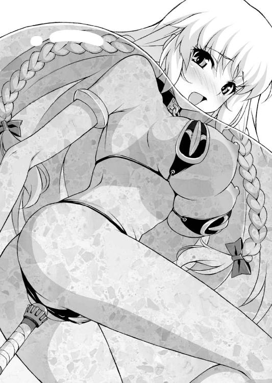
「はぁ、はぁ、はぁ......け、汚らわしい魔物の体液が、肌から染み込んでくる......ッ。この程度、どうということも......ごぶふっ!?」
うっとりと身体を傾けた姫騎士が、突如呼吸困難に襲われてもがく。
スライムの軟体の身体に顔が沈んでしまったのだ。
十数匹の陸上クラゲどもは融合し、直径二メートルもある水風船となってローゼリアをすっかり飲み込んでいる。
「！ !? !! ............ごぼっ、ぷはぁああッッ。あぶ、あふっ、げほ、げへっ」
スライムに溺れた女騎士は必死にもがき、顔だけを体表に突き出す。
必死に呼吸を整えるが、ぶよぶよのゼリーの中で足をすべらせ、また魔物の中に沈む。
（く、苦しいですッッ。息ができない......ふわふわして、あ、足がつかない!?）
魔物の体内で溺れるのは、ちょっとしたホラーだった。
水の中であれば泳ぐこともできるが、弾力のあるスライムの中では思うように手足が動かせず、立っていることすら困難だ。
「がばっ！ けほっ、けほ、ごほっ、ぶわ、ぐふっ」
もがいてもがいてようやく顔を出す。だがほんの少し呼吸をしただけですぐ体勢を崩し、また魔物の中に埋没してしまう。
そんなことを何度も繰り返すうちに、呼吸困難で気が遠くなってくる。
しかもその間も尻穴に突き刺さった魔物の触腕はうねうねと騎士の直腸をえぐり、前の穴を怪しくまさぐってくる。全身の薄皮がじわじわと溶かされて、消化酵素の分泌がいよいよ増えてくる。
（わたくし......本当に大ピンチかも。息ができなくて頭がガンガンする。目の前が朦朧となって、手足にも力が入らない......）
だが、不思議とこの状況に恐怖は感じない。
むしろ酸素欠乏のために意識がふわふわと、宙を浮いているような心持ちだ。
これまでも進んで試練を受けてきたローゼリアだが、これほどの無力感を感じたのは初めてかもしれない。
（しかも最弱のスライムを相手に、手も足も出ないなんて......とても惨め、とっても情けないです......ッ）
そう思いつつも、姫騎士の顔はスライムの中で緩んでいく。
酸欠で失神寸前、苦しいのに、苦しくない。意識は薄れていくが、逆に皮膚が鋭敏になり、身体がどんなふうに感じているのかが鮮明に感じられる。
（わたくし、ずっとこのままなのかしら。魔物の森で人知れず、最弱のスライムに捕らえられたまま、嬲り者にされて......）
ごばっ、と魔物の中で口を開けると大きな気泡がこぼれ出る。
ぶよぶよしたゼリーが口や鼻から入ってきて、ローゼリアはいよいよ呼吸困難に陥って意識が遠のいていく。
それがわかっているのに、どうすることもできない。
（あぁ、息ができない......気が遠くなっていく。なのに、お尻の中でスライムが動いているのだけがわかる。お尻を犯される感覚だけを感じながら、わたくしはいつまでもいつまでも、永遠にこの快楽の中に居続けるのね）
かろうじて棍棒を握っていた右手から、力が抜ける。
（でも......これが試練なのですもの。わたくしの、未熟さ......ゆえに、このような目に遭わされているの............だから自業、自得......ですわ............）
地面をさがしてもがいていた足がだらりと伸びて弛緩する。
瞳がゆっくりと閉じられていき、完全に閉ざされる寸前。尻穴に刺さっていた触腕が「ぐりゅんっっっ！」と激しく回転した。
「ふひぃ！ い、いっ、いぁあッッ。おひ、お尻ッ、おひりぃい〜〜〜ッッッ」
ゼリーの中で美しき骸となりかけていた騎士が、最後の吐息を泡にして吐き出す。と同時に、脳裏は快楽の光に満たされた。
（溶けるっ、全身が、心が溶けちゃうぅううう！ お尻がひくひく震えて止まらないっ、止まらなくて............イッちゃうぅうううう!!）
びくびくびくうううっっ、びゅくんっ、びくん、びくんっっっ。
エクスタシーの痙攣に包まれた女体が、大きく跳ね上がった。
ざばりと軟体ゼリーから身を起こし、「ぷはぁっ」と魔物の身体を吐き出す。
胸いっぱいに甘く新鮮な空気が吸い込まれ、騎士の肺から新鮮な空気が吸収される。
「ふぁああああああッッッ、いくイクいぐぅうぅうううう!!」
アナル陵辱のアクメに支配され、絶叫するローゼリアの心に、突如不思議な声が響く。
『我───汝の力を認めん』
声と共に紐ビキニの破廉恥鎧が赤く輝きだす。
『我はその鎧に封じられし古の守護精霊。死を前にしてもなおひるまず、生きようとする汝の生命力、しかと見届けたものなり』
「はぅううんっ、ん、んふぅうッ。おひりイッちゃう、お、おま○こもぉおおッッ！」
『我は真の強者を主と認め、その者を守護する使命を持つものなり。我は心強き汝を主と認めよう』
「くきゅぅううんっ、おま○こッ、おま○こ感じちゃうぅう〜〜んっっ」
『えーと............あのね、ちょっと』
ただのガラクタと思われていたビキニ鎧はますます輝きを増し、そこに封じられていたという守護精霊の声は荘厳に騎士の心に突き刺さる。
「あぁん、いくイグぅう、きもひいいいっ、いいですぅううう」
『....................................』
身を押し包んだスライムの中で、果てしなく達し続けるローゼリアの痴態を前に、守護精霊はついに黙り込んでしまう。
「あああぁ、す、スライムなんかにッッ！ 最弱モンスターにイカされるぅうッッ」
守護精霊の声は確実に聞こえている。
聞こえているのだが、ローゼの心はすでにエクスタシーの快感に満たされており、怒濤のような愉悦を受け止めるだけで精いっぱいだった。
「お、おしりッ、おま○こも、もっとぐりゅぐりゅされたいぃいい......ッッ！」
『..................も、いーや。使命だけ果たすかんね』
しゅぱぁあああッッッッ。紅蓮の炎のような輝きがビキニ鎧から噴き上がる。
ずっっ、どどどおぉおおおおんんっっっ............！
それは内側からゼリースライムの身体を焼き焦がし、再生不能なまでの細片に爆散させ、そして自らも輝きを失っていく。
「はぁ、はぁ......はぁ、ん............おま○こ、ぉお............」
完全に魔物が生命活動を止めたころ、呆れ返ったような気配だけを残し、ビキニ鎧はぼろぼろと朽ち果てていった。
「ふう、ふぅう......はぁ、はひ、ひぃい............ん」
騎士を取り囲む残骸が、再生する様子はない。
ほぼ全裸と言ってよい女騎士の珠の肌は、ほんの薄皮一枚が溶かされただけ。
表皮の垢が綺麗さっぱり洗い流された女体は、極上のエステでも受けたように神々しく光り輝いている。
（スライムに食べられるのって............ちょっとエッチで、すごくいい気持ち......）
主人を心配した愛馬シュトラウスが迎えに来るまで、ローゼリアは心地よい疲労感を味わいながらまどろんでいたのだった。
第六章 醜悪！ おぞましき魔物の獣欲
彼はもうずっと、誰とも交わっていなかった。
かつての仲間の存在は追憶の彼方。いまは仲間など欲しくもない。腹が空けば獣を狩り、内臓を貪り食った。
人間を襲ったこともあったが、すぐに飽きてしまった。餌としても上質ではないし、何より脆すぎて面白みがない。
中には彼を退治しにやってきた人間もいたが武器を使うまでもなく、彼の拳の下ですぐ血まみれの肉塊になってしまった。
じめじめした洞穴が彼のすみか。日差しの下は好まない。
日暮れと共にのっそりとねぐらを出ると、戯れに巨木を引き裂き、月に吠え、大岩を湖に投げ込んで退屈を紛らわせる。
それ以外にすることも、したいこともなかった───あの日までは。
「ブヒ......何者だ............？」
頭からすっぽりフードを被った人影は、ずいぶん小さかった。
が、すぐに尋常な相手ではないと獣の本能が教える。
彼は牙を剥き出し不機嫌そうに唸る。だが人影は威嚇に臆することもなく、興味深げな視線を投げかける。
「キミなかなか強そうだね。キミの種族はもう少し小柄なはずだけど、いかにもパワーがありそうだ。勇者をおびき出すならそのくらいじゃなくちゃね」
声は、意外なほど若い。
フードの下から現れた顔も目を疑うほど若い、いや幼いと言った方がいいだろう。
若き少年魔王イアン＝ベテルギウスはごつごつと節くれ立った岩のような彼の顔を見ても、さして驚いた様子を見せない。
（ブフゥ......こいつ、気は子どもだが、信じられないほどの力持ってる）
見た目などなんの意味も持たないということを、彼は知っている。
眼前に佇む少年からは、そら恐ろしいほどの魔力を感じる。
彼自身も腕力と生命力には多少の自負がある。その自分が推し量れないくらいの力を、小柄な身体からひしひし感じる。
「ごめん、自己紹介がまだだったね。ボクはイアン。イアン＝ベテルギウス、いちおう、その、魔王をやってるんだ」
「ベテルギウス......」
魔王の名は知っている。幾多の強力な魔物を従え、大軍団を率いていたが、ずいぶん昔に逝去したと聞いた。
魔王の跡取りというわけか───それならこの力も頷けるというものだ。
「オレに、ナんのヨウ、だ」
言葉を発したのはずいぶん久しぶりなので、舌がうまく回らない。
すごみをきかせたつもりだが、少年はくりっと愛らしい瞳を動かしただけ。
（なかなかいい度胸をしている。ブヒッ、魔王の威光を笠に着て、オレを従わせようというのでもないらしいが）
「キミに命令するつもりはないよ。そうだね、キミみたいな強い魔物をスカウトしたいっていう気持ちはあるかな」
大胆な物言いに、彼は少し興味を惹かれ牙を収める。
さりげなく彼のプライドをくすぐりつつ、決して卑屈ではないのも面白い。
「ボクは魔王を継いだばかりでね、もっと仲間を増やしたいと思ってる。人間の勇者と戦ったりして、魔王の名を広めたいんだ」
幼き魔王の言葉に、獣は喉の奥でぐふぐふと笑った。
「ブヒヒッ、勇者ダと？ 人間はスグ壊れル、戦うニモ、値しない」
これまで殺してきた剣士や騎士を思い出しながら、彼は嘲笑する。
人間の間でどれほど強さを誇ろうとも、魔物の前では蟷螂の斧にすらなりえない。彼自身、人間の剣で傷を負ったことなどただの一度もないのだ。
「ブフフゥ......オレと互角に戦える人間がいると言うのなら、戦ってみたいモノダ。それが人間でも───魔物でも構わないゾ」
岩を掴んで拳を握りしめると、肩の筋肉がもりりっと膨れ上がる。
牛を生きたまま引きちぎることのできる怪力、彼の拳を食らって生きていられる人間などいるはずがない。
彼の半分ほどの体格もない少年魔王は、ぱちぱちと手を鳴らす。
「すごい、すごい。そのゲンコツを振り回されたら、人間はひとたまりもないね。けど、勇者はどうだかわからないよ」
少年は不敵にも彼を挑発する。
「魔王たるもの、勇者を倒さないと格好がつかないからね。だからキミに暴れてもらって、恐ろしい魔物の噂を広めて欲しいんだ」
「............オレに、勇者をおびき出す餌になれと言うのカ」
「餌にしては相当消化に悪そうだけどね」
くすくすと笑う少年に、獣も釣られてブヒブヒと笑いそうになる。
こんな気分になったのは久しぶりのことだ。これまで彼に向けられる視線は恐怖に怯え、嫌悪に彩られたものだった。
「ところで、ここはずいぶん寂しいところみたいだけど、キミの他に仲間はいないの？」
「仲間など............必要ない」
めしゃっ、と手の中で岩が粉々に砕けた。
「ブモォオオオオッッッ!! 若き魔王よ、お前の目論見に乗ってやろう。オレのことはキバと呼ぶがイイ！」
ナイフのような牙をぞろりと覗かせ、彼───身の丈二メートルを優に越す巨大なイボイノシシが月夜に吼えた。
「これは......ひどいですね」
牧草地に撒き散らされた鮮血の跡に、女騎士は眉をひそめる。
陰惨な殺戮現場に牧場主はくずおれ、ぼろぼろと大粒の涙を流して慟哭する。
「うぅうう、ちくしょう、チクショウ......あのブタ野郎、ぜってえ許せねえ。おらの、おらの可愛いジョセフィーヌを」
「豚の化け物、ですか？」
騎士の問いに傍らの牧童が青ざめた顔を何度も縦に振る。
「豚っていうか、あんなでっけえイボイノシシは見たこともねえだ。身体中ゴツゴツして、二本の足で歩いてただよ」
「あんな醜い化け物を見るのはわっしも初めてですだよ、騎士さま」
かなり高齢らしい村長も身を震わせ恐怖におののく。
「なるほど、間違いなく魔物ですね」
「き、騎士さまぁあっ。ジョセフィーヌの仇を討ってくだせえまし！ おらが、どれだけジョセフィーヌを愛していたか......うぉおおんっ」
牧場主の悲痛な訴えに村長や村人たちも口々に懇願する。
平和な酪農の村を襲った突然の災厄。魔物はたった一匹とはいえ、かなり巨大でその上狂暴な性質のようだ。
「もちろんですわ。民を守るのが騎士の務め、ましてか弱い女性を手にかける血に飢えた怪物は、一刻も早く退治しなければなりません」
イボイノシシの怪物は「ジョセフィーヌ」を手にかけ、その骸を持ち去っていったという。人の肉の味を覚えた魔物はより凶悪化するのが常だ。第二第三の犠牲者が出る前に、片をつけねばならない。
「まあ、村人に犠牲者が出なかったのが不幸中の幸いですだよ」
「は？ いえ、けれどジョセフィーヌさんという方が魔物の犠牲になったのでは」
思いもかけない村長の言葉に、ローゼリアはきょとんとする。
「ジョセフィーヌは乳牛コンクールで金賞を取った最高の牝牛ですだよ」
「は、はぁ......牛さん、でしたか」
「うぉおおおっっ、ジョセッ、フィ──────ヌ〜〜〜！」
ちょっぴり拍子抜けしたものの、涙に暮れる男を見て思い直す。きっと愛情込めて育てた自慢の牛だったのだろう。
「やつはこう言いました。オレの名はキバ、魔王ベテルギウスの命により人間に恐怖と絶望を与えに来た、と......」
「魔王!? 確かにそう言ったのですね」
村長の話によると、キバと名乗る魔物は近隣の村にも現れ、家畜を殺したり家屋を破壊したりしているらしい。
そしてどの村でも魔王の使いを名乗り、さらなる供物を要求しているようだ。
「近隣でもこれだけの被害が出ているのに、騎士団は何をしているのですか。訴え出なかったのですか？」
「もちろん訴えました。ですが人的被害がない上に、魔王の手下など馬鹿馬鹿しいとまともに取りあってもらえず......」
村長はほとほと弱り果てた顔で肩を落とす。
「しょうがねえだよ、村長。魔王の手下が襲ってきただなんて、誰も信用しねえよ。だいたい、こんな村を襲ってどうしようってんだか」
騎士としては認めたくないことだが、村人がそう言うのも無理はない。
魔王ベテルギウスといえば伝説の魔王。
王国全土を震え上がらせていた魔王軍の尖兵が、こんなのどかな村を襲ってなんのメリットがあるのか。
（騎士団の方々も盗賊や野盗、人買いといった悪党を取り締まるのにお忙しいでしょうし......けれどわたくしは知っています。魔王が復活していることを！）
魔王軍を騙っていた盗賊を根絶やしにしたマントの男。あの強大で残忍な力を、ローゼリアは目の当たりにしている。
イボイノシシの魔物とやらが本当に魔王の命で動いている可能性は十分にある。
（その魔物は魔王に近づく手がかりになるかもしれないですわ）
「わかりました、その魔物はわたくしが退治します」
姫騎士の言葉に、おおと村人たちの顔が明るくなる。が、すぐにうなだれる。
「いくら騎士さまとはいえ、たった一人で怪物を相手にするなんて無茶だべや......」
「んだ、騎士さまつっても女だしなぁ」
「かといって、おらたちが戦うのはまっぴらゴメンだべ」
と、正直だが無礼な村人は、騎士の華奢な肢体を無遠慮に眺める。ビキニ鎧を失った姫騎士は、親切な商人組合から返却された紅の甲冑をまとっている。
「ここは一つ、騎士さまのお力で騎士団の兵士を連れてきてくれんもんかの」
適当な落としどころを見つけた村人たちは、「それがええ、それがええ」とやんやと手を打って胸を撫で下ろす。
（......やはり女の細腕、修行中の身では信用されないのね............）
ともあれ親書を書くために村人と共に村長の家に向かう。
「ところで怪物への供物はどうすべえ、牛をもう一頭くらい差し出すべえか？」
「おらの牧場からは出さねえぞ！ これ以上めんこい牛を犠牲にゃできねえ」
ジョセフィーヌを奪われた牧場主が悲痛な声を上げる。
「じゃあ、ブタはどうだ？ 相手は猪だで、牝の豚でも差し出せば気に入るんでねえべか」
「そりゃええ。しょせん相手は魔物、牝ブタ相手に盛りがついたりしてな」
騎士団への親書をしたためながら、村人たちの会話を聞くともなしに聞いていた姫騎士が、ぴくんと肩を震わせる。
（ブタ......牝ブタ............？）
「いい手かもしれねえな。やっこさん、牝ブタに満足して村を襲わなくなるかも」
「ブタとつがいになって怪物の子どもが産まれたらどうするよ？」
「そりゃあ大変だぁ、ぐひゃひゃひゃひゃ」
（牝ブタ相手に......魔物とつがいに............）
ローゼの脳裏で、巨大なイボイノシシの化け物が牝ブタにのしかかって腰を振り立てているおぞましい光景がグルグルと回り始める。
牝ブタの股間には、巨大な牡の凶器が突き刺さり、激しく出し入れされている。
（わたくし、どうしてしまったのかしら。なんだか、胸が熱い......）
「み、みなさんっ。あのッ、ぜひ準備して頂きたいものがあるのですが」
気がつけば姫騎士はそう叫んでいた。
凶悪な怪物への供物が、急ごしらえの祭壇に山積みにされていた。
干し肉の塊に村の特産であるチーズ、生卵に果物、黒パンなどの食料品に、仕上げとばかりに生きた山羊を杭にくくりつける。
「いくら大食らいの怪物でも、これだけあれば満足すべえ」
「ぐずぐずしてるとブタ野郎が襲ってくるとも限らねえ、騎士さま、早く村に帰るべ」
「ところで、このブタの毛皮はいったい何に使うんだべえ？」
準備した食べ物をすべて積んでしまうと、村人はローゼリアを促す。
「いえ、わたくしのことはお気になさらず、先にお戻り下さい」
渋る村人を説き伏せて先に帰らせると、姫騎士は豚の毛皮をすっぽりと被る。
（ふふふ、この格好なら魔物も油断するはず......まさか正義の騎士が汚らしい豚に身をやつしているなど、愚かな魔物は夢にも思わないでしょう）
我ながら己の計略が誇らしく、豚毛皮を被ったままムフフと会心の笑みを漏らす。
（もう日が暮れる。そろそろ現れるかしら）
繋がれた山羊が不安げにンメンメと鳴くが、ローゼリアの胸は期待に震える。
（わたくしったら、魔物を油断させるためとはいえ、こんな動物の皮を被っているだなんて......この辱め、まさに試練ですわ）
メス豚のふりをしている自分、そう考えるだけでじわじわと羞恥心が込み上げ、試練の予感に身体の奥が疼く。
（魔物を騙すためには、身も心も豚にならないと気づかれてしまう。そう、わたくしは豚、怪物に捧げられた哀れな生け贄......）
そう思い込むことで、魔物はローゼリアを本当の牝豚と思い込むかもしれない。
この毛皮はなかなか色つやがよく、かなりの美豚に違いない。魔物は毛皮を被ったローゼリアに発情するかもしれない。
（そうなったらむしろ好機だわ。魔物が発情して警戒心をなくすまで、豚さんの真似を続けないと）
岩場は薄闇に翳り、騎士の隣で繋がれた山羊が不意に暴れ始める。
縄が首に食い込んでも暴れ続けているのは、怪物の気配を感じたのか。
（微かに血の匂い、それに生臭い獣の匂い......だんだん近づいてきている）
気配の主は祭壇の近くに人影がないことを確かめると、ざっざっと岩場を踏みしめて近づいてきた。
山羊は狂ったように跳ね回り、恐怖に怯えた声で鳴き続ける。
豚に扮した騎士は警戒されないよう、動かない。と、いきなり殺気が膨れ上がる。
「ンメェエエ！ ンメ、グッ......ゲベェエエエエエエエッッ」
ばぎっ、ぼきっ。骨の砕ける無気味な音がして、山羊は一瞬で絶命した。
毛皮をそっと押し上げると、立派な牡山羊が宙吊りにされていた。
首はねじ曲げられ、後ろ足がびく、びくっと痙攣している。
（人影───いえ、人にしては巨大すぎます）
身の丈は三メートル近くあるだろう。頭部が異常に肥大して、ぶほぶほと生臭い息を蒸気のように噴き出している。
（これが、イボイノシシの魔物......確かに並はずれた強さを感じるわ）
上半身に簡素な鎧をまとい、腰には巨大な剣を下げているようだ。
しかし武装などなくとも太い腕と牙は恐ろしい凶器そのもの。この巨体ならば牛を掴んで引き裂くこともたやすいだろう。
（猿人など比べものにならない強さを感じますわ）
べきべき......ぐちゃっ、くちゃ、じゅるる......。
暗がりの中で恐ろしい音が響く。怪物が山羊の首筋に食らいつき、血肉を食らっているのだ。辺りに新鮮な血潮の匂いが漂う。
「ブフゥ......このあいだの牝牛より味は悪いナ」
ぶっ、と山羊の骨を吐き出して、猪の怪物は一人ごちた。
唸り声こそ獰猛だが、その声には確かな知性が感じられる。
怪物は山羊の腹に顔を突っ込んで、くちゃくちゃと内臓を貪り、鮮血を啜って、げふうと品のないげっぷを漏らした。
（しょせんは卑しい魔物、マナーを知りませんわね）
そのとき、月を隠していた雲が風に流れ、さあっと音のしそうな月明かりが岩場を照らした。
（まあ............）
毛皮の下から魔物の様子を窺っていたローゼリアは、思わず息を呑んだ。
魔物というのは概して醜いものだが、この怪物は姫騎士も呆れるほど醜悪な外見をしていたのだ。
文字通りの猪首は一抱えもありそうで、吹き出物ができたように無数のイボが突き出ている。顔一面を彩る毛は針のように鋭く、両の目は黄色く濁り、目やにがびっしりこびりついている。
（なんて鋭く長い牙、舌が血にまみれて......それに身体中が筋肉でゴツゴツしていて、いかにも狂暴そうですわね）
知性はあっても、情や優しさなどはとても期待できそうもない。
（それに、この匂いときたら！ 水浴びの一つもしないのかしら）
ただ不潔なだけではこの異臭は生まれない。
牡の獣が持つ独特の臭腺が発する匂いは、距離を置いても鼻が曲がりそうだ。
ローゼリアが最初に感じたのは、この獣臭のようだ。
（こんな醜悪で不潔で下品な魔物でも、同じ魔物の目には意外と格好良く見えていたりするのかしら......？）
種族が違えば美的感覚も違う。
人間には醜く見えても、「あのイボイボがセクシー」とか「男らしい匂いにくらくらしちゃう」などと牝の魔物に思われているのかもしれない。
（それにいまのわたくしは同じ豚の仲間。牝豚になりきらなきゃ）
そう思い直したとき、猪の怪物はローゼの存在に気づいた。
さっと顔を伏せるが、強烈な視線を感じ、騎士の鼓動が高鳴る。
「ブヒ......オレが猪の魔物と知って、ご機嫌でも取るつもりカ。確かに野豚はオレの眷属には違いないが」
手にしていた山羊の死骸をどさりと放り投げ、近づいてくる。
毛皮にはまだ牝豚の匂いが残っているようで、「中身」に気づいた様子はない。
「どうした、いやにおとなしいナ。そんなにオレが恐ろしいか」
そう言って愉快そうにぐふぐふと臭い息を吐く。ローゼリアを完全に野豚だと思い込んでいるようだと思い、一安心する。
「心配するな......オレ、眷属を手にかけたりはしない。ブフムゥ、それによく見るといい毛並みをしているじゃないか」
グローブのような手が毛皮の背中をそっと撫でる。
穏やかな手つきを意外に思いつつ、疑われないよう、牝豚になりきったつもりでおそるおそる鼻を鳴らしてみる。
「ぶほ、ぶほっ」
（わたくしは牝豚、わたくしはただの豚、ただの卑しいケダモノ......）
なんともお粗末なモノマネだと思ったが、毛皮でくぐもっているせいか、魔物は疑った様子もなくローゼの背中を撫で続ける。
「ぶぅ、ぶほ、ぶふぅ〜っ」
あたかも背中を撫でられて喜んでいるふうを装って、ローゼリアは少しく身体を揺すり、甘えるような声で鳴いてみる。
醜いイボイノシシはその声が気に入ったのか、ヤニの絡んだようなだみ声でぐふぐふと無気味に笑ってみせる。
「グブフフ、お前は存外、剛胆だな。オレになついたカ？ それともオレの強さを感じ取って、服従しようと言うのか」
そうかそうか、と上機嫌で吼える魔猪は、やおら転がっていた岩を握ってローゼの鼻先に突きつける。
ぐぐっ、と腕の筋肉が盛り上がったかと思った次の瞬間、人の頭ほどもある岩は泥団子のように粉々に砕け散った。恐るべき怪力だ。
「この通り、オレは強い。そこらの魔物など相手にもならヌ。あの魔王がオレに目をつけたのも当然......さすがにあの魔力にはおいそれと手は出せないがナ」
（魔王───！ やはりこいつは、魔王の命令で動いていたのね。なんとしてもこの魔物から、魔王の手がかりを掴まないと）
幸い、魔猪は騎士が潜んでいることにまったく気づいていない。
（もっと牝豚として媚を売った方がいい......ですわよね。ま、魔王の情報を聞き出すためですものね。わたくしは牝豚、卑しいケダモノ......あぁ恥ずかしくて、身体が熱くなってきそうですわ）
と、怪物がいきなりローゼの顎の下に手を差し入れようとしたので、騎士はびくりと身をこわばらせた。
どうやら牝豚の喉元をくすぐってやろうとしたようだが、毛皮の下を触られてしまったら一発で正体がばれてしまう。やむを得ない、と姫騎士は差し入れられた怪物の太い指先をぺちゃぺちゃと舌で舐め回す。
（ううう、山羊の血でべっとり濡れて気持ち悪い......いいえ我慢よ、なんとしても本物の牝豚だと勘違いさせないと）
ぺちゃぺちゃ、ぴちゃぴちゃ。毛むくじゃらの指先をねぶり、舌の先でちろちろとくすぐると、魔物はぐふぐふと気持ちよさげな声を上げる。
わたくしは牝豚、わたくしは牝豚と心の中で唱えながら魔物の指先をねぶっていると、本当に自分がただの卑しい牝豚になったような気がして、そんな惨めな自分に背筋がゾクゾクするのを抑えられない。
（いいえっ！ この胸のドキドキは、騎士の誇りが傷つけられた怒りなのですわ。騎士にあるまじきはしたない真似も、魔物を油断させるため......！ いまはこの屈辱に耐え忍んで、牝豚になりきるのですわッッ!!）
ローゼリアは一匹の牝豚になりきって、一心に魔物の指をねぶり続ける。
（牝は強い牡に惹かれるもの、きっとこの醜くも屈強な怪物に心酔して、この獣の牝になることを望むはず）
太い指をくわえてちゅぼちゅぼ吸い上げると、ちんぽをしゃぶらされたときのことを思い出さずにはいられない。獣の指はそれほど太く、そして節くれ立っていていかにもケダモノのちんぽのようだ。
（この魔物もしょせんは汚らわしい牡、いまに発情してちんぽを大きくするかもしれません。こんなに大きな身体をしていては、きっとちんぽも並はずれて巨大に違いないわ。魔物にふさわしい、凶悪で狂暴で邪悪なちんぽ......）
オスはメスを見ると見境なく興奮し、ちんぽを大きく膨らませる。
欲望のままに振る舞う魔物ならなおのこと、人目も憚らずローゼリアに欲情して勃起したものをねじ込んで交尾をしようとするかもしれない。
（あぁ、なんと罪深いケダモノたちでしょう！ こんな野外で恥ずかしげもなく欲情して、わたくしの乙女の証に醜く節くれ立った、けた外れに巨大なちんぽをねじ込んできたらどうしましょう）
じわぁっ、と足のつけ根に熱いものが滲む。
誰にも許したことのない乙女の処女聖地が、魔物のちんぽで汚されるさまを妄想するだけで頭が沸騰し、息が荒くなってくる。
魔物に犯されたいわけではない、それこそが真の試練なのだと言い訳しつつ、ほんの少し太腿をよじっただけで、濡れた花びらが擦れ、ひりひりと痛みのような快感が股間から広がっていく。
（だめ、いけない。人間だってばれないようにもっと集中しなくては）
ちゅっ、ちゅぱ、れろ、れろ......股間からの刺激を頭から追い出そうと、姫騎士は懸命に魔猪の指を一本ずつ丁寧にねぶり回す。
（あぁ臭い、汚い、吐き気がしそう。でも、思いきって奥まで飲み込まなきゃ......うっ、気持ち悪い。まるで指にお口を犯されているよう）
豚の毛皮を被って、陰茎並の太さと長さのある指をしゃぶらされている自分が恥ずかしい。恥ずかしいのにどんどん肌が熱くなる。
花弁からはじっとりと熱い蜜が滲み、下着に大きな染みができているのが自分でもはっきりわかる。これは「騎士としての試練」を受けている証なのだと、懸命に自分に言い聞かせる。
（お、お股からお汁が垂れてきちゃう......！ 触ってもいないのに、どうして？）
自分で自分の反応に驚いてしまうが、股から滲む蜜は止まることなく、あとからあとから溢れてくる。
すっかり暗くなったせいで嗅覚が敏感になっているのか、魔物の獣臭の中に乙女の蜜の香りが入り混じり、妖しい雰囲気を醸し出す。その匂いに、猪の魔獣が気づかないわけがない。
「ブフゥウ。お前、発情しているのか。だがそれにしてモ......うむぅ」
むくっ......むくっ、もりもりっ。
魔物の下半身は太い毛に覆われている。一抱えもありそうな太い下肢のつけ根から、肉の柱が毛の中からせり上がってきた。
（こ、これが、ちんぽなの？ し、信じられない、さすが魔物ですわ！）
それは陰茎と呼ぶのもためらわれるほどの超巨根。
両手の指が回りきらないほどの太さ、長さは優に大人の腕サイズ。
幹に浮き上がった血管だけで指の太さほどもあり、それがどっくんどっくんと脈打って海綿体を充血させている。
（先端が金属のように尖っていて、鋭い錐のよう！ 凶悪です狂暴です、禁断のクレイジードリルが天を突きますわ〜〜〜）
猪のそれは、先端が渦を巻くように細く尖っている。
てらてらとてかり輝く先端は薄い板くらい軽くぶち抜けそうな、見るからに凶器としか言いようのない外見をしている。
（こんなものでお股をぶち抜かれたら、わ、わたくし............ごくりッッ）
女としての恐怖を覚えると共に、なぜか鼓動が速くなる。
しかも魔物は他の誰でもない、豚の毛皮を被った姫騎士に対して欲情している。猛々しい肉の凶器で処女膜を引き裂き、膣を貫こうというのだ。
恐怖を感じつつも、なぜか騎士の股間がじんと疼く。
「ブヒ......同族のメスとまぐわったのは、もう何十年前か......オレにまだこんな感情が残っていたとは意外ダ。まったく意外ダ」
魔獣は何度も「意外だ」とつぶやきながら、大きな手で股ぐらの巨根を握り、がしゅがしゅとそれをしごく。
獣の息がごふごふと荒くなり、ねじくれた先端から透明な液体が滲み出て、つんと鼻を刺すような臭気が漂う。
目の前で為されるケダモノの手淫にローゼリアは目を奪われてしまう。
（す、すごいです。あんなに激しく、でもとても気持ちよさそう）
自身も自慰を経験しただけに、魔物の快感は騎士にも理解できた。
醜悪な魔物風情が、獣の皮を被った自分に欲情して自分の陰茎を必死にしごいている、その光景は滑稽だがひたむきだ。
「ぶぅ、ぶふぅ〜」
ローゼは豚のように鳴きながら鼻面を魔物の股間に擦りつけた。
（うっ、臭い......ッッ！ で、でも、本物の牝豚ならきっとこうするでしょうし......こ、この苦しさを乗り越えるのよ......うぐぐぐっっ！）
魔猪はローゼの頭を撫でながら陰茎をしごき立て、フィニッシュに近づいていく。
「ブヒヒィイイッッ！ お前、こんなオレを見ても蔑みも、恐がりもしないノカ。うおっ、お、オレは......ブモォオオッッ」
「ぶぎゅぅうっ!?」
びゅばあっ！ どぷどぷっ、どびゅうっ、びゅっ、びゅばぁあっ。
熱湯の塊がいきなり顔面にぶち当たり、騎士は期せずして豚のような声を漏らす。
（あっ、熱いッッ。固体みたいに濃厚な塊が、まるでシャワーのように......！）
どれほどの精を溜め込んでいたのか、獣の陰茎からはとめどなく欲望の汁が迸り、ローゼリアの顔や毛皮に撒き散らされる。
（粘っこくてどろどろ......それに鼻が曲がりそうな匂いで、頭がくらくらしてきます......ああ、まだ止まらないの？）
垂れ落ちもしない粘度を持ったザーメンで、目も開けられない。
顔に注がれる熱い塊の発射はいつまでも続き、ようやく終わったころに獣は臭い息を盛大に漏らした。
こっそり指で目の周りの粘液をこそぎ、そっと薄目を開けて呆れた。
魔物の超巨根は隆々と天を仰ぎ、これっぽっちも萎えていないのだ。
（すごく、びくびくって震えてます......あっ？）
ゆらあり......魔獣が立ち上がり、ローゼリアの背後に回り込んだ。
息が荒く、口からは強烈な口臭、股間からは生臭い牡液の匂いを撒き散らしながら、やおら姫騎士の尻に鼻面を近づけてくる。
「ひゃあ」と声が出そうになるのを間一髪でこらえる。
「変わった匂いだが、発情しているのは間違いナイな。オレの子種を浴びて、匂いがきつくなっているゾ、ブヒヒッ」
ぐふぐふと満足そうにつぶやく魔物に、ローゼリアはハッとした。
（いけないッッ!? お股を探られたりしたら、本物の豚じゃないってばれてしまうわ。し、下着や甲冑に気づかれないようにしなくては......ッッ！）
さっきは指をねぶって誤魔化したが、毛皮の下を触られたらばれてしまう。
まだ試練の途中、しかも魔王の情報はなんにも得られていないのだ。
ローゼリアは音もなく短剣を抜くと、下着を切り裂いた。股間が丸裸になると同時に、魔物が鼻面を毛皮の下に押し込んできた。
（ふわぁああっ、い、息が当たってるぅう）
「ブヒッ、とうにメスの匂いなど忘れていたが......これは、なんという芳しい匂いダ。果物のように甘く香っている」
（ひゃっ!?）
れろんっと生暖かいものが花弁の上を通り過ぎる。
ぺちょぺちょ、ぴちゃぴちゃとせわしなく魔物の舌がヴァギナの上で躍り、肉ひだを舌先でなぞるようにくすぐってくる。
（お股舐められてる......やだ、すごく優し、いえ、汚らわしいッ、ケダモノッッ......）
凶悪そうな外見からは想像もできない繊細な動きで、魔猪は乙女の肉花びらを縦横にねぶり続ける。
肉穴の奥からじっとり滲み出る蜜をすくい取り、喉を鳴らして飲み込む。そのいやらしいねぶり方に反応してしまう自分の身体のはしたなさに、姫騎士は身を震わせわななかずにはいられない。
（こ、これしきの試練に耐えられないようでは、魔王を倒すなんて夢のまた夢だわ。でも、なんてねちっこい舌使いかしら）
ときおり舌先を膣穴に潜らせてきたりするものの、獣の舌使いは決して乱暴なものではない。同族の豚に対しての心配りなのか、これなら盗賊の男たちの方がよほど荒っぽくローゼの身体を弄んでいた。
だが醜いケダモノに優しくされている、ということは完全に牝豚扱されているということでもあり、素直には喜べない。
「メスのま○こはこんなにも甘いモノだったか。ブフッ、それにひどく毛が少ないな、まるで人間のようダ」
不意にそんなことを言われてどきりとする。魔猪はじゅるりと舌なめずりをして、再びローゼリアの花びらをねぶり回す。
「もしやお前はただの家畜ではなく、人間の相手をさせられていたのではないか。グフゥウ、人は時にそのような変態的なことをすると聞く」
「ぶ、ぶひぃ」
「我ら猪の眷属が、人間どもの貧相なマラでは満足などできぬだろう。それだけ蜜を垂らして、お前ももう欲しくてたまらぬハズ......ブォオンッ！ オレが本物の獣のまぐわいというものを味わわせてやろウッ」
そう言うや、のっそりと魔物が身を起こす気配が感じられた。
牝豚の毛皮をかぶったローゼリアは四つんばい、背後に立った魔猪は騎士の腰を抱えるようにして、腰を突き出してくる。
（こ、こんな、動物みたいな格好で、わたくし本当に犯される!? そ、それは......いっそこの隙をついて一気に倒した方が）
ごりっ、と硬いものが乙女の入り口に押しつけられる。
ぐぐっと圧迫感を感じると同時に、「みりりっ」と入り口が押し広げられ、猛烈な痛みが走る。姫騎士は叫びを懸命にこらえる。
（お、おっきい......ッッ！ ああ、わたくしの初めてがッッ！ 人間の殿方どころか、醜い豚の魔物のちんぽで突き破られるぅうッッ!!）
ぞくぞくぞくっ。
魔物に犯される嫌悪と共に、得体の知れない興奮が込み上げる。
「ぶきぃい、ぶぅ、ぶぎひぃいい」
「ブフゥウ、先を入れるだけでも一苦労ダ。だがこれがマラの味ダゾッ」
（こ、この痛みと辱めを耐え抜くのが、本当の試練に......あぁあっ）
みしっ、めりめりっ。文字通り身を引き裂かれる苦痛に耐えているうちにも、魔巨根は少しずつ胎内に侵入してくる。
尖った獣ペニスがじりじりと肉穴を拡張し、太い肉の幹が押し込まれる。処女膜を簡単に突き破り、姫騎士の純潔穴はケダモノの肉で満たされていく。
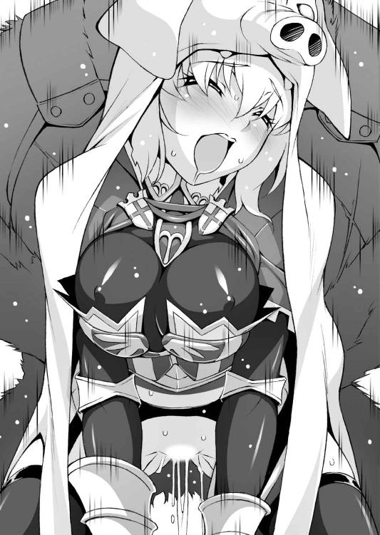
「ぐ、ぶぃい......ぶふぅ、ぷぎひぃい」
「ブヒゥウ、もう少し辛抱してクレ。お前の穴は窮屈なだけでなく、しなやかで心地よい。熱い蜜でとろけそウだ」
「ぶぅ......ぶひぅう」
ちんぽは巨大だが、魔物の腰使いはちっとも乱暴ではない。
それどころかローゼを気遣うように最小限の動きで、じっくりと時間をかけてメス穴をほぐそうとしている。
（ちゃんと相手を気遣って加減するなんて、魔物のクセにすごくいい人!? っていうか魔物。ああもう、何がなんだかわかりませんわっ）
それでも魔陰茎は巨大すぎ、腰を揺するたびに膣がぎちぎち軋む。
圧倒的なボリュームに貫かれている実感で頭がくらくらしそうだ。しかも相手はローゼを牝豚と思い込んだ醜い魔物なのだ。
（お、おま○こぐちゃぐちゃにされてるぅっ。ちんぽすごいぃっ）
「ぶひぃんっ、ぶぅ、ぶふぅ〜〜っ」
「ブヒィッ、すごい締めつけだ。お前も感じてくれているノカ。お、オレみたいな醜い魔物に犯さレテ............」
少しずつ、ストロークが大きくなって先端が子宮の入り口をノックする。
（おっ、お腹の中ぐちゃぐちゃにされてるッッ！ 魔物ちんぽで壊されるぅううッッ）
思わず吐き気が込み上げるが、ローゼリアはむしろ自分から腰を突き出して、怪物の茎をくわえ込んだ。
「ブモッ、なんて具合のいいま○こダ！ 久しく忘れていた、これがメスの味......ッ」
我慢できなくなったのか、獣は咆吼しながら激しくローゼリアの穴をえぐり、深々と縫い止める。
膣肉がまた悲鳴を上げるが、姫騎士は両下肢を突っ張ってしっかりと魔物ペニスを飲み込んで離さない。ねじくれて尖った先端がずぬりと子宮口に突き刺さり、下腹をぼごんと突き上げる。
「ぶきひぃいいっ！ ぶぎぃ、ぎひぃいいんっっ」
「ブフゥウ、スマン、だが止められヌッ。ま○こ肉が吸いついてきて......も、もう限界だ、このままっ、は、孕ませてやるゾォッ」
（魔物のちんぽのお汁、お腹に出されちゃう......出されちゃうの!?）
「ブモォオオオオオ！」
ずしぃい......んんっっ。
骨盤が砕けるかと思うほどの衝撃、「ぼご、ぼごっ」と下腹が膨らんでいく。
びゅるるッッ、どぷっ、どくどくっっ。魔豚の鈴口は完全に子宮に入り込み、子宮に直接白濁を注ぎ込んでくる。
その量も半端ではなく、騎士の腹を臨月のように膨らませていく。その量と熱湯のような熱さに、ローゼリアの脳みそが沸騰する。
（あぁああっっ、魔物のちんぽ汁で孕まされるぅううっっ。怪物の子ども、身ごもっちゃうぅうううんんッッッッ）
「ぷぎひぃいいいいいッッッッ！」
処女膜を特大ペニスで貫かれ、純潔を失ったばかりの姫騎士は、溢れんばかりの子種を注ぎ込まれながらエクスタシーに達した。
地面にひれ伏して尻を高く突き上げ、最後の一滴まで子宮で受け止める。
半開きの口から舌を突き出し、だらしない愉悦の声を漏らしながら、ローゼの意識は真っ白な光に飲み込まれていった。
（気持ち、いい............魔物ちんぽ、おっきなちんぽで、イッちゃう......ッッッ）
ずるるるっ、と萎れた陰茎が引き抜かれると、どどっと滝のような勢いでザーメンがこぼれ落ちる。
見る間に下腹が凹んでいき、騎士は「ほぅう......っ」と大きく息を吐き出した。
（わたくし、醜悪な魔物に犯されて......お腹の中に精液を出されてしまった............）
巨根に無理矢理拡張された膣穴が、まだじんじんするが、痛くはない。
それよりもエクスタシーの余韻で、頭の中はまだピンク色に染まっている。
（も、もしも魔物の子どもを孕んでしまったらどうしたらいいの!? 怪物の赤ちゃんをお腹に宿して、半人半豚の子どもを生んでしまったら......ッッ）
考えるだにおぞましい想像なのに、なぜか背筋がぞくぞくと興奮に痺れる。そのため、豚の毛皮がずれ落ちかけていることにローゼは気づいていない。
巨大な怪物も、どっかり岩場に腰を下ろして空を見上げていた。
「ブフゥウ、乱暴にしてすまなかったナ。交尾するのは本当に久しぶりだったんだ。オレは見ての通りに醜イ。腕っ節だけが取り柄で、仲間内でも目を背けられるほど。つがいになってくれる牝などただの一匹もいなカッタ」
（あら。魔物にもそんなふうに見られていましたのね。ちょっとお気の毒）
「いや、たった一度だけオレを誘ってきた牝がいた。話のネタにオレをからかっていたんダロウ。だが、オレはすっかり舞い上がってしまってナァ......力の限りにその牝を犯しまくッテ、そいつを半死半生の目に遭わせてしまった」
（............よ、よく無事で済みましたわ、わたくし）
月を見上げ、己の「非モテ話」を語る怪物の声は、ますます哀切を帯びたものになっていく。
「そレカラ、オレは同族を傷つける外道として避けられるようになった。だからこんな荒れ果てた岩場に独りで住んでいたんダ。誰とも交わらず、それで平気だと自分に言い聞かせてきた」
（......魔物さん............）
「そうだ、オレは自分を誤魔化していたンダ！ お前に出会って、それがわかった。オレは、オレは......ずっと寂しかったンダ......！」
ぐぉおおおん、と魔獣が吼えた。
その咆吼は孤独に震える泣き声そのものにローゼリアには聞こえた。
「だが、お前はオレの醜い容貌を見ても恐れたりしなかっタ。それどころか発情し、オレを受け入れてくれた。お前は魔物ではない、ただの土豚だが誰ヨリモ情愛深い女だ。オレの女神だ」
（あっ、ちんぽが、ま、また大きくなってきましたわ）
「お前さえよければ、この先もずっとオレの傍にいてクレないか。そうすればオレはもう孤独に苦しめられることはないだろう。お前のことはオレが守ってヤル。オレとつがいになってくれ」
（ふぇえっ!? こ、これはもしかしてプロポーズ？ ということはこの豚がわたくしの旦那さまで、わたくしはうれしハズカシお嫁さん！ し、し、新婚旅行はやはりア・ターミ地方の温泉宿が定番でしょうか!?）
相手が自分を牝豚だと思い込んでいることも忘れ、ローゼの脳裏に珍妙な未来予想図が広がっていく。
たとえ醜い魔物でも、彼は真剣そのものだ。その一途な想いに偽りで応えてはいけない、とローゼリアは思わずにいられない。
「オレの願いを聞いてくれルと言うのなら、いま一度オレと交尾をしテくれ。お前の情け深いま○こに、オレのマラを」
「申し訳ありません。わたくしはあなたと添い遂げることはできませんわ」
ばさりと毛皮を脱ぎ捨てた甲冑姿の女騎士に、魔猪の目がまん丸になった。
「な......おま、エ............な、に、人間の、女？」
「あなたの求愛はどんな騎士の誓いよりも誠実で、真摯で、立派なものでしたわ。けれど、だからこそわたくしはあなたの傍に寄り添うことはできませんの」
「いや、いったいナニがどう、え、エエッ？」
完全に動転している怪物に、姫騎士はどこまでも真面目に返答を続ける。
「見ての通りわたくしは人間、正義の下に剣を振るう騎士です。なんの罪もない村人を苦しめるあなたを成敗するのがわたくしの定め。けれど、あなたのその立派なちんぽにはしたなくもよがってしまったのもまた事実」
ローゼリアの口調、そして動きが徐々に芝居がかってくる。
「あなたは魔物、わたくしは騎士。だけどさっきまでのわたくしたちはただのオスとメスでしかなかったのですわ。だから男と女として勝負いたしましょう」
「しょ、勝負ダト!?」
朗々と述べる騎士の視線は、隆々と天を仰ぐ獣の巨マラに注がれている。
ごくり、と生唾を飲み込んであらためてその長さと太さに目を潤ませる。
（こんなものが本当にわたくしの中に入っていたなんて......けれどッ、負けっ放しではいられませんわ！ この巨大なちんぽに打ち勝つことこそ、真の試練......!!）
「男と女の勝負、それはもちろん交尾！」
「そ、そういうモノか？ そういうものナノか!?」
「わたくしを先にイカせることができれば、わたくしはあなただけの牝になってさしあげましょう。そのかわり、あなたが先に達したら、二度と再び人間を襲わないことを誓うのです。さぁ、わたくしのおま○こと勝負ですわ!!」
「お、おいちょっと待テ、な、な、何をするつもりダ......うワァッ!?」
身体ごと体当たりをするようにぶつかると、不意を突かれた怪物の巨体がずしんとうしろに倒れ込む。
毛むくじゃらの胴に大きく足を開いて魔物の腰に跨る。
長大な陰茎をまたいで花弁にあてがうが、あまりに長いため、爪先立ちをしないと挿入すらできそうもない。
「お、おぃ......お前、本当にさっきの牝豚なのか。に、人間の女ゴトキがオレのマラを飲み込んで平気とは信じラレん............」
「あら、さっきまでわたくしのおま○こに夢中になってらしたじゃないですか。それよりこれは真剣勝負。さあ、入っていきますわよッッ！」
「ぬぐぅうう！ うぁアア......ッッ！」
ずぶずぶ......ぬぶぶっ。騎士が腰を落とすと共に、ねじくれた先端部が乙女の肉壺に飲み込まれていく。
しかもいまは、ローゼリアが自分の意志で身体を下ろして魔物の肉を味わっている。醜い魔猪は為す術もなく、女体に沈む分身を見つめるしかない。
「ブムフゥウッ！ さっきと違うザラツキと弾力だ......よもや、人間の牝の具合がこれホドのものとは......ッッ」
「か、角度が違ってッ、ごつごつしたところで擦ってくるなんて、なんて凶悪なちんぽなのッ!? でもわたくしとてそう簡単に屈しませんわッッ！」
膣奥に到達する辺りを確認すると、姫騎士はがくがくと膝を震わせながら身体を上下に揺する。
ときに腰にひねりを加えたり、お腹を突き出したりして、陰茎があらゆる部分を擦り立てるように自分で調節する。さらに抽送のリズムに変化を付けることで、面白いように快感が引き出せる。
「そ、そんなに激しく締めつけられてはタマラヌッ。す、少し動きを小さク」
「まあッ!? それでも屈強を誇る魔物なのですか！ もっと激しくッ、わたくしを責め立てないと、勝負になりませんわよッッッ!!」
「く......そぅうッ」
ぬぶっ、ぬぶ、ずじゅ、ずちゅっ。獣ペニスに串刺しにされて妖しく踊り狂う女騎士は、完全に主導権を握っている。
魔物はローゼリアの肉欲に圧倒されながら、花びらから噴きこぼれるま○こ汁や精液のブレンド液を浴び、ひたすら射精の快楽に耐え続ける。
「はぁ、はぁあんっ。す、すごいぃっ、交尾いいっ、すごいいんっ」
「ブモォオオッッ、肉がマラに食らいついてくるようダ......」
（わたくし、いま魔物のちんぽでよがってる。醜い豚の上でいやらしく腰を振って、ま、魔物のつがいにされてます......ッッ）
魔物ちんぽの硬さと巨大さに酔いしれるローゼリアは、いっそこのまま魔豚専用の牝になってもいいとさえ思い始める。
口では「真剣勝負」と言いながら、いやらしい腰使いが抑えられない。
「どうしたの、その程度なのですかッッ!? もっと激しく責めてきなさいッ。わ、わたくしを牝ブタと罵ることもできませんのッッ？」
「ブムゥウ、こ、この、メス、ブタ......め」
「もっと大きな声で！ ちんぽ大好きな、はしたない淫らなメスブタと！ でないとわたくしの勝ちですわよ」
「グォオオオオッ、このッ、ちんぽ好きの、いやらしい性悪のメスブタめぇえっ！ うぁあああ、し、搾り取られる............ッッ」
「らめぇえ、先にイッてはらめぇ！ ふわぁああん、熱いのきちゃうぅうう!!」
「ぬぉお、ぶひぃいいい〜〜〜んんっ。ぶきぃいいい！」
びゅるる〜〜〜、びゅばっ、どびゅるっっ。すさまじい勢いで二度目の射精がローゼリアの胎内に注ぎ込まれる。
「ひぃっ」
真下からの直撃に女体が浮き上がりそうなくらい。強烈な噴出にローゼリアは内股の筋肉をこわばらせ、首をのけぞらして魔物の放出をすべて受け止める。
「ぐぅうっ、と、止まらぬッッ」
「出して、最後の最後まで、全部わたくしの中に！ あなたのちんぽ、絞ってあげるッ。メスブタの子宮に、ちんぽ汁出してッッ！ んあぁあ、まだ出てるッッ」
ぶしゃっ、びちゃぁあっ。ついに子宮にまで収まりきらなくなった白濁が花弁から噴きこぼれて怪物に降り注ぐ。
（あ......ぁあ、あぁああッッ。お、お腹が......ちんぽ汁でお腹が......ッッ）
再び膨れ上がる腹を抱きしめ、ローゼは絶頂の予感にうち震える。
どくどくとなおも注ぎ込まれる圧力を内臓で感じる。真っ白な光が目の裏で瞬き、膣が激しく縮み上がって陰茎を締め上げる。
「ひぃいんっ、イグゥウッッ！ 豚ちんぽ汁で、メスブタイっちゃううう!!」
魔猪キバに遅れることほんの数瞬、姫騎士は濃厚な獣ザーメンを打ち込まれながら快楽の絶頂に押し上げられる。
がくがくと手足が痙攣し、半開きの唇から歓喜の声がとめどなく漏れる。
魔物の射精が終わるまで、ローゼリアは延々と絶頂を味わい続けたのだった......。
しらじらと夜が明け始めたころ、イボイノシシの魔物の胸に寄り添うように抱かれていた姫騎士はようやく目を覚ました。
（暖かい......全身ドロドロだけど、なんて穏やかな気分なのかしら）
「目覚めタか、人間の女騎士よ」
「魔物、さん。ふふっ、勝負はわたくしの勝ちですわね」
ローゼリアは魔物が先に射精したことを言いたかったのだが、獰猛な容貌の猪は神妙な顔で語り始める。
「......そうダナ。お前は剣も魔法モ使わずにオレを屈服させた。それも満足という名の敗北を与えてクレた。お前こそ真の勇者にふサわしい」
雲の切れ間から差し込んだ朝日が、怪物の目に浮かんだ涙を照らす。
「約束だ、オレはもう二度と人間の村を襲わナイと誓おう」
「魔物さ......キバさん。もしよかったら、村の方々と交流してはいかがですか？ まずはジョセフィーヌさんを手にかけたことを謝罪するところから」
「ジョセ......誰のことだ？」
「すぐには無理かも知れませんが、あなたは孤独の辛さを知っているはず。そして誰かに寄り添うことの安堵感も」
怪物はしばし沈黙したが、それは拒絶の空気ではない。
それ以上無理強いせずとも、きっといい結果が生まれる予感を姫騎士は感じる。
「それにしても女騎士よ。本当に魔王に立ち向かうつもりか。あやつモ並の強さではない、お前とてまともに戦エルかどうか予測も付かヌ」
「それでも......わたくしは行かねばなりません。なぜならッ！ それがわたくしの、勇者としての使命だから!! ですわ......ッ！」
身を起こし、朝日に向かってすっくと立ち上がる姫騎士の姿を、イボイノシシは眩しそうに見つめ、唇を歪めて小さく頷く。
「わかった、魔王の城の場所を教えよう」
その言葉に、姫騎士は下着を穿くことも忘れ満面の笑みを浮かべた。
インターミッションその２ そのころの従者
「パセラ、ローゼリアから親書が届いていたと聞いたが」
「さあ、路銀を無駄遣いしすぎたから金を至急送れとか、そのようなドたわけた親書に心当たりは一切ございませんですねぇ」
「ローゼは旅に出ていると庭師が言っていたが、何かあったのかね」
「ええ。いいえ、フロンケット卿。お嬢さまの旅はすこぶる順調のようですわ」
「ほう、それはよかった」
「もうしばらくすればお戻りになるでしょう。............犬ころだってお腹が空けばほっといても戻ってきますからね」
「ん？ よく聞こえなかったが」
「いいえ、ただの独り言ですわ、旦那様」
「そうかね」
「それにしても旦那様。呪いの魔法ってなかなか効かないものなのですね」
「ほう、そうかね」
第七章 戦慄！ 魔王城の死闘
「えええっ!? キバが勇者に倒されちゃったってホントなのかい、バーゼル？」
魔猪キバをスカウトしたあとも、地方の強力な魔物を視察して回ってきた少年魔王を待っていたのは、驚きの報告だった。
（あのあと、何体かの魔物を見て回ったけど、結局キバよりも強そうな魔物はいなかったのに......まさかあのキバを人間が倒しちゃうだなんて？）
「おそれながら本当です。それも、命を奪われたのではなく、勇者と一戦交えたことですっかり戦意を喪失してしまったとか」
「そ、そんなに強いっていうのかい、勇者は」
魔物執事バーゼルはあくまでも真面目で、冗談を言っているふうではない。
真の強者は相対した敵をただ殺したりはしない。相手に傷も付けず、実力差を見せつけることで戦う意欲をなくさせてしまうと聞いたことがある。
（それが本当なら、キバを数段上回る実力の持ち主が人間にいたってことになる。まさか本当に勇者なのか......）
「それと、イアンさま」
顎に手を当てて考え込む少年に、執事は言葉を重ねる。
「あのキバという魔物、この魔王城の場所を勇者に教えてしまったようでございます。しかも人間を襲うことをやめ、野盗どもから村を守っているとか！」
「へえ......それはそれは」
少年は興味をそそられたように目を細める。
「本人は勇者との約定だと申しておりますが、まさしく魔物の面汚し！ 然るべき制裁をお加えになった方がよろしいかと」
「いや、その必要はないよ」
若き魔王は首を振る。
「彼も戦士として勇者に立ち向かったんだろう。戦士として勇者と約束を交わしたのなら、それを守るのも魔族の矜持だよ。いいかい、勝手に彼をお仕置きしに行ったりするのは許さないよ、バーゼル」
「は、その懐の深さ、さすがは魔王さまです。ところでもう一つご報告があるのですが」
「なに？」
はっ、と執事は慇懃に頭を下げてから、ぱちんと指を鳴らす。
シャッと空間に縦横数メートルの映像が現れる。横殴りに吹きつける寒風は、どうやら魔王城の外の風景のようだ。
「バーゼル、まさか」
「その、まさかでございます。キバを倒した勇者が、程なく到着いたします」
「えええっ、そ、そういうことは早く言っておいてくれなきゃ！ ボクもいま帰ってきたところだし......とりあえず、どんな奴なのか見せてよバーゼル」
「御意。私めの千里魔導眼を調整しますれば............む、どうやらこれのようですな」
バーゼルが腕を動かすと、投影されている風景が右に振れていく。灰色の光景に映り込んだのは短めの体毛、垂れた三角の耳、寸詰まりの鼻を持った「あるもの」。
「これ............豚、じゃないのかな」
「毛並みを見るに、牝のようでございますな」
本当にどうでもいいことを、厳かに執事が口にした。
「なんてことだ............キバをも倒した勇者っていうのは、実は、人間じゃなくてメスブタだったのかぁああああッッ」
「坊ちゃま。あれは、豚の毛皮を被った人なのでは」
「..............................悪かったよ」
日ごろ言い慣れない冗談など口にするものじゃないと思う少年魔王であった。
決して絶えることのない寒風吹きすさぶ大地を、珍妙なものが移動していた。
よたよたとおぼつかない足取りの、毛皮の塊。毛皮にくるまっている姫騎士ローゼリアだ。甲冑だけでは、この寒さには耐えられない。
（ふぅ。やはりシュトラウスを預けてきたのは正解だったようね）
愛馬にまで防寒装備をさせるには、路銀がまるで足りなかった。
それどころかローゼリア自身の防寒具を買う余裕すらなく、仕方なく魔獣キバと「一戦」交えたときの牝豚の毛皮を防寒着として利用している。
「あれが魔王城......いざ潜入の前に、食事にしておきましょう」
数百メートル先にまで迫った魔王城を遠目に眺めながら、ローゼリアは毛皮にくるまったまま腰を下ろし、食料を取り出す。
「まさか魔物に食べ物を分けてもらうことになるとは......」
これらの食料は猪の魔物、キバへの供物を分けてもらったのだ。二度と人間を襲わないと誓った魔物だが、村に供物をすべて返すのではなく、一部を道々の食料にしてはどうかと勧めてくれたのだった。
「はむ、はむ......なかなか地元の特色が出たお味ですわ。ん、この葡萄酒も薫り高くて野趣溢れる味わい」
短剣で薄切りした干し肉とチーズを黒パンに乗せて上品に頬ばり、葡萄酒を傾ける。酒精をあおるのは別に景気づけとかではない。寒さ対策として有効な上に、栄養源としても優れているからだ。
ラッパ飲みとはレディにあるまじき作法だが、状況が状況なので大目に見てもらうことにする。もっとも、行儀が悪いと騎士を叱るはずの従者パセラはここにいない。
「それにしても、パセラは何をしているのかしら。お金を届けるくらい簡単なことでしょうに、ちょっとたるんでいるのではないかしら」
そうぼやく姫騎士は真実を知らない。
「路銀不足セリ、至急送ラレタシ」の文面を一瞥した黒髪の魔法使いは、速攻で手紙を暖炉に叩き込んで焚きつけにしてしまった。
姫騎士が期待している路銀が送られてくることは、永遠にありえない。
「さあッ、いざ魔王城に攻め上るときですわ！ 正義の名において、勇者ローゼリア＝フロンケットの剣が悪を討つッッ！ てやぁっ、あちょぉっ」
すらりと剣を抜き放ち、かねて練習済みのポーズを誰に見せるともなく決める。
（最初は戦う相手とも見なされなかったわたくしですが、あれから幾多の試練をくぐり抜けてきました。いまのわたくしは、騎士として一回りも二回りも大きくなった。なってしまったのですわぁっ）
自分の腕がどこまで通用するものか、姫騎士の胸は期待に膨らむ。
「よしんば、我が剣魔王に届かず、敵わなかったとしても！ この身を業火に焼かれ、耐えがたい辱めを受け、魔王のおちんぽでめちゃくちゃに犯されまくったとしても、悔いはありませんことよ!!」
燃え上がる闘志とは別に、なぜか股間の疼きを抑えられない騎士であった。
一方、魔王城内から毛皮の勇者を見守っている二人───。
「あれが本当に勇者なのかな。毛皮で顔も見えないよ......あっ、城門に取りついて、すごいすごい、あっという間に中に侵入しちゃった」
「なかなかの身のこなし、さすがは勇者と申せましょうか」
「って、実況してる場合じゃないよ、バーゼル。仕方がない、勇者であれどうであれ、城への侵入者。ボクが相手をするしか、って何これ！ な、な、なんでボク玉座に縛りつけられてるのさ〜っ!?」
気がつけば玉座から幾本もの触手が伸び、少年魔王の手足を縛りつけている。
反射的にそれを引きちぎろうとしたが、魔王の力がまるで発揮できない。
「それは魔力封じの拘束具にございます。その触手に絡まれれば、先代魔王さまとて脱出することのできぬ古代の秘法です」
「だから、なんでこういう状況でボクを縛り上げるんだよぅ！」
「迂闊ですぞ、坊ちゃま」
執事は恭しく頭を下げ、魔王城の入り口に向かう勇者イン豚の毛皮を指し示す。
「イアンさまは魔王城の主、いわばラスボスにございます。勇者が来たからといって、ほいほい茶飲み友だちを出迎えに行くような気分で出て行ってどうなさいますか。そんな魔王城は聞いたこともございません」
「そ、そうか。それもそうだよね」
「まずはこの魔城に巣くう数々のおぞましき魔物───はいまのところおりませんが、古より眠りし数々のトラップが勇者を出迎えることでしょう。そこで勇者が死ねばそれまでのこと、万が一トラップを切り抜けたとしても、奴めはもはや満身創痍となっていることでしょう。そこをイアンさまが叩き潰すのです」
「それって、ちょっと卑怯っぽくない？」
それに自分が縛りつけられた理由がさっぱりわからない。
「卑怯！ それこそ魔族の本質にございますれば。しかし血気盛んなイアンさまのこと、勇者がトラップにかかり、打ちのめされるさまを見ていれば必ずやご自分の手で勇者を討ち滅ぼしに行こうとするに違いない。しかしそれでは魔王さまの威厳というものが損なわれます」
「そーゆーものかな」
「は。やはり悪の頂点たる魔王は、玉座にてぼろぼろの勇者が辿り着くのを悠然と待ち構えているのがセオリーというものでございましょう」
「......なんか、魔王って意外と退屈なものなんだね」
では、と一礼して立ち去ろうとする執事を、少年魔王は慌てて呼び止める。
「ちょ、ちょっと、どこ行くのさ、バーゼル！」
「はぁ、わたくし少々疲労してしまいまして。先ほどの千里魔導眼は老体にはちとつらい術でして、しばし午睡をさせて頂きたく。ああ、ご心配なさらず、城内の様子は監視用の固定魔導眼が随時映し出しますので」
「あ、あぁ......そうなの。じゃあ、その、おやすみ......」
忠臣なのか怠け者なのか、いま一つ掴み所のない執事を見送ったイアンは、寒々とした玉座の間にぽつんと一人取り残されるのだった。
ばさり、と毛皮を脱ぎ捨てると石造りの城の中は外ほどには寒くなかった。
ところどころ、炎ではない不思議な青白い光が灯されていて暗くはないが、人の気配、いや魔物の気配すら感じられない。
「ずいぶん寂しいところですのね、魔王城というのは。魔王さんはこんなだだっ広いところに一人でお住まいなのでしょうか」
いや、早合点はいけない、と姫騎士は思い直し、周囲に注意を巡らす。
（相手は魔王、どんな恐ろしい罠を仕掛けているか知れたものではないわ。そして魔王城の最深部、玉座の間で満身創痍のわたくしが辿り着くのを待ち構えているのです、それこそが魔王ですもの）
魔王のイメージに関しては、執事とそう大差のないローゼリアである。
「とうとうここまで来てしまったのだわ。もう後戻りはできない、必ずや魔王を打ち倒さねば。けれども力及ばず、魔王の強大な力に蹂躙されてしまうかも。手も足も出ずにねちねちといたぶられて............あはぁんっ」
人目がないためか、姫騎士の身体はいつにも増して敏感になっている。
ちょっと太腿を擦りあわせただけで、股間の花びらが灼けるように熱い。
さっきまで極北の荒野の寒さに凍てつきそうだったのだが、それでも股間だけはぽっぽっと火が点いたように火照っている。
（卑劣な魔王はわたくしを玩具のように弄ぶでしょう。わたくしはその恥辱に耐え忍ばねば。たとえ、魔王の肉欲に晒され、汚されようとも......！）
いつの間にか、陵辱されることが前提になっている。
「魔王ともなれば、並大抵のちんぽではないに違いありません！ それを、もしやこんな格好で突き入れてきたりして！ クッ、ま、負けるものですか......!!」
両手で自分を抱きしめ、ヘンテコな動きで身をくねらせる姫騎士の顔は恐怖や怯えとは正反対の表情を浮かべている。
「はぁあっ！ もしかして一本ではないかも!? お、おま○ことお尻を同時に辱められたりしたら、わ、わたくしは......あぁああんっ」
目元を赤らめ、はぁはぁと荒い息をつくローゼの目は潤み、脳裏にはズタズタにされた惨めな自分の姿が鮮明に映っている。
「はぁ、はぁ、はぁ......す、少し興奮しすぎましたわ。だ、誰も見ていないとはいえわたくしとしたことが」
だが、ローゼリアは知らなかった。
魔王城の各所には無数の遠隔魔導眼......すなわち監視カメラが稼働中であることを。
奇っ怪な動きで身をよじらせる姫騎士のタコ踊りは、玉座の間で触手に拘束されている少年魔王イアンから丸見えだった。
「な、なんだろうあの無気味な動きは......た、戦いの前の儀式？」
イアンはほんの少し動かせる指を用いて監視映像からのボリュームを上げる。だが音声はとぎれとぎれで、ほとんど聞き取れない。
画像も恐ろしく不鮮明で、かろうじて声と体型から「勇者」が女性であるということくらいしかわからない。
「勇者が女だったなんて驚きだな......っていうか、なんだよこの映像と音声は！ バーゼルってば、ちゃんと城内の整備とかしてたのか？」
この有様を見るに、手を抜いていたのは明々白々である。
「まさかとは思うけど、トラップの整備もこんな調子じゃ......いいや、どうせ動けないんだし、勇者が来るまでここで待つしか」
がっくりとうなだれる魔王の前に、別の映像が映し出される。紅の甲冑に身を包んだ「勇者」がいよいよ城の奥に進みだしたのだ。
（ええと、魔王城の入り口からこの玉座までの道は基本的に一本だけだったっけ。確かいくつも分かれ道があって、他の道はトラップ部屋をちゃんとクリアしないとここに辿り着けないとか、バーゼルが言ってたな）
第一の分岐点に差し掛かった女勇者に、イアンは思わず目をこらした。
「ん？ 分かれ道の前に何か立て札みたいなのがあるぞ。えーと、解像度をもう少し上げてみて............あっ、読めた」
立て札の文字を見た少年魔王が、幼児の作った粘土細工のような顔になった。
ここより右に進むと、罠がありません───。
立て札には確かにそう書いてあった。
「まあ。なんとこれはこれは」
立て札を前にした姫騎士ローゼリアは、はたと立ち止まる。
なるほど、ここから道が二手に分かれていて、左右どちらかにしか進めない構造になっている。
これは、疑心暗鬼のトラップである。
敵地に潜入した状況で「右に進むと罠がない」、これを信じるか否か。
侵入者を罠に誘い込むためのものならば、当然信じるわけにはいかない。裏をかいて左が罠のない安全なルートと考えるべきだろう。
だが、堂々と掲げられた案内板は疑ってくれと言わんばかりだ。ならば裏の裏をかいて本当に左に罠があると考えた方がよいかもしれない。
すると右こそ安全なルートと考えるのが妥当だが、敵地の看板をあっさり信じて右に進むには、相当な胆力が必要。そうやって侵入者を疑心暗鬼に陥れ、平常心を失わせるという、心理的なトラップなのだ。
恐るべし、魔王城のトラップ。
「なるほど、右に進めばよろしいのですね」
まったく、なんのためらいもなく姫騎士は右に歩を進めた。
「親切なお城で助かりますわ〜」
立て札ごときで疑心暗鬼に陥るほど、ローゼリアの神経は繊細ではなかった。
そして、まさしく右ルートこそが罠のない安全な道だったのである。
「あら......次の分かれ道には案内がありませんのね。困りましたわ」
こうなると姫騎士も腰の剣を、いつでも抜き放てるように身構える。
神経を研ぎ澄まし、あらゆる感覚器官を「無」の状態で解放する。
わずかな風の流れ、空気の匂い、気配とその残滓、すべてが一時に流れ込み、膨大な情報の中から、騎士は「直感」で真実を掴み取る。
「──────左、ね」
その通りに進むと、はたして罠は何も仕掛けられていない。
そんな調子で騎士はことごとくトラップ部屋を避けて進み続ける。「勇者」の姿を監視映像で見ている少年魔王は、戦慄していた。
「なんで、なんで罠の在処がわかるんだ、魔法も道具も使ってないのに？ あそこは昔ボクがうっかり引っかかった部屋だ、それもあっさり見破った......」
伊達に「勇者」と呼ばれているわけではないらしい。
「勇者」の足取りに一切迷いがないというのも、イアンを不安にさせる。初めて侵入した敵の本拠地にいる者の動きではない。
「あるいは、どんな罠でも切り抜けられる自信があるっていうのか？」
魔導眼の映像はいまだノイズが多く、女騎士の貌はよく見えない。
（ただの華奢な女騎士にしか見えないのに......実力がまったく読めない）
確かにかなり長身で胸は膨らみ、腰はくびれ、女っぽい体型をしている。
「こ、このままじゃすぐ玉座まで辿り着いちゃうぞ。くそっ、この触手外れない......バーゼル！ 緊急事態だよ、バーゼル!!」
しかし太平の眠りを貪る執事が起きてくる様子はない。
そうするうちに女勇者はずんずんずんずんと歩を進め、次々にトラップゾーンを切り抜けていくかに見えた、そのとき。
「ん───？ き、急に止まった......かと思ったら、ひ、引き返した!?」
まるで忘れ物でもしたかのように、慌てふためいて最初の部屋に戻ろうとしている女騎士を見て、イアンは呆気に取られた。
「いけない、いけない！ わたくしとしたことがなんという失態でしょう！ せっかく魔王のお城に来ているというのに、ここなら試練が受け放題じゃないの、何を避けているのですかローゼリア」
最初の分岐点に戻ってくると、今度はしっかりと確認してから罠のある「左」に進んだ。
「これは......なんだかヘンテコな部屋ですわね」
部屋の床は深い穴になっていて、小さな無数の生き物の気配を感じる。
その縦穴と出口を繋ぐ橋が渡されているのだが、これが問題だ。かろうじて足を乗せられる細い棒が二本、少し離れて渡されている。
「なんだか平均台みたいですわねえ。ここを渡っていけばいいのかしら」
と、傍らの壁に文字が穿たれていることに気づく。
「え〜と、なんですの。この部屋を通過することを望む者、己に敵意のなきことを示すべし。離れたる二つの橋に両脚をかけ、心穏やかに進むべし......つまり、両脚をこの橋に乗せて渡ればよろしいんですのね」
楽勝ですわ、と姫騎士は平均台の橋に両脚を乗せる。
「これでもバランス感覚には自信がありますのよっ......と。けれど、どうして両脚をかけないといけないのかしら？」
渡りにくくするのなら一本の方が渡りにくいに決まってる。
しかし、ローゼが部屋の真ん中まで進んだとき、このトラップ部屋は恐ろしい本性を剥き出しにしたのだ。
「最初は気づかなかったけれど、少しずつ幅が広くなってきていますわ」
案内板の通りに両脚をかけて渡っていくと、下肢が自然に広がっていく。
大股を開いていくと、スカートの裾から下着が見えそうな危険な角度になる。いかにも設計者の変態的性癖を窺わせる構造だ。
「こ、これはいったい............キャッ!?」
びしゃっ。いきなり真下から冷たい液体を浴びせられ、騎士は可愛い悲鳴を上げる。
どうやら穴の底に蠢いていた魔物が噴き出した体液のようだが、その驚くべき効能に姫騎士は心底総毛立った。
「あ......あぁあっ。下着が、溶けていきますわ。やぁんっ、スースーしますぅ」
橋に両脚をかけているので、股を閉じることもできない。
すっかり下着が溶けて丸出しになった股間に、下から無数の視線が突き刺さるのをローゼリアは感じ、顔を真っ赤にする。
「なっ、なんて悪趣味で恥ずかしい罠......！ で、でも負けませんわッ」
魔物の体液はただ下着を溶かしただけで、何か騎士の身体に影響を及ぼすということもなさそうだ。ただ、丸見えになったローゼリアの可憐な花びらに、舐めるような視線が集中して離れようとしない。
「な、なんてエッチな魔物なんでしょう......こっ、これも、騎士の試練......試練なのですわ、さ、先に進まなければ」
キッと出口を見据えると、ローゼリアは再び前進し始める。
だが細い橋は出口に近づくたびにますます幅を広げていく。
騎士は股を大きく広げざるを得なくなり、ぱっくり開いた乙女の美貝を破廉恥な魔物の目がずっと追い続ける。
「こ、この程度の試練、何ほどのこともありませんわ！ 見るならご覧なさい、わ、わたくしのおま○こをッ。汚らわしい猿人に舐め回され、盗賊のちんぽのお汁をぶっかけられた、恥ずかしいおま○こですわ!!」
凛々しくもはしたなく叫んだ瞬間、ぞわぞわと首のうしろに快感が走る。
「そう、幾多の試練をくぐり抜けたわたくしは、これくらいの恥辱では屈しないのです。さあもっとご覧なさい！ わたくしのおま○こから......いやらしいお汁が、ほ、迸るさまを......ッ」
宣戦布告とも痴女の告白ともつかぬことを口走るほどに、頭の芯が熱くなる。
はぁ、はぁと息を荒げる騎士の顔は紅潮し、半開きの唇から軽く舌を覗かせる。
（あぁああ、これ以上はがに股にならないと、す、進めません。わたくし、下にいる魔物に、おま○こを見せつけてる......ッッ！）
じわ......ぽとっ。膣穴に充満するほど分泌されていた蜜液が、滴となって垂れ落ちた。
うぉおおおおおおお............ッッッッッッッッ!!
姫騎士の漏らした蜜液に、黒くて小さな魔物の群れが一斉に群がる。
「はぁ......あぁ、んんっ。どうですか、いくら、み、見られたって......わた、くし、は、お、おま○こがじんじん、する......ッッ！」
ぽとっ、ぽととっ。ローゼリアは股間から恥ずかしい汁を垂れ流しながらも前に進み、とうとう出口に到達した。
「はぁ、はぁっ、や、やっと......着きましたわ」
ぎぎぃ......と扉を押し開く。股間は垂れ流した蜜液で太腿までべとべとだ。
（見られていただけなのに、こんなに濡れるなんて......けど気持ちよかったですわ）
まだスースーする股間を気にしながら、姫騎士は次の分岐点に向かう。
そして、騎士の恥ずかしい姿の一部始終をじっと眺めていた少年魔王は、得体の知れない胸の高鳴りに動揺していた。
「なんで、あんな奇妙な声を出していたんだろう。鼻にかかったような、甘ったるい声で......そ、それに『おま○こ』ってなんなんだろう」
無事にトラップを切り抜けた騎士を見て、ふと重要なことに気づく。
「ていうか、さっきの部屋はなんだったんだ、いったい！ トラップでもなんでもないじゃないか!! バーゼル！」
『なんでございましょう、イアンさま』
執事の魔力念話が心の中に飛び込んでくる。
「だからトラップだよ、あんな橋、簡単に渡れて当たり前だろ」
『ふむふむ......あの部屋はまことに恐ろしい部屋ですぞ。侵入者は二本の橋を渡っていくのですが、次第に大股で歩かざるを得なくなり、不安定で逃げられない侵入者に魔物が真下から食らいついて骨までしゃぶりつく』
「してないよ！ あいつら、下から勇者をじろじろ見てただけだよ」
見られているだけで、勇者は息を荒げていたようだが。
『なるほど、あれはどこからか迷い込んできた闇毛玉、ただ暗闇で群れているだけの無害な魔物ですな』
「どういうこと？」
『つまり、あらかじめ肉食の凶暴な魔物を放しておかなかったので、勝手に棲みついていただけのようですな。なにぶん城の補修やら何やら、雑務に追われておりますれば、ついうっかり、はっはっは』
「はははじゃないよ、しっかりしてくれよ......」
『おや、わたくしとしたことがつい長々と。失礼いたしました、ではわたくし、午睡の続きに入らせて頂きます』
「ちょ」
執事からの返事はもうなかった。
次に足を踏み入れた部屋はがらんとしていた。
向こう側に通じる扉の前に、立像が佇んでいる。高さは人の胸くらい、頭が二つ並んでいる双頭の石像だ。
（この石像が襲ってきたりするのかしら？）
姫騎士は警戒......いや期待に胸躍らせながら像に近づいていく。
と、目をカッと見開いた石像は、顔を歪め赤ん坊のように泣き始めたのだ。
「ふぎゃぁああああ............ほぎゃぁああああ............」
「むむ、これは攻撃音波？ でもなさそうだけど、何か魔力のような......」
むくっ。姫騎士の巨乳が「ぷるるんっ」と震える。
「えっ、な、なんですの。はうわわッッ、わたくしのおっぱいが!?」
むくっ......むくむく、ぼいんぼいぃい〜んッッ。
ローゼリアの胸元が突然大きく持ち上がった。
もともと大きな乳房が見る間に巨大化し、インナーを引き裂いて肉球がこぼれ出る。
「きゃぁんっ」
左右の乳房はあっという間に大ぶりのスイカほどに膨れ上がってしまう。あまりの重さに両手で抱え上げないと立っていることもできない。
「もしかしてこれがこの部屋の罠？ んっ......なんだか、お、おっぱいの先っぽがじんじんしちゃう」
肉球を持ち上げる腕がずぶりと乳に沈み込んでいる。
持ち上げた拍子に「ぷるるんっ」と震えた乳首が空気に触れ、「つきんっ！」と鋭い快感が突起物に走った。
「や......あぁんっ。さ、先っちょ気持ちいいっ」
ぷる、ぷるんっ。たゆん、たゆん。
よろけるたびに桃色突起がひやりと外気に触れ、快感が乳房全体に広がる。
むくむくと充血したニップルは硬くしこり、指の先ほどに勃起する。乳房全体が重く張り、どんよりと鈍く疼く。
「あ、んふぅっ。ど、どうしたらいいのかしら......あ、うぅんっ」
ぴゅっ。白い液体がニップルからひとすじ噴きこぼれた。
乳房を持ち上げると、ぴゅっ、ぴゅっ、続けざまに液体が放物線を描く。
「まさか、これっておっぱい？ わ、わたくしお乳を出しているの？」
目の前では石像がおぎゃあおぎゃあと泣き続けている。
その顔はくしゃくしゃで、まるで腹を空かせた赤ん坊のようだ。姫騎士はぱんぱんに張りきった自分の乳房と、石像を交互に見比べる。
「ど、どっちにしてもこのままでは先に進めません。やれることはすべてやってしまわないと。それが騎士の勇気というものですっ」
強く頷くとローゼリアは乳房を抱えたまま石像に近づく。
石像の頭部は、あつらえたように乳房の高さにぴったりだ。
母乳の匂いを嗅ぎつけたのか、石像は口を突き出しちゅっぱちゅっぱと唇を鳴らしておねだりをしているようだ。
「いま......お乳を飲ませてあげますからね。さぁ............あふんっ」
ちゅっ。ちゅ、ちゅるるっ、じゅるるる〜〜〜っっ。
勃起したニップルをあてがうや否や、石像は頬をすぼめて吸いついてきた。
乳房いっぱいに詰まった母乳が勢いよく吸い出され、その感覚にローゼリアは唇をわななかせる。
「ふぁっ、ふわぁああっっ？ おっ、お乳吸われちゃってますぅうう。くふぅう、気持ちいいッッ、おっぱい吸われるのきもひいいんっ」
母乳を吸われるのがこれほどの快感をもたらすとは夢にも思わなかった。
鈍痛を訴えていた乳房がみるみる軽くなって、ニップルがじんじん熱い。
倍以上に膨れ上がった肉球はいくらでも母乳を生産し、石像が吸えども吸えども尽きる様子はない。
（お乳気持ちよくて、あ、アソコまで熱くなってきちゃう！ ああもっと吸って、ちゅうちゅう吸い上げてぇえっ）
乳房で感じるほどに、下着を失ってスースーする股間も再び熱を帯びる。
心地よさにふらふらして膝が折れそうになると、「ギギ......」と石像の腕が動いてローゼリアの腰を支える。
子が母親に抱きつくようにしっかりしがみつくと、いよいよ激しくニップルを吸引して母乳を吸い上げる。
「ふぁああ......うあぁあ、お乳感じる......お乳痺れるぅうう............」
いつしかローゼリアも石像の二つの頭部を抱きしめる体勢で、優しく石の頭部を撫でさすっていた。
（せ、石像の表情が和らいでいる？ あっ、歯が食い込んで、舌で乳首を......あぅうっ）
石像の二本の舌が、同時に左右の乳首を淫らに責め立ててくる。
「ひゃうっ、ち、乳首そんなにッ......ひ、卑劣な上に、こんな辱めを与えるトラップだなんて......ッ！ うあぁんっ、あアッ、おっぱい変になるぅ............ッッ!!」
れろれろっ、ちゅっ、ちゅるちゅる......こりりっ。唇の端から母乳をこぼしながら、石像は容赦なく騎士の乳首を責め立てる。
乳を吸われる心地よさに、つい身を任せてしまう。さっきのトラップ部屋でさんざん漏らした蜜が、再び股間を伝い落ちる。
「ふぁあ、あっ。おっぱい感じるぅ。感じすぎて、くぅうん、お乳吸われながら、い、い、イッちゃうぅう〜〜〜ッッッ！」
ぶしゃああああっ。
勢いよく噴き出した甘い液体を飲みきれず、石像の顔がびしょ濡れになる。
それでもむしゃぶりついてくる石像の底知れぬ欲望に晒されながら、ローゼリアは授乳の快楽に飲み込まれ、昇天した。
「あぁ............わたくし、乳首で、イッちゃいます..................ッッッ」
びくん、びくんびくんっ。石像に抱きついたまま、姫騎士はエクスタシーの痙攣を繰り返す。
「はぁ、はぁ......はぁ、んっ」
ようやく呼吸を整えたころ、騎士の乳房は元の大きさに戻っていた。
石像の腹部はパンパンに膨れ、搾り取った母乳の量を示している。
がこん、と石像のある部分の床が凹んだ。がりがりと機械の動くような音が壁の向こうで響き、ゆっくりと扉が左右に開いていく。
「こ、こういう仕掛けだったのね。それにしてもこの石像はいったい......」
石像の台座に文字のようなものが書かれているが、ローゼリアには読めない。しょうがないので石像の脇を通り、先に進むことにする。
「さて、お次はどんな試練が待ち構えているのかしら」
一部始終をずっと見守っていたイアンだけは、その文字を解読することができた。
玉座に拘束されたまま、少年はほとほと呆れ果てた顔でぽつりとつぶやいた。
「母乳の出にくいお母さんでも安心、魔界印の搾乳ミルクタンク人形......なんでそんなもんがトラップ部屋にあるんだよぉおおおっっ」
それにしても、と玉座の魔王は首を傾げざるを得ない。
「あの女勇者は、どうして戻ってきたんだろう。どうしてわざとトラップの部屋に入っていったりするんだろう？」
女騎士はその後も次々とトラップゾーンに足を踏み入れ、その都度罠にかかってはそれを突破している。
（肝心のトラップがことごとく整備不良なんだけどね......）
降ってくるはずの岩石は小さな軽石、溶岩の海はほどよい温度の温泉だったりするのだが、勇者はその罠に律儀に引っかかってくれる。
いまも骨まで溶かす腐食溶液を浴びたはずなのだが、腐食液は長年の放置でただの酸っぱい汁に変質してしまったようだ。
「やぁ〜ん、お漬け物になった気分ですわ〜」
美しい金髪から酸っぱい漬け物汁を滴らせながら嘆く騎士に対し、少年はなんだか申し訳ない気分になってくる。
と同時に、ますます勇者の意図がわからなくなり、不安が胸に満ちてくるのを感じる。
（この城の罠なんか少しも恐れてないのかもしれない、でなけりゃわざわざ戻ってきて、自分から罠にかかろうとしないはずだ。あの勇者なら、罠が完璧に作動していても傷一つ負わずに突破していたかもしれない）
そう考えて、ゾッとした。
「あのキバが敗北を認めたほどの勇者なんだ、自分の実力をボクに見せつけているに違いない。抵抗しても無駄だって言ってるんだ......！」
そう考えれば勇者の行動も頷ける。あの女勇者がいったいどれほどの実力を秘めているのか、イアンは恐ろしくなってきた。
（魔力ではボクは誰にも脅威を感じたことはない。魔王を継ぐのは正直乗り気じゃなかったけど、ボクより弱い魔物に魔王を名乗らせるよりは、って思ったからバーゼルに「やる」って言ったんだ）
イボイノシシの魔物・キバを前にしたときも、彼の強さを認めこそすれ、怖れを感じるほどではなかったのだ。
その自分がいま、ただの人間に得体の知れない恐怖を覚えている。
（魔力も持ってない人間なんかに......いや、これまで魔法を使ってないだけで、本当はすごい魔力を持っているのかもしれないぞ）
人間の中にも稀に強い魔力を持つ者が生まれる。
ときには魔族を凌ぐ才能に恵まれた人間も生まれると聞く。あの勇者がそうでないとなぜ言いきれるのか。
（勇者が魔法を使わないのは使えないからじゃなく、「使うまでもない」というだけだったとしたら？）
「って、そうこうしてる間にまた部屋を突破したぞ。玉座の間までもう少しじゃないか！ こうしちゃいられないぞ......」
少年魔王は触手を外そうともがき始める。触手に魔力を封じられているものの、力いっぱい引っ張ると少しずつだが縛めが緩んでいく。
（......けど、本当に勝てるのか、ボクは勇者に？）
いかに強大な魔力を持っていても、自分には戦闘の経験が乏しい。
魔力任せの攻撃はできるが、剣などはからっきしだ。勇者に魔法攻撃が通用しなかった場合、状況は圧倒的に不利だ。
（ええい、敵いそうになかったら逃げちゃえばいいや。とにかくこの触手を）
猛然とイアンがもがき続ける間にも、姫騎士ローゼリアはまもなく最後のトラップゾーンに入ろうとしていた。
「ふう、あの石像の部屋でお胸が大きくなったときに金具が壊れてしまったみたいだわ。胸当てがすぐに外れておっぱいがこぼれちゃう」
片手で胸を押さえる姫騎士の股間も丸出し状態のままで涼しくてしょうがない。
試練を受けるのはいいが、このままではいざ魔王の前に登場してもちょっとした衝撃で半裸になってしまいそうだ。
「もうかなり城の最奥部まで来たはず。魔王の前でおっぱいもお尻も丸見えだなんて、騎士にあるまじき格好ですわ」
いよいよ気を引き締めていかなければと思いつつ、次の部屋に入ったローゼリアの歩がぴたりと止まる。
（これは......！ 無数の魔物の気です、それもかなり強力な）
邪気こそ感じられないものの、魔物の力を強く感じる。
四方の壁から押し寄せる気配に圧倒されそうになる。石壁の向こうに待ち構えているに違いない。慎重に部屋の中央に近づいて───。
ばつんっ。
「きゃぁあんっ!?」
白い巨乳がぽろんとこぼれ出たのと、何重何百の紐状のものが襲ってきたのはほぼ同時だった。
（しまっ、咄嗟におっぱいを庇ってしまいました......！）
刹那の隙をついて、細長い触手が騎士の手足に絡みついてくる。
「くっ！ ほ、ほどけない......それにすごい力！」
ふりほどこうと力を込めるほどに強靱な触手が絡みついてくる。
しかもよく訓練されているらしく、紐状の魔物はまず騎士の両手の自由を奪い、続けて両下肢をしっかり床に固定してしまう。
女騎士の太腿や腰に、ぬるぬるした肉の紐が巻きついて締め上げる。
「うぁうっ、お、おっぱいにまで......ひやぁん、乳首引っ張ってはダメぇっ」
ひときわ細い触手がニップルを搦め捕り、ぎりぎりと肉に食い込んでくる。
太めの触手が肉球全体を揉むように巻きついて、いやらしい動きで乙女の胸を弄ぶ。
体液はぬるぬるして生暖かく、まるで柔肌をマッサージするようにくびれた腰を擦り立て、太腿を火照らせる。
（い、いままでの魔物とは違う？ なんというか、その............適度な締めつけ具合といい、的確に乳首を責め立てる動きといい、と、とてもよくわかってらっしゃる触手さんですわ!!）
おかしな感心をしてる間にも、魔触手は太腿のつけ根にじりじり近づいてくる。
下着を失った花弁にぎりりと食い込んでくる。粘液の下でクリトリスが押し潰され、敏感な肉芽から高圧電流のような快感が走り抜ける。
「あひ......ッッ。そこ、は......くぅ、これしきのこと、どんどんおやりなさいッ」
つい口先で強がりを言ってしまうが、姫騎士の唇は快感にわななく。
ダメージらしいダメージこそ受けなかったが、トラップのたびに淫らな刺激を受けて必要以上に敏感になっていたのだ。
しかも触手は容赦なくいやらしい動きで責め立ててくる。ローゼリアは為す術もなく、甘美な拷問に耐え続けることしかできない。
（い、いけない......こんな状態で凶暴な魔物に襲われたら、ひとたまりもありませんわ。こ、これは本当に大ピンチ......というか触手の動きが、気持ちよすぎて......このまま身を委ねたくなってしまいます）
もちろんこの状況は、すべてイアンに見られていた。
いままでの間の抜けた罠とは一味違うトラップ部屋に、思わず見入ってしまう。
「もしかして、初めてのまともな魔物かも......いくらすごい勇者でも、自由に動けない状態で他の魔物に襲われればどうしようもない！ トラップとしては単純だけど効果は確実だ。よ〜し、ここで一気に！」
「あぁッ、おっぱい締めつけられて......くふぅ、ま、負けないわ！」
「一気に、狂暴なモンスターが！」
「くぅう、お、お股にぬるぬる、も、もっと締めつけなさいっ」
「........................」
じじっ、と微かな音と共にトラップ部屋の解説がスクリーンに現れる。
『触手魔物による侵入者拘束と、迎撃要員とのダブルトラップ。
触手はＡランクの強度を誇り、侵入者の自由を奪い、屈辱を与える。侵入者を死に至らしめることなくいたぶり、なお口を塞がないようにすることで、哀れな悲鳴を搾り取ることに特化した、特殊調教済み触手である』
「............どうでもいいよ、そんなの......」
『なお、侵入者にとどめを刺すための迎撃要員は、補充申請中である』
そこがいちばん重要だろう、とツッコミを入れる気にもならない。
一方ローゼリアは触手の淫らな動きに翻弄され、自分から尻を突き出し、すっかり嬲られる快感に溺れている。
「はぁ、はぁ......そ、その程度の攻撃、生ぬるくて欠伸が出ますわ。うしろ......お尻の穴まで責められたら、どうなるかはわかりませんけれどね......！」
触手の巻きついた片足を上げ、挑発するように尻を揺らすと菊門にも肉蛇が殺到する。
もちろん前の穴にも運のいい奴が蜜をこぼす肉穴を発見し、ぬるりっと膣穴に侵入してくる。内側から乙女穴を押し広げられ、ローゼリアは金髪を振り乱して快美の喘ぎ声を迸らせる。
「あうぅっ、おま○こッ、おま○この奥まで届くぅッッ!? んっ、そう、よッ。けれど、まだまだ......もっと激しく責められないと、き、効きませんわよッッ！」
女騎士の爪先が持ち上がり、ローゼリアは宙吊りにされた格好のまま前後の穴を触手に犯される。
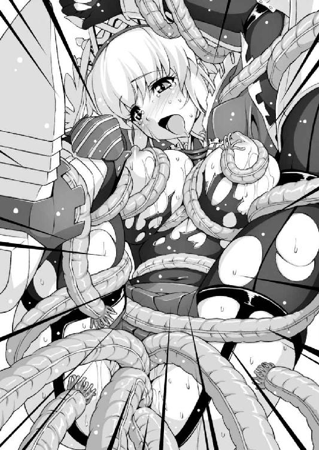
ぐっちゅぐっちゅと淫らな音と共に撒き散らされるのは触手の体液、そしてローゼ自身のはしたないま○こ汁。
それを浴びた触手が悦びにのたうち回り、その振動で部屋全体が轟音に包まれる。
そして姫騎士の痴態をじっと見つめる少年魔王の身体にも、かつてない恐ろしい異変が起きかけていた。
「な、なんだよこれ!? な、なんだかおちんちんが硬く、大きくなってきた......？ まさか、何かの呪い!?」
「あぅう、おま○こも......お尻もいっぱいッ。まだ......まだまだ、ですわ......！ もっとすごい触手試練で、わたくしを屈服させてご覧なさいッッッ!!」
初めての身体の変化に少年魔王は混乱していた。
半裸で触手に嬲られる女勇者を見ているだけで、股間のものはますます熱く、痛いほど膨張してくる。
右手でそこを押さえると、痛みとも快感ともつかない不思議な感覚が走り抜ける。
「ち、ちんちんが痛くてたまらない。うわぁ、な、なんだこれぇ！ どうしよう、ボクのちんちんが呪いで腫れ上がってるよぅ!!」
外に取り出した勃起ペニスを見て、少年が不安な声を上げる。
年端もゆかない少年にしてはなかなか立派な陰茎が、包皮の内側からピンク色の亀頭を覗かせている。
生まれて初めての勃起にイアンは混乱し、これはきっと勇者が罠にかかった振りをして魔法攻撃を仕掛けてきたのだと思い込んだ。
（まさか、あっさり触手に捕まったのもカモフラージュ？ 身動き一つできなかったはずなのに............うわぁああっ？）
「いぃ、いぃいっ、イクいくイクゥうううう！ おま○こッッ、おま○こ試練と、お尻の穴でッ、どっちもイッチャぅうう!!」
びくん、びくんびくんっ。
勇者の肢体が激しく痙攣し、部屋全体が地震のように揺れる。壁にぎっしり潜んでいた触手魔物がローゼリアのエクスタシーに呼応して暴れ回っているのだ。
「さ、最初からこれが狙いだったのか！ くそっ、やっとこっちの縛めが解けたってのに、ううっ、ま、まともに立てない......」
玉座から立ち上がりかけた少年魔王がよろけて尻餅をつく。
勃起して重みを増した股間のイチモツのおかげでバランスを崩したのだ。
ゴゴゴゴゴゴ......地響きと共に振動が激しく、大きくなっていく。壁に亀裂が走り、イアンは立ち上がることすらできない。
（老朽化した魔王城が、一気にバランスを失ってる！ そうか......オンボロでまともに機能しないこの城のトラップをすべて起動させることで、この城ごと崩壊させるつもりだったのか！ なんて知略なんだ!!）
その証拠に、触手に搦め捕られて悶えていた女勇者の姿がない。
部屋そのものが崩壊した拍子に、触手から解放されたのだ。自由になった姫騎士は一直線にこの玉座の間を目指している。
「はぁ、はぁ、はぁ......なんだか辺りが騒がしいけれど、どうやらここが城のいちばん最奥みたいですわね。あら？」
「ひいっ」
乳房をまろび出した半裸の甲冑姿の騎士を認め、イアンはペニスを丸出しにしたまま声を失う。
（お、おしまいだ......ああ、ちんちんが熱くて重くて、逃げることもできない）
「まあ、まあまあまあ。あなたはいったい」
「ボッ、ボクは」
こうなったら、とイアンは覚悟を決める。
たった一人で魔王城を崩壊せしめた勇者相手にどこまで敵うかわからないが、せめて相打ち覚悟で......と思って女勇者を睨む。
だが勇者は敵意も殺気もない目で少年を見つめ、ぱぁっと顔を輝かせた。
「あなたっ、魔王に囚われていたのですね？ よかった、お名前は？」
「えっ、あの。イ、イアン......です」
「そうイアン。魔王はどこですの。ここにはあなただけのようですし、さては！」
「ひぃっ！ ま、魔王は、その、あなたの格好を見て、そ、その」
少年は騎士の迫力と勃起の恥ずかしさからまともに答えられない。
と、女騎士は何かに気づいたようにかぁ〜っと耳まで真っ赤になってしまった。
「み、見られていたのですか!? わたくしが、お、おま○こやお尻の穴をぐちゅぐちゅされて、ああああ、いやらしい声で悶えていたところ......なんということかしら。魔王はきっとわたくしに呆れて逃げてしまったのですね」
「ええと、それは」
「せっかく、せっかく魔王がわたくしをッッ！ 勇者をいたぶり、最高の恥辱を与えんと待ち受けていたでしょうに......！ その好機を逃すとは、一生の不覚ですわ......」
甲冑はボロボロ、半裸の騎士は「騎士の試練」という言葉もすっかり忘れ、魔王に陵辱され損ねたという事実を前に悲憤する。
「あ、あのぅ......魔王は別にそんなことをしたかったわけではないのでは」
「いいえッ、そうなのです!!」
眼前に迫る女騎士の顔に、ひいと叫んで腰を抜かす。
「ついついおま○こやお尻の気持ちよさにうつつを抜かしてしまい......嗚呼ッ！ わたくしは自らの弱さを恥じます！ そして罰を受けなければ......!! あら、あなた」
がらがらと壁が崩れ落ちる中、息を荒げ慟哭する姫騎士は、少年の股間の勃起ペニスに視線を注ぎ、じゅるりと舌なめずりをした。
潤んだ眼差しに妖しい光が宿る。何かいいことを思いついたと言わんばかりに好色な笑みを浮かべ、いやらしく腰をくねらせ太腿を擦りあわせる。
「ひ、ひぃッ！ な、何を......ッッ!?」
にまにましながら身を擦り寄せてくる騎士に、イアンは目を丸くする。
「あらあら、むふふふ......ッ。幼いながらこんなにパンパンに張りきって......こういう立派なちんぽでめちゃくちゃにお仕置きをされるとか、まさに、いまのわたくしにふさわしい罰ですわ......ッッ！」
「うぁっ、あぁあっ？」
きゅっ、と陰茎を握られてイアンは情けない声を上げる。
少年は、間近に見た女勇者の顔に愕然とする。
この美貌には見覚えがある。偽魔王軍に囚われて辱めを受けていた女騎士だ。
（まさかあの人が勇者だったなんて！ あのときからボクのことに気づいていたんだ。わざと無力な振りをして、ボクを観察してたに違いない。ボクなんかいつでも倒せるっていう自信があったから）
現に城が崩壊しようというこの非常時にも慌てることなく、うっとりとした眼差しでイアンのペニスを優しくしごいている。
魔王の力など問題にもしていない不遜な勇者の態度に心底怯えながらも、少年のうぶな肉茎はぴんぴんに勃起して熱を帯びていく。
「あぁ......わたくしは魔王討伐に赴きながら、快楽にうつつを抜かすいやらしい騎士なのです。どうか、このはしたないま○こにお仕置きをして下さいッッッ！」
「うっ？ く、ぁああ......ッ、あ、あったかい............！」
反り返った茎の上に跨って、腰をくねらせながら落としていく。
にゅるんっ、とたっぷりの蜜液が溢れた花弁が優しく茎を包み込み、飲み込んでいく。触手とは違う硬さにローゼリアは唇をわななかせる。
「あぁ、硬いッッ！ こんなふうに、ちんぽで、おま○こずこずこされるのが大好きな、いけない娘なんですぅうッッ!!」
「ひいいっ、熱いよっ、熱くて、吸いついてくるぅっ？」
「む、無敵の姫騎士とか言われてますけれど、ホントはおま○こやお尻を責められてよがっちゃうのッッ！ いやらしい変態なんでしゅぅうッッッ!!」
ぐちゅっ、にゅるんっ、ずぶ、ずぶぶっ。
少年を床に押し倒し、淫らに腰をくねらせるローゼリア。
蜜液のぬるみとしなやかな膣肉の締めつけ、そして巧みな腰のひねりとピストン運動に、イアンは翻弄される。
勃起にすら慣れていない童貞ペニスにとって、幾多の「試練」を乗り越えてきた乙女の肉壺はあまりにも強敵に過ぎた。
「うあぁあ、なんか出ちゃうっ。漏れちゃうッ、漏れちゃうよおぉッッ」
「らめぇえ、もっとおま○こぐちゅぐちゅしてくれなきゃらめぇえっっ！ ここっ、豚に犯されたスケベま○こにお仕置きしてぇええッッッ」
「うぁああっ、わぁああっっ」
がばりと抱きかかえられたかと思うと、少年は騎士にのしかかる格好になった。
わけもわからず「腰を振れ」「ちんぽを突き出せ」と言われるままにいい匂いのする女体にしがみつき、がくがくと不器用に腰をピストンさせる。
「あ、あぁっ......おま○この中で、お、おっきくなるぅう！ はわあぁ、メスブタま○こ、ちんぽでずこずこされて感じるッ！ 騎士の試練なのに感じちゃうのぉお......ッッ!!」
「うわぁあああああああああ！」
変態痴女さながらに、年下の少年をリードしていたローゼの声が変わった。
いや、イアンの動きが守勢から攻勢に転じたのだ。
（ボクどうなってるんだ。狂暴な気分が満ち溢れてきて自分が抑えられない......こ、こんなの初めてだよぅ!?）
ずん、ずん、ずしぃいいんっ。小柄だがバネのきいた下肢が跳ね上がり、力強くローゼリアの女芯を縫い止める。
「あくぅううっ、す、すごいぃいっ。おま○こにぎちぎちにつまったちんぽが、わたくしの中をッッ。いじめてぇ、もっといじめてくらさいぃいんんっ」
「うがぁあああああッッッ！ ぐぉおおッ、おぉおおおおおお」
ぐるんっ。
少年とは思えない膂力で騎士の身体を抱きしめ、イアンは対面騎乗位で乙女の股間を突き貫いた。ぼぐん、とローゼリアの下腹部が膨れ上がる。
「ぐふぅううッッ！ くぉぅうんっ、くぅ、くふぅううッッ」
「ぐぁっ、ぐぉおおっ。ボ、ボクは............わ、ワレは、まお......」
ぱしぃいいんっ。ばし、ばし、びしゃぁあっ。
強烈な平手打ちが乙女の尻に炸裂し、真っ赤な紅葉の跡を残す。
「ぴぎゃぁあっ！ お、おひりぃい、おひりお仕置きされてるぅうっ」
「うぉおぁああああッッ、望み通りぶち壊してやるぜぇええッッッ!!」
「し、してぇッッ、メスブタま○こ、めちゃくちゃに壊してぇえええッッ」
「ぐあぁああッ、このッ、はしたないメスブタ女めが!! 貴様はこの魔王、イアン＝ベテルギウスのモノだッ、身体の内側に刻んでやるぞぉおお！」
ずぶ、ずぶ、ずぶぶっ。上下に大きく腰を揺らし、剛直を根本まで飲み込む。
破壊の化身、闇の頂点、暗黒の大魔王の本性に目覚めた少年が、恐ろしい声を吐きながらスパートをかけた。
「孕ませデヤルヴヴヴ！ オレ専用のま○こにしてやるぜぇえええええ」
「してぇえっ、あなた専用のッ、肉奴隷ま○こにしてくらさいぃいい！ 魔王さまのちんぽ汁で孕ませてぇええええ」
「グァアアアアアアアアアアアアアアア」
どくんっ、どくどくっ、どくんッッッ。
「あひゃぅううううううんんっ、いくイグゥウ、イッちゃうぅうううううッッッ!!」
（熱いお汁がッ、注ぎ込まれる......ッッ！ 子どものちんぽ汁で、イカされる......ッッ）
大量の子種汁がローゼリアの子宮を満たし、どろどろの白濁が噴水のように噴き上がる。 姫騎士は強烈なエクスタシーに飲み込まれ、ガクガクと痙攣する。
（止まらない、気持ちいいの止まらない......これが、まぐわい............なのね）
ようやく膣の中で陰茎が力を失いかけたころ、姫騎士はアクメの余韻の中でふと首を巡らせた。と、いまにも崩落寸前の城の天井が目に入った。
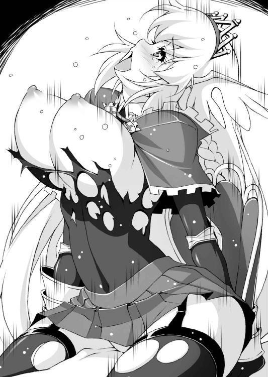
「いけない、破片がッッ。イアン、危ない!!」
ローゼリアは少年を突き飛ばしてその上に覆い被さる。
いくつもの大きな破片が降り注ぎ、その一片がもろに姫騎士の後頭部を直撃した。
「ふぎゃっ？」
衝撃に視界が暗転する。
意識が闇に飲み込まれていく寸前、ローゼリアは少年の言葉を思い出していた。
（イアン......魔王イアン＝ベテル、ギ......ウス......？ まさか............）
少年が魔王を名乗っていたことに気づいたのもつかの間、姫騎士の意識は暗転した。
魔王城崩壊から数時間後。
マントにくるまった少年と角の執事がとぼとぼと北の荒野を歩いていた。
「まったく、わたくし情けない限りでございます、イアンさま」
「........................」
「よりにもよって敵に、勇者に助けられるなどと魔王にあるまじき失態！」
「............自分はずっと昼寝してたくせに」
「しかも昏倒した勇者の命を奪うどころか、這々の体で逃げてくるとはみっともないにもほどがありますぞ坊ちゃま！」
「う......」
「ところで、いったい何ゆえ坊ちゃまは局部を丸出しにして逃げてこられたので？」
「............言いたくない」
「雪辱戦はもちろん考えておられるのでしょうな？」
「えー、やらなきゃダメ？」
「無論でございましょう！ リターンマッチで今度こそ完膚なきまでに勇者を叩きのめし、血の海に沈めてこその魔王さまです」
「何度やっても返り討ちに遭うような気がする......」
あのときの出来事は記憶がところどころ飛んでいる。
しかしおぼろげに、自分が何かとんでもない力を発揮しかけていたような気がして、イアンはそれが恐ろしかった。
（いや、ボクが恐れてるのは自分の中に眠る魔王の本性、じゃない）
「倒壊した魔王城もどこかに建て直す必要がありますな。まさか坊ちゃんはもう魔王などお嫌になったとは申されますまいな？」
「辞めるって言っても聞かないだろう」
「無論でございます。いったいなぜそこまで消極的におなりになったのです。よもや、勇者との戦いで精神的な傷でも」
「........................」
「イアン坊ちゃま？」
「....................................女の人、怖い......」
若き魔王が初体験のトラウマから立ち直るには、まだ少し時間がかかりそうだった。
「なぁ〜に馬鹿ヅラで眠りこけてるかなぁ、この馬鹿騎士さまはぁっ！」
げいん！ と側頭部に鋭い蹴りを叩き込まれ、ローゼリアは飛び上がった。
「いったぁ〜〜、何するのよパセラ。ずいぶん遅かったのねぇ」
「うるさいっ、あんたを瓦礫の山から掘り出すのにどれだけ苦労したと......なんだってこんな北の辺境まで来てたわけ、あんたは」
旅に出てまだそれほど経ってもいないのに、黒マントに身を包んだ幼馴染みで従者の魔法使いの顔は、ずいぶん懐かしく見えた。
「まさか、ここが魔王城だとか寝言をほざいたりはしないわよね？ それにしてもなんて格好してるんだか」
そう言われて、あらためて半裸状態の自分に気がついた。
巨乳は丸出しで下着もなく、その他装備もほとんどボロボロだ。
恥ずかしさよりも先に、凍てつく寒風に晒され、姫騎士は「くしゃん！」と可愛いくしゃみをした。
（魔王城に数々のトラップ......それにあの男の子。夢、ではないわよね。ということはわたくし、そうと知らず魔王の少年を押し倒して、無理矢理力尽くで......）
ぼっ、と顔が燃えるように熱くなる。
「どうしたの？ ローゼリア」
「な、な、なんでもないわパセラ。本当に、ええ、なんでもないの」
（まさか復活した魔王は実は幼い少年で、その魔王を押し倒して犯しちゃったとか、言えるはずないわ）
言ったところでこの皮肉屋の従者は信じはしないだろう。
「そろそろ気も済んだでしょう。お城に戻りましょう......って、こらそこ！ それ私の財布ゥウウウ」
「だぁって、路銀がないと旅を続けられないじゃないの。当たり前でしょうパセラ」
「まぁ〜〜だこんなドアホ旅続ける気かぁっ、このうすらボケ姫！」
どん、どん、どかぁあああんっ。
地水火風、各種の攻撃魔法が乱舞し、地面を穿ち岩を砕くが、姫騎士はそれをことごとくかわし、ぼろぼろの甲冑のまま駆けていく。
（結局、魔王と剣を交えることは......なんだか別のモノを交えてしまったのかもしれないけれど。わたくしもまだまだ修行不足だったということだわ）
「こらぁッ、待ちなさいローゼ！ ローゼリアァアアアアア」
（いつか本当の勇者になって、もう一度相まみえましょう、イアン！ 来るべきその日のために、わたくしはもっと鍛え続けます、剣も、ま○こも!!）
北の地の空の向こうを見上げながら、ローゼリアは決意を新たにするのだった。
あとがき
キャラのネーミングが結構苦手です。
ぽん、と出る場合もあるのですが、今回の場合出てきたのはローゼリアとパセラの「名字」でした。
なので名前の方はかなり紆余曲折の結果です。
理由は多々あるのですが、結局プロットの段階ではまだ作者自身、この子が海のものとも山のものともついていないのです。
わたくしの中で姫騎士は生まれ落ちたばかり、互いに初対面なのでまだまだ気心が知れない状態です。
しかしお話が進み、作者の中でキャラが育っていくに連れて、キャラクターは確実に生きた存在になっていきます。
それに呼応して、名前もまた生きたものになっていくのでしょう。
ローゼリアも、いまではすっかり「ローゼリア」になったと思うのですがいかがでしょうか？
最後に、いつも的確なアドバイスをして下さる編集者さま、美麗なイラストを下さった池田靖宏さま、そしてこの本を手に取って下さった方に感謝いたします。
酒井仁
二次元ドリームノベルズから始まって、何気に各レーベルを渡り歩いている酒井です。このたびはあとみっく文庫でお世話になります。節操？ 何それおいしいの？
池田靖宏
初めまして池田靖宏と申します。挿絵のお仕事をさせて頂くのは久しぶりとなります。まだまだ不慣れでして、酒井先生の魅力的なキャラクターを活かす事ができたか不安ではありますが、楽しんで頂ければ幸いです。それでは日々精進しつつも次の機会がありましたらよろしくお願いいたします。
あとみっく文庫
無敵の姫騎士がドＭに目覚めたようです
著者 酒井仁
装丁 マイクロハウス
発行 株式会社キルタイムコミュニケーション
〒１０４-００４１ 東京都中央区新富１-３-７ヨドコウビル１Ｆ
著作権 ©Hitoshi Sakai 2012-2014
当ファイルは、あとみっく文庫『無敵の姫騎士がドＭに目覚めたようです』（２００９年12月５日 初版発行）に基づいて作成しております。
※本作品の全部あるいは一部を無断で複製・転載・配信・送信したり、ホームページ上に転載することを禁止します。本作品の内容を無断で改変、改ざん等行うことも禁止します。また、有償・無償にかかわらず本作品を第三者に譲渡することはできません。